Quần Vợt: Khoa Học Đứng Sau Thể Thao · Carla Mooney · Bản Dịch Việt Ngữ Song Ngữ
Bản dịch Việt ngữ này chỉ dùng cho mục đích học tập cá nhân, phi thương mại. Bản quyền tác phẩm gốc thuộc về tác giả và nhà xuất bản.
Những đầu sách khác trong bộ Khoa Học Đằng Sau Các Môn Thể Thao: Bóng chày Bóng rổ Trượt băng nghệ thuật Bóng bầu dục Mỹ Thể dục dụng cụ Khúc côn cầu trên băng Trượt ván tuyết Bóng đá Bơi lội Bóng chuyền © 2013 Gale, Cengage Learning MỌI QUYỀN ĐƯỢC BẢO LƯU. Không phần nào của tác phẩm này thuộc đối tượng bản quyền được sao chép, truyền tải, lưu trữ hoặc sử dụng dưới bất kỳ hình thức nào, bằng bất kỳ phương tiện nào, dù đồ họa, điện tử, hay cơ học, bao gồm nhưng không giới hạn ở sao chụp, ghi âm, quét, số hóa, ghi băng, phân phối qua Web, mạng thông tin, hoặc hệ thống lưu trữ và tra cứu thông tin, ngoại trừ các trường hợp được phép theo Mục 107 hoặc 108 của Đạo luật Bản quyền Hoa Kỳ năm 1976, mà không có sự cho phép trước bằng văn bản của nhà xuất bản. Đã thực hiện mọi nỗ lực để xác định chủ sở hữu của các tài liệu có bản quyền.
Other titles in the Science Behind Sports series: Baseball Basketball Figure Skating Football Gymnastics Ice Hockey Snowboarding Soccer Swimming Volleyball © 2013 Gale, Cengage Learning ALL RIGHTS RESERVED. No part of this work covered by the copyright herein may be reproduced, transmitted, stored, or used in any form or by any means graphic, electronic, or mechanical, including but not limited to photocopying, recording, scanning, digitizing, taping, Web distribution, information networks, or information storage and retrieval systems, except as permitted under Section 107 or 108 of the 1976 United States Copyright Act, without the prior written permission of the publisher. Every effort has been made to trace the owners of copyrighted material.
DỮ LIỆU XUẤT BẢN THƯ VIỆN QUỐC HỘI Mooney, Carla, 1970-Quần Vợt / của Carla Mooney. p. cm. -- (Khoa học đằng sau các môn thể thao) Bao gồm tài liệu tham khảo và chỉ mục.
LIBRARY OF CONGRESS CATALOGING-IN-PUBLICATION DATA Mooney, Carla, 1970-Tennis / by Carla Mooney. p. cm. -- (Science behind sports) Includes bibliographical references and index.
ISBN 978-1-4205-0928-1 (bản đóng cứng) 1. Quần vợt--Văn học thiếu nhi. I. Nhan đề.
ISBN 978-1-4205-0928-1 (hardback) 1. Tennis--Juvenile literature. I. Title.
GV996.5.M66 2013 796.342--dc23 2012049997 Lucent Books 27500 Drake Rd Farmington Hills Ml 48331 ISBN-13: 978-1-4205-0928-1 ISBN-10: 1-4205-0928-4 In tại Hoa Kỳ 1 2 3 4 5 6 7 17 16 15 14 13 MỤC LỤC Lời Tựa Chương 1 Lịch Sử Quần Vợt Chương 2 Tập Luyện và Thể Lực Chương 3 Sức Mạnh và Sự Kiểm Soát của Cây Vợt Chương 4 Khoa Học của Cú Nẩy Bóng Chương 5 Đưa Bóng vào Ô Chương 6 Tâm Lý Học Quần Vợt Ghi Chú Từ Điển Thuật Ngữ Để Biết Thêm Thông Tin Chỉ Mục Nguồn Ảnh Về Tác Giả V
GV996.5.M66 2013 796.342--dc23 2012049997 Lucent Books 27500 Drake Rd Farmington Hills Ml 48331 ISBN-13: 978-1-4205-0928-1 ISBN-10: 1-4205-0928-4 Printed in the United States of America 1 2 3 4 5 6 7 17 16 15 14 13 TABLE OF CONTENTS Foreword Chapter 1 The History of Tennis Chapter 2 Training and Conditioning Chapter 3 Racket Power and Control Chapter 4 The Science of the Bounce Chapter 5 Getting the Ball in the Box Chapter 6 The Psychology of Tennis Notes Glossary For More Information Index Picture Credits About the Author O
LỜI TỰA
ào ngày 21 tháng 3 năm 1970, tay nhảy ski người Slovenia Vinko Bogataj đã thực hiện một cú ngã kinh hoàng khi tranh tài tại Giải vô địch thế giới môn nhảy ski bay ở Oberstdorf, Tây Đức. Cú ngã xoay vòng của Bogataj đã được một đoàn làm phim của chương trình Wide World of Sports trên đài ABC ghi lại và cuối cùng trở thành từ đồng nghĩa với “nỗi đau của thất bại” trong thể thao thi đấu. Trong khi nhiều khán giả choáng váng trước mức độ nghiêm trọng của tai nạn của Bogataj, hầu hết đều không biết đến các yếu tố sinh cơ học và môi trường đằng sau cú ngã của vận động viên—lượng tuyết dày và điều kiện gió khiến mặt dốc quá nhanh cùng với việc Bogataj không thể duy trì trọng tâm cơ thể và tự hãm mình lại. Tai nạn của Bogataj cho thấy rằng, dù một vận động viên được chuẩn bị về tinh thần và thể chất đến đâu, các nguyên lý khoa học—như động lượng, trọng lực, ma sát và khí động học—luôn có tác động đến thành tích thi đấu.
n March 21, 1970, Slovenian ski jumper Vinko Bogataj took a terrible fall while competing at the Ski-flying World Championships in Oberstdorf, West Germany. Bogataj’s pinwheeling crash was caught on tape by an ABC Wide World of Sports film crew and eventually became synonymous with “the agony of defeat” in competitive sporting. While many viewers were transfixed by the severity of Bogataj’s accident, most were not aware of the biomechanical and environmental elements behind the skier’s fall—heavy snow and wind conditions that made the ramp too fast and Bogataj’s inability to maintain his center of gravity and slow himself down. Bogataj’s accident illustrates that, no matter how mentally and physically prepared an athlete may be, scientific principles—such as momentum, gravity, friction, and aerodynamics—always have an impact on performance.
Bộ sách Khoa Học Đằng Sau Các Môn Thể Thao của Lucent Books khám phá những nguyên lý khoa học này và nhiều nguyên lý khác đằng sau một số môn thể thao đồng đội và cá nhân phổ biến nhất, gồm bóng chày, khúc côn cầu trên băng, thể dục dụng cụ, vật, bơi lội và trượt tuyết. Mỗi cuốn trong bộ sách tập trung vào một môn thể thao hoặc một nhóm các môn thể thao có liên quan. Các cuốn sách mở đầu bằng một cái nhìn ngắn gọn về nguồn gốc, lịch sử và những thay đổi của môn thể thao chủ đề, rồi chuyển sang đề cập đến sinh cơ học và sinh lý học khi chơi môn này, các vấn đề sức khỏe và y tế liên quan, cùng nguyên nhân và cách điều trị các chấn thương liên quan đến thể thao.
Lucent Book’s Science Behind Sports series explores these and many more scientific principles behind some of the most popular team and individual sports, including baseball, hockey, gymnastics, wrestling, swimming, and skiing. Each volume in the series focuses on one sport or group of related sports. The volumes open with a brief look at the featured sport’s origins, history and changes, then move on to cover the biomechanics and physiology of playing, related health and medical concerns, and the causes and treatment of sports-related injuries.
Ngoài việc tìm hiểu về đường vòng cung đằng sau một quả bóng cong, tác động của lực hướng tâm lên một vận động viên trượt băng nghệ thuật, hay cách lực nổi của nước giúp các vận động viên bơi lội, độc giả của Khoa Học Đằng Sau Các Môn Thể Thao cũng sẽ học được cách tập luyện, khởi động, chế độ ăn uống và dinh dưỡng liên quan trực tiếp đến thành tích đỉnh cao và sự thưởng thức môn thể thao như thế nào. Các cuốn sách cũng có thể đề cập đến lý do một số môn thể thao nhất định lại phổ biến, thể thao hoạt động ra sao trong thế giới kinh doanh, và những vấn đề nóng hổi nào của thể thao—chẳng hạn như doping và gian lận—đang xuất hiện trên các phương tiện truyền thông.
In addition to learning about the arc behind a curve ball, the impact of centripetal force on a figure skater, or how water buoyancy helps swimmers, Science Behind Sports readers will also learn how exercise, training, warming up, and diet and nutrition directly relate to peak performance and enjoyment of the sport. Volumes may also cover why certain sports are popular, how sports function in the business world, and which hot sporting issues—sports doping and cheating, for example—are in the news.
Các khái niệm khoa học vật lý cơ bản, như gia tốc, động học, mô-men xoắn, và vận tốc, được giải thích một cách hấp dẫn và dễ tiếp cận. Văn bản in màu được bổ sung bởi các hộp thông tin, chú thích bên lề, ảnh chụp, cùng sơ đồ, biểu đồ và đồ thị chi tiết. Ngoài ra, một bảng thuật ngữ chuyên ngành, thư mục tài liệu và chỉ mục cung cấp thêm công cụ để nghiên cứu về các môn thể thao và các khái niệm được thảo luận xuyên suốt trong bộ sách Khoa Học Đằng Sau Các Môn Thể Thao.
Basic physical science concepts, such as acceleration, kinetics, torque, and velocity, are explained in an engaging and accessible manner. The full-color text is augmented by fact boxes, sidebars, photos, and detailed diagrams, charts and graphs. In addition, a subject-specific glossary, bibliography and index provide further tools for researching the sports and concepts discussed throughout Science Behind Sports.
K T
S I
CHƯƠNG 1
Lịch Sử Quần Vợt ể từ khi giành chức vô địch U.S. Open đầu tiên vào năm 1999, tay vợt chuyên nghiệp người Mỹ Serena Williams đã thống trị làng quần vợt nữ. Tính đến năm 2012, cô đã giành tổng cộng mười bốn danh hiệu đánh đơn Grand Slam, huy chương vàng Olympic, và nhiều chức vô địch đánh đôi cùng chị gái Venus Williams. Khi Williams lớn lên và liên tiếp dính chấn thương, nhiều người đã dự đoán rằng ngôi sao quần vợt sẽ sớm treo vợt và giải nghệ. Williams nhanh chóng dập tắt những lời đồn. Trong một cuộc phỏng vấn năm 2012, cô tuyên bố rằng tình yêu với môn thể thao này sẽ khiến cô tiếp tục thi đấu thêm nhiều năm nữa. “Tôi không có ý định dừng lại. . . . Tôi cảm thấy rất vui khi được ra sân thi đấu và Tôi đã có quá nhiều niềm vui, nên thật tuyệt vời,”1 cô nói.
The History of Tennis ince winning her first U.S. Open in 1999, American professional tennis player Serena Williams has dominated women’s tennis. As of 2012, she had won a total of fourteen Grand Slam singles titles, Olympic gold medals, and many doubles championships with her sister, Venus Williams. As Williams got older and suffered a string of injuries, many people predicted that the tennis star would soon hang up her racket and retire. Williams quickly dashed the rumors. In an interview in 2012, she declared that her love of the game would keep her playing for many more years. “I have no intention of stopping. . . . I enjoy being out there on the court so much and I’ve been having so much fun, so it’s been great,”1 she said.
Một Môn Thể Thao Toàn Cầu Người dân khắp thế giới đang yêu mến môn quần vợt. Được chơi bởi cả những người chuyên nghiệp lẫn nghiệp dư, quần vợt là một trong những môn thể thao phổ biến nhất thế giới. Hàng triệu người chơi môn này. Hàng triệu người khác nữa thích xem, đặc biệt các giải đấu chuyên nghiệp.
A Global Sport People around the world are in love with the game of tennis. Played by professionals and amateurs alike, tennis is one of the world’s most popular sports. Millions play the game. Millions more like to watch it, particularly professional tournaments.
Người Mỹ Gốc Phi Vung Vợt rong những năm đầu thế kỷ XX, tổ chức ngày nay được biết đến với tên Hiệp hội Quần vợt Hoa Kỳ (USTA) không cho phép người Mỹ gốc phi tham dự phần lớn các giải đấu của mình. Kết quả là, một nhóm những người đam mê quần vợt da đen đã thành lập Hiệp hội Quần vợt Mỹ (ATA) vào năm 1916. Đây là tổ chức thể thao da đen đầu tiên tại Hoa Kỳ.
African Americans Swing the Racket n the early twentieth century, the organization known today as the United States Tennis Association (USTA) did not admit African Americans to the majority of its events. As a result, a group of black tennis enthusiasts formed the American Tennis Association (ATA) in 1916. It was the first black sports organization in the United States.
ATA đã phát triển một hệ thống thi đấu riêng, nơi các tay vợt người Mỹ gốc phi có thể tranh tài. Tổ chức này đã tổ chức Giải Vô địch Quốc gia ATA đầu tiên tại Công viên Druid Hill ở Baltimore, Maryland, vào tháng 8 năm 1917.
The ATA developed its own tennis circuit in which African American tennis players could compete. The organization held its first ATA National Championships at Druid Hill Park in Baltimore, Maryland, in August 1917.
Năm 1940, rào cản chủng tộc trong quần vợt bắt đầu được phá vỡ khi trận đấu liên chủng tộc đầu tiên diễn ra. Don Budge, nhà vô địch giải Grand Slam quần vợt năm 1938, đã gặp nhà vô địch ATA Jimmie McDaniel trong một trận đấu giao hữu. Rào cản lại được phá vỡ mạnh mẽ hơn khi một cô gái trẻ tên Althea Gibson giành được sự chú ý của cả nước vào những năm 1950. Được mời tham dự Giải Vô địch Quốc gia Mỹ năm 1950, Gibson đã tiếp tục giành năm danh hiệu đánh đơn Grand Slam và sáu danh hiệu đánh đôi.
In 1940 the color barrier in tennis began to crack when the first interracial match was played. Don Budge, winner of the 1938 tennis Grand Slam, met ATA champion Jimmie McDaniel in an exhibition match. The barrier cracked even more when a young woman named Althea Gibson captured the nation’s attention in the 1950s. Invited to play in the 1950 U.S. Nationals, Gibson went on to win five Grand Slam singles titles and six doubles titles.
Vào những năm 1960, tay vợt người Mỹ gốc phi Arthur Ashe vươn lên vị thế nổi bật trong môn thể thao này. Trong suốt sự nghiệp của mình, Ashe đã giành ba mươi lăm danh hiệu đánh đơn nghiệp dư và ba mươi ba danh hiệu đánh đơn chuyên nghiệp, trong đó có Australian Open 1970 và Wimbledon 1975. Ông là người da đen đầu tiên thi đấu tại và giành chiến thắng ở nhiều giải đấu của môn thể thao này, mở đường cho các vận động viên quần vợt da đen đi theo sau ông. Năm 1997, Sân vận động Arthur Ashe đã được xây dựng ở New York và mang tên ông để tôn vinh. Sân vận động này là nơi diễn ra U.S. Open.
In the 1960s African American Arthur Ashe rose to prominence in the sport. During his career, Ashe won thirty-five amateur single titles and thirty-three professional single titles, including the 1970 Australian Open and 1975 Wimbledon. He was the first black man to play in and to win many of the sport’s tournaments, opening the door for black tennis athletes who followed him. In 1997 the Arthur Ashe Stadium was built in New York and named in his honor. The stadium hosts the U.S. Open.
Arthur Ashe giơ cao chiếc cúp của nhà vô địch sau chiến thắng tại Wimbledon năm 1975.
Arthur Ashe displays the victor’s trophy after his win at Wimbledon in 1975.
Quần vợt chuyên nghiệp từng bị thống trị bởi các vận động viên Anh và Mỹ, nhưng ngày nay những tay vợt hàng đầu đến từ khắp nơi trên thế giới. Bắt đầu từ cuối thế kỷ XX, quần vợt bước vào các thị trường mới, thu hút lượng khán giả rộng lớn hơn, và khuyến khích các tài năng trẻ trên toàn cầu. Sự xuất hiện của những ngôi sao quần vợt như Rafael Nadal đến từ Tây Ban Nha, Maria Sharapova đến từ Nga và Li Na đến từ Trung Quốc đã biến quần vợt thành môn thể thao thực sự toàn cầu. Năm 2011, lần đầu tiên kể từ khi bảng xếp hạng vận động viên ra đời vào năm 1975, mười tay vợt nữ hàng đầu đến từ mười quốc gia khác nhau. “Việc có 10 vận động viên khác nhau đại diện cho top 10 bảng xếp hạng cho thấy quần vợt đã toàn cầu hóa đến mức nào,”2 bà Stacey Allaster, chủ tịch kiêm tổng giám đốc điều hành của Hiệp hội Quần vợt Nữ (WTA), tổ chức điều hành toàn cầu cho quần vợt chuyên nghiệp nữ, cho biết. Bảng xếp hạng nam năm 2011 cũng phản ánh xu hướng toàn cầu của quần vợt, với các tay vợt đến từ bảy quốc gia khác nhau trong danh sách.
Professional tennis was once dominated by English and American athletes, but today top tennis players come from all over the globe. Starting in the late twentieth century, tennis moved into new markets, attracted wider audiences, and encouraged young talent worldwide. The emergence of tennis stars such as Rafael Nadal from Spain, Maria Sharapova from Russia, and Li Na from China has made tennis a truly global sport. In 2011, for the first time since the beginning of player rankings in 1975, the top ten women tennis players represented ten different countries. “Having 10 different players represent the top 10 rankings shows how truly global tennis has become,”2 says Stacey Allaster, chairwoman and chief executive officer of the Women’s Tennis Association (WTA), the global organizing body for women’s professional tennis. The 2011 men’s rankings also reflect tennis’s global trend, with players from seven different countries on the list.
Những người phụ nữ đầu tiên thi đấu tại giải Wimbledon phải mặc váy dài.
The first women to play in the Wimbledon tournament wore full-length dresses.
Nguồn Gốc Của Quần Vợt Mặc dù quần vợt được chơi trên khắp thế giới ngày nay, vẫn chưa rõ chính xác môn này bắt đầu như thế nào và khi nào. Con người đã chơi các trò chơi bóng từ nhiều thế kỷ, có từ thời các nền văn minh Ai Cập và Hy Lạp cổ đại. Một số nhà sử học tin rằng quần vợt có nguồn gốc từ những trò chơi bóng ban đầu này. Những người khác lại tin rằng nguồn gốc của môn này bắt rễ từ vùng Tuscany, Ý, vào thế kỷ thứ năm, nơi những người dân làng chơi các trò chơi bằng cách dùng tay trần để đánh bóng trên phố.
The Origins of Tennis Although tennis is played all over the world today, it is unclear exactly how and when the game began. People have played ball games for centuries, dating back as early as ancient Egyptian and Greek societies. Some historians believe that tennis has its origins in these early ball games. Others believe the game’s roots are planted in fifth-century Tuscany in Italy, where villagers played games using their bare hands to strike balls in the street.
Nhiều nhà sử học tin rằng các tu sĩ châu Âu vào thế kỷ thứ mười một và thứ mười hai đã phát triển một trong những phiên bản quần vợt sớm nhất. Giống như những người dân Tuscany nhiều thế kỷ trước họ, các tu sĩ cũng dùng tay trần để đánh bóng qua lại, nhưng họ làm điều đó trên một sân trong nhà. Trò chơi được gọi là jeu de paume, nghĩa là “trò chơi của lòng bàn tay” trong tiếng Pháp. Theo thời gian, các tuyển thủ bắt đầu đeo găng tay da để chơi. Sau đó một số tuyển thủ dùng một chiếc vợt gỗ để đánh và giao bóng; chiếc vợt gỗ đó đã trở thành cây vợt quần vợt đầu tiên. Đến năm 1500, các tuyển thủ đã đánh bóng bằng những cây vợt khung gỗ, và trò chơi vẫn thường được chơi trên các sân trong nhà.
Many historians believe that European monks in the eleventh and twelfth centuries developed one of the earliest versions of tennis. Like the Tuscan villagers centuries before them, the monks used their bare hands to bat a ball back and forth, but they did it on an indoor court. The game was called jeu de paume, which means “game of the palm” in French. Over time, players began wearing leather gloves to play the game. Later some players used a wooden paddle to hit and serve the ball; the paddle became the first tennis racket. By 1500, players were hitting the ball with wood-framed rackets, and the game was still typically played on indoor courts.
Theo các nhà sử học, jeu de paume trở nên phổ biến trong các tu viện khắp châu Âu vào thế kỷ thứ mười bốn. Những quả bóng dùng trong các trò chơi ban đầu này được làm bằng gỗ. Theo thời gian, quả bóng đã tiến hóa thành xenluloz hoặc vật liệu thực vật được bọc trong da, giúp quả bóng nẩy tốt hơn.
According to historians, jeu de paume became popular in monasteries across Europe in the fourteenth century. The balls used in these early games were made of wood. Over time the ball evolved into cellulose or plant-based material enclosed in leather, which made it bouncier.
Trò Chơi Của Các Nhà Vua Sự phổ biến của jeu de paume nhanh chóng lan rộng từ các tu viện đến các hoàng gia châu Âu. Vua Louis X của Pháp, trị vì từ năm 1314 đến 1316, được biết đến là một người chơi jeu de paume cuồng nhiệt. Nhà vua đã cho xây dựng một trong những sân quần vợt trong nhà theo phong cách hiện đại đầu tiên tại Paris. Thiết kế sân trong nhà nhanh chóng lan rộng đến các cung điện hoàng gia khắp châu Âu. Louis qua đời năm 1316 sau một trận đấu đặc biệt cam go, nhưng cái chết của ông không làm giảm bớt nhiệt huyết của đất nước ông đối với jeu de paume.
A Game of Kings The popularity of jeu de paume quickly spread from monasteries to the royal houses of Europe. King Louis X of France, who reigned from 1314 to 1316, was known as an avid player of jeu de paume. He constructed one of the first modern-style indoor tennis courts in Paris. The indoor design quickly spread to royal palaces throughout Europe. Louis died in 1316 after a particularly hard game, but his death did not dampen his country’s enthusiasm for jeu de paume.
Vua Francis I của Pháp, trị vì từ năm 1515 đến 1547, được cho là một người chơi jeu de paume cuồng nhiệt, đã thúc đẩy môn thể thao này và xây dựng nhiều sân khắp đất nước mình. Đến năm 1600, đã có tới hai nghìn sân trên khắp nước Pháp. Trước khi giao bóng, các tuyển thủ Pháp sẽ hô lên từ tenez, một dạng của động từ tiếng Pháp tenir, có nghĩa là “nắm giữ.” Một số người tin rằng từ này cuối cùng đã tiến hóa thành tên gọi hiện đại của quần vợt.
King Francis I of France, who reigned from 1515 to 1547, was reported to be an enthusiastic jeu de paume player who promoted the sport and built many courts around his country. By 1600, there were as many as two thousand courts across France. Before serving, the French players would shout the word tenez, a form of the French verb tenir, which means “to hold.” Some believe this word eventually evolved into the modern name of tennis.
Không chịu thua kém đối thủ Pháp, các vị vua nước Anh cũng tiếp thu jeu de paume. Trong triều đại của Vua Edward III, trị vì từ năm 1327 đến 1377, một sân jeu de paume đã được xây dựng tại Lâu đài Windsor. Vào những năm 1530, Vua Henry VIII, trị vì từ năm 1509 đến 1547, đã cho xây dựng một sân quần vợt trong nhà tại Cung điện Hampton Court, nơi bóng có thể được đánh dội vào tường.
Not to be outdone by their rivals in France, the kings of England also adopted jeu de paume. During the reign of King Edward III, who ruled from 1327 to 1377, a jeu de paume court was built at Windsor Castle. In the 1530s, King Henry VIII, who reigned from 1509 to 1547, built an indoor tennis court at Hampton Court Palace, where the ball could be hit off the wall.
Năm 1988, Steffi Graf trở thành tay vợt duy nhất giành cả bốn giải Slam và huy chương vàng Olympic trong cùng một năm. Thành tích này được gọi là Golden Slam.
In 1988 Steffi Graf became the only tennis player to win all four Slam tournaments and the Olympic gold medal in a single year. This feat is called the Golden Slam.
Với rất nhiều vị vua và quý tộc chơi môn này, trò chơi cuối cùng trở thành được biết đến với tên gọi real, hay quần vợt hoàng gia. Quần vợt hoàng gia ngày càng phổ biến và được chơi rộng rãi khắp châu Âu trong các thế kỷ XVII và XVIII.
With so many kings and noblemen playing, the game eventually became known as real, or royal, tennis. Royal tennis grew in popularity and was widely played in Europe during the seventeenth and eighteenth centuries.
Khi môn thể thao ngày càng phổ biến, luật chơi và trang thiết bị cũng trở nên được tiêu chuẩn hóa hơn. Nhiều tuyển thủ bắt đầu dùng vợt thay vì dùng tay để đánh bóng qua lại. Một sân quần vợt hoàng gia điển hình là một sân trong nhà hẹp nơi bóng có thể được đánh dội vào tường. Lưới cao 5 feet (1,5m) ở mỗi đầu sân và cao 3 feet (1m) ở giữa.
As the sport grew in popularity, the rules and equipment became more standardized. More players began to use rackets instead of their hands to hit the ball back and forth. A typical royal tennis court was a narrow indoor court where the ball could be played off the walls. The net was 5 feet high (1.5m) at each end and 3 feet high (1m) in the middle.
Một bức tranh minh họa từ năm 1581 mô tả một quý tộc người Pháp cầm vợt để chơi jeu de paume, hay quần vợt, trò chơi phổ biến trong giới quý tộc châu Âu.
An illustration from 1581 depicts a French nobleman holding a racquet for playing jeu de paume, or tennis, which was popular among European aristocracy.
Khi Cách mạng Pháp bùng nổ vào cuối những năm 1700, các hoàng gia của Pháp và các quốc gia châu Âu khác bị bao vây. Sự quan tâm đến môn thể thao hoàng gia suy giảm. Các môn thể thao dùng vợt khác, như racquets và squash, ra đời.
When the French Revolution erupted in the late 1700s, the royal houses of France and other European nations were under siege. Interest in the royal sport declined. Other racket sports, such as racquets and squash, emerged.
Vào những năm 1840, phát minh về cao su lưu hóa đã cách mạng hóa quần vợt hoàng gia. Trước phát minh này, bóng quần vợt được nhồi len hoặc tóc và bọc trong một loại vật liệu như da. Những quả bóng làm từ cao su lưu hóa nẩy tốt hơn rất nhiều. Đến những năm 1850, các tuyển thủ đã thử nghiệm những quả bóng cao su nẩy tốt trên các sân cỏ ngoài trời.
In the 1840s the invention of vulcanized rubber revolutionized royal tennis. Prior to this invention, tennis balls were stuffed with wool or hair and enclosed in a material such as leather. Tennis balls made of vulcanized rubber had a lot more bounce. By the 1850s, players were experimenting with the bouncy rubber balls on outdoor grass courts.
Quần Vợt Sân Cỏ Năm 1874, Walter Clopton Wingfield, một sĩ quan quân đội người Anh, đã thiết kế và đăng ký bằng sáng chế cho một trò chơi tương tự như quần vợt hiện đại. Ông đặt cho trò chơi hai cái tên, lawn tennis và sphairistike, một từ trong tiếng Hy Lạp có nghĩa là “các trò chơi bóng.” Tên lawn tennis được chấp nhận nhanh hơn vì nó dễ phát âm và dễ nhớ hơn.
Lawn Tennis In 1874 Walter Clopton Wingfield, a British army officer, designed and patented a game similar to modern tennis. He called the game by two names, lawn tennis and sphairistike, which is a Greek word for “ball games.” The name lawn tennis caught on faster because it was easier for people to say and remember.
Wingfield lần đầu giới thiệu trò chơi của mình tại một bữa tiệc tại nhà riêng vào năm 1873. Mặc dù dựa trên quần vợt hoàng gia, trò chơi của Wingfield được chơi ngoài trời trên sân cỏ. Nó đòi hỏi một bãi cỏ phẳng, hai cột sào, một tấm lưới, vợt, và một quả bóng cao su. Ban đầu Wingfield thiết kế sân có hình dạng đồng hồ cát và thu hẹp dần về phía lưới. Wingfield cũng viết cuốn The Book of the Game, cuốn sách chứa đựng một lịch sử ngắn về quần vợt, hướng dẫn cách chơi, ghi chú về cách dựng một sân quần vợt, và luật chơi do ông đặt ra.
Wingfield first introduced his game at a house party in 1873. Although it was based on royal tennis, Wingfield’s game was played outdoors on a grass court. It required a level stretch of lawn, two posts, a net, rackets, and a rubber ball. Originally Wingfield designed the court to be shaped like an hourglass and tapered at the net. Wingfield also wrote the book, The Book of the Game, which contains a short history of tennis, instructions for play, notes on how to erect a tennis court, and his rules of the game.
Quần vợt sân cỏ đạt được thành công ngay lập tức và lan nhanh khắp nước Anh, Ireland và các quốc gia khác. Người ta chơi quần vợt tại các ngôi nhà riêng trên bãi cỏ và tại các công viên công cộng. Các câu lạc bộ cricket tư nhân, nơi các thành viên chơi môn cricket với bóng và gậy, cũng nhanh chóng tiếp nhận quần vợt sân cỏ.
Lawn tennis became an immediate success and quickly spread throughout Great Britain, Ireland, and other countries. People played tennis at private homes on the lawn and at public parks. Private cricket clubs, where members played the game of cricket with balls and bats, were also quick to take up lawn tennis.
Mặc dù quần vợt được gọi chính thức là “lawn tennis” (quần vợt sân cỏ), ngày nay môn này hiếm khi được chơi trên sân cỏ. Hầu hết các sân được làm bằng đất sét, nhựa đường hoặc bê tông. Một số sân thậm chí còn làm bằng cao su hoặc nhựa.
Although tennis is officially called “lawn tennis,” it is rarely played on grass courts today. Most courts are made of clay, asphalt, or concrete. Some courts are even made of rubber or plastic.
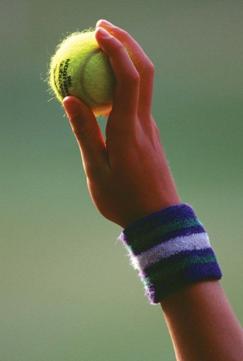
Tuy nhiên, khi quần vợt sân cỏ lan rộng khắp thế giới, cách chơi lại ít nhất quán từ câu lạc bộ này sang câu lạc bộ khác. Các tuyển thủ hoang mang về luật chơi. Hình dạng và kích thước sân thay đổi từ nơi này sang nơi khác. Để giảm bớt sự hoang mang, một số câu lạc bộ Anh nổi bật, gồm Câu lạc bộ Croquet All England tại Wimbledon và Câu lạc bộ Cricket Marylebone, đã cùng nhau xây dựng một bộ luật chung.
As lawn tennis spread around the world, however, there was little consistency in how it was played from club to club. Players were confused over the rules of the game. The court shape and size varied from place to place. To reduce the confusion, several prominent English clubs, including the All England Croquet Club at Wimbledon and the Marylebone Cricket Club, got together to establish a common set of rules.
Một bức tranh minh họa mô tả những người đàn ông và phụ nữ nước Anh đang chơi quần vợt sân cỏ vào năm 1883. Sự phổ biến của môn thể thao lan rộng khắp nước Anh và các quốc gia châu Âu khác vào cuối những năm 1800.
An illustration depicts British men and women playing lawn tennis in 1883. The sport’s popularity spread throughout Great Britain and other European countries in the late 1800s.
Với bộ luật tiêu chuẩn mới, Câu lạc bộ Croquet All England đã thông báo giải Wimbledon đầu tiên hằng năm của mình vào năm 1877. Giải vô địch nước Anh được chơi trên một sân cỏ hình chữ nhật và sử dụng bộ luật tương tự như những luật dùng trong môn quần vợt hiện đại. Tại giải Wimbledon đầu tiên, nội dung duy nhất là đánh đơn nam. Hai mươi hai tuyển thủ đội mũ và đeo cà vạt đã tham gia, và Spencer Gore đã giành danh hiệu Wimbledon đầu tiên. Dù đã chiến thắng, Gore vẫn không ấn tượng với môn thể thao này, sau đó cho biết rằng ông thích cricket hơn quần vợt. Ông viết, “Bất kỳ ai thực sự chơi giỏi cricket, quần vợt [thật], hay thậm chí cả racquets, thì liệu có bao giờ nghiêm túc dành sự chú ý của mình cho quần vợt sân cỏ, ngoài việc cho thấy rằng mình là một tuyển thủ đầy hứa hẹn, là điều vô cùng đáng nghi ngờ; vì rất có thể sự đơn điệu của trò chơi sẽ làm anh ta chùn bước trước khi kịp trở nên xuất sắc ở môn này.”3 Năm 1884, Câu lạc bộ Croquet All England đã bổ sung nội dung đánh đơn nữ và đánh đôi nam vào giải Wimbledon hằng năm của mình.
Using the new standard rules, the All England Croquet Club announced its first annual Wimbledon tournament in 1877. The English championship was played on a rectangular lawn court and used a set of rules similar to those used in the modern tennis game. At the first Wimbledon tournament, the only event was the men’s singles. Twenty-two players wearing hats and ties participated, and Spencer Gore won the first Wimbledon title. Even though he won, Gore was not impressed with the sport, later saying that he preferred cricket to tennis. He wrote, “That anyone who has really played well at cricket, [real] tennis, or even rackets, will ever seriously give his attention to lawn tennis, beyond showing himself to be a promising player, is extremely doubtful; for in all probability the monotony of the game would choke him off before he had time to excel at it.”3 In 1884 the All England Croquet Club added ladies’ singles and men’s doubles events to its annual Wimbledon tournament.
Quần Vợt Đến Nước Mỹ Quần vợt đến Hoa Kỳ năm 1874, và nhanh chóng lan rộng khắp đất nước. Một trong những người đầu tiên mang quần vợt đến Hoa Kỳ là Mary Outerbridge. Trong kỳ nghỉ ở Bermuda vào mùa đông năm 1874, Outerbridge đã xem các sĩ quan quân đội người Anh chơi quần vợt sân cỏ.
Tennis Comes to America Tennis arrived in the United States in 1874, and it quickly spread across the country. One of the first people to bring tennis to the United States was Mary Outerbridge. While on vacation in Bermuda during the winter of 1874, Outerbridge watched British army officers playing lawn tennis.
Say mê trò chơi, cô đã sắp xếp để thiết bị cần thiết để chơi môn này được gửi về nhà cô ở New York. Khi đã về nhà, Outerbridge giới thiệu quần vợt sân cỏ với gia đình và bạn bè của mình. Cô cũng giúp lắp đặt sân quần vợt đầu tiên tại Câu lạc bộ Cricket & Bóng chày Staten Island. Với vai trò của mình trong việc giới thiệu quần vợt sân cỏ tại Hoa Kỳ, Outerbridge được biết đến với tên gọi “Người Mẹ của Quần vợt Mỹ.”
Fascinated by the game, she arranged for the equipment needed to play it to be sent to her home in New York. Once she returned home, Outerbridge introduced lawn tennis to her family and friends. She also helped set up the first tennis court at the Staten Island Cricket & Baseball Club. For her role in introducing lawn tennis in the United States, Outerbridge became known as the “Mother of American Tennis.”
Phụ nữ tranh tài tại một giải quần vợt vào những năm 1870 tại Câu lạc bộ Cricket & Bóng chày Staten Island, địa điểm của sân quần vợt đầu tiên tại Hoa Kỳ.
Women compete in a tennis tournament in the 1870s at the Staten Island Cricket & Baseball Club, the site of the first tennis court in the United States.
“Người Cha của Quần vợt Mỹ” là James Dwight. Ông đã tổ chức một trong những giải đấu đầu tiên của đất nước vào năm 1876 và sau đó phục vụ nhiều năm với tư cách chủ tịch của tổ chức ngày nay được biết đến là Hiệp hội Quần vợt Hoa Kỳ (USTA). Bản thân là một tay vợt từng vô địch, Dwight đóng vai trò quan trọng trong việc thiết lập quần vợt Mỹ như một môn thể thao cạnh tranh.
The “Father of American Tennis” is James Dwight. He organized one of the country’s first tournaments in 1876 and later served for many years as the president of the organization that is known today as the United States Tennis Association (USTA). A championship tennis player himself, Dwight was instrumental in establishing American tennis as a competitive sport.
Khi quần vợt sân cỏ ngày càng phổ biến tại Hoa Kỳ, các tranh cãi về cách chơi đúng đắn cũng gia tăng. Trang thiết bị, luật chơi và cách tính điểm không theo tiêu chuẩn gây ra sự hoang mang và bất hòa giữa các tuyển thủ và câu lạc bộ. Vào tháng 5 năm 1881, đại diện của một số câu lạc bộ quần vợt nổi bật đã họp tại Thành phố New York để thảo luận về vấn đề. Họ quyết định thành lập Hiệp hội Quần vợt Sân Cỏ Quốc gia Hoa Kỳ (USNLTA), một tổ chức quần vợt quốc gia sẽ tiêu chuẩn hóa luật chơi và phát triển môn thể thao. Đến năm 1882, USNLTA đã ban hành những luật rất giống với những luật được dùng ngày nay.
As lawn tennis grew more popular in the United States, controversies about the correct way to play grew. Nonstandard equipment, rules, and scoring caused confusion and arguments among players and clubs. In May 1881 representatives of several prominent tennis clubs met in New York City to discuss the problem. They decided to form the U.S. National Lawn Tennis Association (USNLTA), a national tennis organization that would standardize the rules of the game and develop the sport. By 1882 the USNLTA had set forth rules that were very similar to those used today.
Theo các luật tiêu chuẩn, cách tính điểm, chiều cao lưới và kích thước sân đã được , g, g , nhất quán từ câu lạc bộ này sang câu lạc bộ khác. Năm 1975, USNLTA đổi tên thành Hiệp hội Quần vợt Hoa Kỳ (USTA).
Under the standard rules, scoring, net height, and court size were consistent , g, g , from club to club. In 1975 the USNLTA became known as the United States Tennis Association (USTA).
Vào tháng 8 năm 1881, USNLTA đã tài trợ giải quần vợt quốc gia đầu tiên tại Hoa Kỳ. Giải Vô địch Đánh Đơn Quốc gia Mỹ dành cho nam được tổ chức tại Newport Casino ở Newport, bang Rhode Island, và thu hút hai mươi sáu tuyển thủ. Sinh viên Đại học Harvard Richard Sears đã giành danh hiệu đầu tiên. Sáu năm sau, năm 1887, giải quần vợt nữ đầu tiên, Giải Vô địch Đánh Đơn Quốc gia Nữ Mỹ, được tổ chức tại Câu lạc bộ Cricket Philadelphia ở Philadelphia, Pennsylvania và được trao cho Ellen Hansell. Ngày nay, hai giải đấu này được biết đến là U.S.
In August 1881 the USNLTA sponsored the first national tennis championship in the United States. The U.S. National Singles Championship for men was held at the Newport Casino in Newport, Rhode Island, and attracted twenty-six players. Harvard University student Richard Sears won the first title. Six years later, in 1887, the first women’s tennis championship, the U.S. Women’s National Singles Championship, was held at the Philadelphia Cricket Club in Philadelphia, Pennsylvania and was won by Ellen Hansell. Today, these two championships are known as the U.S.
Open.
Open.
Thuở sơ khai của quần vợt, các tuyển thủ giao bóng bằng cú đánh từ dưới lên. Khi lưới thấp hơn trở thành tiêu chuẩn, các cú giao bóng cũng thay đổi. Lưới thấp hơn cho phép những cú đánh mạnh hơn, bật thấp hơn, khó trả lại hơn đối với đối thủ. Kết quả là, cú giao bóng từ trên xuống trở nên phổ biến. Tại Hoa Kỳ, các tuyển thủ giao bóng bằng một động tác ném từ trên cao vay mượn từ bóng chày, và các tuyển thủ Mỹ trở thành những người giao bóng xuất sắc nhất trong lịch sử quần vợt thuở đầu. “Các tuyển thủ Anh thời kỳ đầu bị hạn chế bởi việc thiếu kinh nghiệm ném bóng khi lớn lên. Người Mỹ trở thành những người giao bóng thống trị gần như ngay lập tức, chủ yếu là nhờ bóng chày,”4 ông John Faribault, giảng viên về thành tích con người tại Đại học Baylor, người đã tiến hành nhiều nghiên cứu về cú giao bóng trong quần vợt, cho biết.
In the early days of tennis, players served the ball underhand. As a lower net became standard, serves changed. The lower net allowed for harder, flatter shots that were more difficult for an opponent to return. As a result, overhand serves became common. In the United States players served using an overhand throwing motion borrowed from baseball, and American players became some of the best servers in early tennis history. “The British players in the early years were hampered by a lack of throwing balls as they grew up. Americans became the dominant servers almost immediately, mainly because of baseball,”4 says John Faribault, a lecturer in human performance at Baylor University who has conducted many studies on the tennis serve.
Một Trò Chơi Đầy Cạnh Tranh Suzanne Lenglen của Pháp tranh tài tại nội dung quần vợt nữ tại Thế vận hội Olympic ở Antwerp, Bỉ, năm 1920. Quần vợt là môn thể thao Olympic từ năm 1896 đến 1924, và được đưa trở lại vào năm 1988.
A Competitive Game Suzanne Lenglen of France competes in the women’s tennis event at the Olympic Games in Antwerp, Belgium, in 1920. Tennis was an Olympic sport from 1896 to 1924, and it was reintroduced in 1988.
Ban đầu, mọi người chơi quần vợt như một hoạt động xã hội. Chẳng bao lâu sau, quần vợt sân cỏ tiến hóa thành một trò chơi đầy cạnh tranh. Các nhà tổ chức lập ra các giải đấu dành cho những tuyển thủ giỏi nhất. Khi sự phổ biến của quần vợt cạnh tranh gia tăng, các giải đấu thu hút nhiều tuyển thủ và khán giả hơn. Đến đầu những năm 1900, trò chơi cạnh tranh đã lan rộng ra quốc tế. Những tuyển thủ giỏi nhất đi khắp thế giới đến các giải đấu ở các quốc gia khác. Năm 1913, Liên đoàn Quần vợt Sân Cỏ Quốc tế, tổ chức sau này trở thành Liên đoàn Quần vợt Quốc tế (ITF), được thành lập với tư cách cơ quan quản lý quần vợt thế giới.
At first, people played tennis as a social activity. Before long, lawn tennis evolved into a competitive game. Organizers set up tournaments for the best players. As competitive tennis’s popularity grew, tournaments attracted more players and spectators. By the early 1900s, the competitive game had spread internationally. The best players traveled around the world to tournaments in other countries. In 1913 the International Lawn Tennis Federation, which would later become the International Tennis Federation (ITF), was formed as a world governing body for tennis.
Năm 1900, cuộc thi đồng đội nam quốc tế đầu tiên, Giải Thách đấu Quần vợt Sân Cỏ Quốc tế, được tổ chức. Một thành viên của đội quần vợt Đại học Harvard, Dwight Davis, đã thiết kế thể thức giải đấu và trao tặng một chiếc cúp để trao cho người chiến thắng. Sự kiện, được tổ chức tại Boston, Massachusetts, đã đối đầu các tuyển thủ quần vợt Mỹ với các tuyển thủ Anh. Đội Mỹ giành chiến thắng trong cuộc thi đầu tiên đó. Ngày nay, giải đấu, nay có tên là Davis Cup, là cuộc thi quần vợt quốc tế thường niên lớn nhất thế giới với sự tham gia của các tuyển thủ từ hơn một trăm quốc gia. Năm 1923, Hazel Hotchkiss Wightman đã khởi xướng một cuộc thi tương tự cho nữ giới có tên Wightman Cup. Đội Mỹ đã đánh bại các tuyển thủ đến từ Anh trong g p p y cuộc thi đầu tiên. Wightman Cup được tổ chức hằng năm đến năm 1989, khi ban tổ chức thông báo rằng giải sẽ bị đình chỉ vô thời hạn do sự quan tâm thấp.
In 1900 the first international men’s team competition, the International Lawn Tennis Challenge was held. A member of the Harvard University tennis team, Dwight Davis, designed the tournament format and donated a trophy to be given to the winners. The event, held in Boston Massachusetts, pitted American tennis players against British players. The U.S. team won that first competition. Today the tournament, now called the Davis Cup, is the world’s largest annual international tennis competition with players from more than one hundred countries participating. In 1923 Hazel Hotchkiss Wightman launched a similar competition for women called the Wightman Cup. The American team defeated players from Great Britain in g p p y the first competition. The Wightman Cup was held annually until 1989, when organizers announced that it would be suspended indefinitely due to low interest.
Ngày nay, Wimbledon; U.S. Open; French Open, lần đầu tổ chức năm 1891; và Australian Open, lần đầu tổ chức năm 1905, được gọi là các Slam và được coi là những giải đấu danh giá nhất trong quần vợt dành cho nam và nữ.
Today Wimbledon; the U.S. Open; the French Open, first held in 1891; and the Australian Open, first held in 1905 are known as the Slams and are considered the most prestigious tournaments in tennis for men and women.
Quần vợt cũng được bổ sung làm nội dung tại Thế vận hội Olympic năm 1896 nhưng bị loại bỏ sau kỳ Thế vận hội 1924. Sau vài thập kỷ mà Ủy ban Olympic Quốc tế và ITF bất đồng về việc có nên cho phép các tuyển thủ chuyên nghiệp thi đấu hay không, quần vợt được phục hồi tại Thế vận hội vào năm 1988.
Tennis was also added as an event in the Olympic Games in 1896 but was removed after the 1924 games. After several decades in which the International Olympic Committee and the ITF disagreed about whether professional players should be allowed to compete, tennis was restored to the Olympics in 1988.
Thời Đại Vàng Của Quần Vợt Vào những năm 1920, sự phổ biến của quần vợt tăng lên mạnh mẽ. Các tuyển thủ từ nhiều quốc gia đã tham gia các giải đấu khắp thế giới. Một số người trở thành nhân vật nổi tiếng, được ngưỡng mộ vì kỹ năng thể thao và phong cách của họ. Nhiều tuyển thủ từ thời kỳ này trở thành những tay vợt vĩ đại nhất mọi thời đại của môn này.
The Golden Age of Tennis In the 1920s the popularity of tennis increased tremendously. Players from many countries took part in tournaments around the world. Some became celebrity figures, admired for their athletic skills and style. Several players from this era became some of the sport’s all-time greats.
Bill Tilden là một trong những tay vợt nghiệp dư thống trị làng quần vợt thập niên 1920.
Bill Tilden was one of the dominant amateur tennis players in the 1920s.
Bốn trong số những tay vợt vĩ đại nhất mọi thời đại này, Henri Cochet, Jean Borotra, Jacques Brugnon và René Lacoste của Pháp, trở nên được biết đến với tên gọi “Bốn Chàng Kiện Sĩ.” Giữa họ, họ đã giành hai mươi danh hiệu Grand Slam và hai mươi ba danh hiệu đánh đôi Grand Slam. Bốn Chàng Kiện Sĩ cũng đã giành sáu chức vô địch Davis Cup liên tiếp cho nước Pháp từ năm 1927 đến 1932.
Four of these all-time great players, Henri Cochet, Jean Borotra, Jacques Brugnon, and René Lacoste of France, became known as the “Four Musketeers.” Between them, they won twenty Grand Slam titles and twenty-three Grand Slam doubles titles. The Four Musketeers also won six straight Davis Cup tournaments for France from 1927 through 1932.
Bill Tilden người Mỹ đã giành tám giải Grand Slam từ năm 1920 đến 1925, trong đó có sáu chức vô địch Mỹ liên tiếp. Tilden cũng giành thêm hai chức vô địch nữa, tại Mỹ và Pháp, vào các năm 1929 và 1930, trước khi chuyên nghiệp hóa. Ông là một tuyển thủ quan trọng trong đội Davis Cup của Mỹ và giúp các tuyển thủ Mỹ duy trì thành tích bất bại trong suốt phần lớn thập niên 1920.
American Bill Tilden won eight Grand Slam tournaments between 1920 and 1925, including six consecutive U.S. championships. Tilden also won two more championships, the U.S. and French, in 1929 and 1930, before turning professional. He was an instrumental player on the U.S. Davis Cup team and helped the Americans remain undefeated for most of the 1920s.
N Bốn Giải Đấu Slam Của Quần Vợt gày nay, hệ thống thi đấu quần vợt bao gồm bốn giải đấu được gọi là các Slam hay các Major. Đây là những giải đấu quần vợt quan trọng nhất trong năm. Chúng mang lại nhiều điểm nhất cho bảng xếp hạng thế giới của tay vợt, đồng thời có tiền thưởng cao nhất. Mỗi giải đấu được tổ chức tại một quốc gia khác nhau, trên ba loại sân khác nhau.
T The Slams of Tennis oday’s tennis tour includes four tournaments called the Slams or the Majors. These tournaments are the most important annual tennis competitions. They offer the most points toward a player’s world ranking and also the highest prize money. Each tournament is played in a different country, on three different types of court.
Bốn giải đấu đó là:
The four tournaments are:
- Australian Open, diễn ra vào tháng 1 trên sân cứng tại Australia.The Australian Open, played in January on a hard court in Australia.
- French Open, diễn ra vào tháng 5 hoặc tháng 6 trên sân đất sét tại Pháp.The French Open, played in May or June on a clay court in France.
- Wimbledon, diễn ra vào tháng 6 hoặc tháng 7 trên sân cỏ tại Anh.Wimbledon, played in June or July on a grass court in England.
- U.S. Open, diễn ra vào tháng 8 hoặc tháng 9 trên sân cứng tại Hoa Kỳ. Giành cả bốn giải slam trong cùng một năm dương lịch được gọi là Grand Slam. Nếu một tay vợt giành cả bốn giải slam, nhưng không phải trong cùng một năm, thành tích đó được gọi là career Grand Slam. Đến cuối những năm 1920, các giải vô địch quốc gia và sự kiện lớn của quần vợt chỉ mở cửa cho các tay vợt nghiệp dư. Năm 1926, tour quần vợt chuyên nghiệp đầu tiên được tổ chức với một số tuyển thủ Mỹ và Pháp. Với sự thành lập của một tour chuyên nghiệp, hàng loạt tay vợt nghiệp dư bắt đầu chuyên nghiệp hóa. Với tư cách tuyển thủ chuyên nghiệp, họ được trả tiền cho các trận đấu và có thể kiếm sống bằng quần vợt. Tuy nhiên, chuyên nghiệp hóa cũng đồng nghĩa với việc từ bỏ cơ hội thi đấu tại các giải lớn. Khi một tay vợt tham gia tour chuyên nghiệp, anh ta hoặc cô ấy không còn có thể thi đấu tại các giải Grand Slam tức là những giải chỉ dành cho tay vợt nghiệp dư. Kỷ Nguyên Mở Sau Chiến tranh Thế giới thứ Hai, truyền hình đã đưa quần vợt đến với nhiều người hơn. Các đài truyền hình phát sóng các giải đấu quy tụ những tay vợt hàng đầu trên sóng quốc tế, mang đến môn quần vợt đỉnh cao đầy kịch tính cho người dân bình thường ngay trong không gian riêng tư của chính họ. Xu hướng tuyển thủ chuyên nghiệp hóa cũng tiếp diễn. Giữa giữa những năm 1920 và 1960, nhiều tay vợt giỏi nhất thế giới đã từ bỏ tư cách nghiệp dư và tham gia tour chuyên nghiệp. Họ thi đấu các trận giao hữu cùng nhiều tuyển thủ chuyên nghiệp khác, kiếm tiền và kiếm sống bằng quần vợt. Tuy nhiên, tất cả các giải đấu lớn, gồm bốn giải Grand Slam và Davis Cup, vẫn đóng cửa với tuyển thủ chuyên nghiệp. Người hâm mộ môn thể thao này ngày càng bức xúc vì những tay vợt giỏi nhất thế giới bị loại khỏi việc so tài với nhau tại những giải đấu danh giá nhất. Hàng nghìn người hâm mộ quần vợt theo dõi trận chung kết đánh đơn nữ tại French Open trên sân Roland Garros ở Paris năm 1952. French Open, ba giải Grand Slam còn lại, cùng Davis Cup, đều đóng cửa với tuyển thủ chuyên nghiệp cho đến năm 1968. Cuối cùng, năm 1968, áp lực từ người hâm mộ và nhà tài trợ đã khiến Hiệp hội Quần vợt Sân Cỏ (LTA) ở Anh xóa bỏ sự khác biệt giữa tuyển thủ chuyên nghiệp và nghiệp dư. Các giải đấu và hiệp hội lớn khác sớm noi theo LTA. Kết quả là, các tuyển thủ chuyên nghiệp có thể thi đấu tại tất cả các giải đấu, gồm bốn giải Grand Slam. “Đó là một khoảnh khắc quan trọng, đó là thế giới mới đầy can đảm của quần vợt. Người ta nói về tất cả những khoảnh khắc ý nghĩa trong lịch sử quần vợt, nhưng với tôi, đó là khoảnh khắc lớn nhất,”5 Charlie Pasarell, một tay vợt sau này trở thành giám đốc giải đấu có ảnh hưởng và thành viên ban lãnh đạo của tour Hiệp hội Quần vợt Chuyên nghiệp (ATP), chia sẻ. Việc mở cửa các giải đấu cho tất cả tuyển thủ đánh dấu sự khởi đầu của kỷ nguyên mở của quần vợt. Tất cả tuyển thủ có thể thi đấu mà không phải lựa chọn giữa tiền bạc và danh hiệu. Nhiều người tin rằng quần vợt mở là nhân tố lớn nhất dẫn đến nền công nghiệp quần vợt trị giá hàng triệu đô la ngày nay. Trong kỷ nguyên mở, các tuyển thủ chuyên nghiệp đã thành lập các hiệp hội riêng của mình. Hiệp hội Quần vợt Chuyên nghiệp (ATP) được thành lập cho nam vào năm 1973, còn Hiệp hội Quần vợt Nữ (WTA) được thành lập năm 1974. Ngày nay, mọi giải đấu cá nhân lớn do ATP và WTA quản lý, ngoại trừ bốn giải Grand Slam do ITF quản lý. Quần Vợt Ngày Nay Kể từ khi kỷ nguyên mở bắt đầu, sự tăng trưởng đáng kể về tiền thưởng, tài trợ và doanh thu truyền hình đã cho phép những tay vợt hàng đầu trở thành một trong những vận động viên giàu có nhất thế giới. Với một tay vợt vô địch một giải Grand Slam, tiền thưởng là rất lớn. Chẳng hạn, ở nội dung đánh đơn tại U.S. Open 2011, mỗi nhà vô địch mang về 1,8 triệu đô la—một con số khổng lồ. Theo tạp chí Forbes, tay vợt người Thụy Sĩ Roger Federer là người kiếm được nhiều tiền nhất trong làng quần vợt thế giới. Từ tháng 7 năm 2011 đến tháng 7 năm 2012, anh ấy kiếm được 54,3 triệu đô la. Thu nhập của anh đến từ nhiều nguồn, gồm tiền thưởng giải đấu, hợp đồng quảng cáo, các trận đấu biểu diễn và phí xuất hiện. Không Đơn Giản Như Vẻ Ngoài Từ thuở sơ khai với jeu de paume, quần vợt đã tiến hóa thành môn thể thao đòi hỏi kỹ năng, sự chính xác, sự nhanh nhẹn và sự bền bỉ. “Quần vợt là một trò chơi cực kỳ khó vì có quá nhiều điều phức tạp trong đó. . . . Nếu bạn không sẵn sàng về cả cơ thể lẫn tinh thần thì thật khó để mong đợi điều tốt nhất từ chính mình,”6 cựu tay vợt ATP người Úc Scott Draper cho biết. Tuy nhiên, dù phức tạp, quần vợt vẫn được hàng triệu người trên khắp thế giới yêu thích. Giống như nhiều người chơi giải trí, nhà báo ESPN Chris McKendry bắt đầu chơi quần vợt từ khi còn nhỏ và vẫn tiếp tục tận hưởng môn thể thao này khi đã trưởng thành. Trong một bài báo cho số báo năm 2012 của Tennis View Magazine, cô viết: “Bố mẹ tôi đã giới thiệu quần vợt với tôi khi tôi còn nhỏ. Khi lớn lên, tôi chơi quần vợt vào mùa hè, rồi đến lớp năm, tôi được giới thiệu với USTA Junior League. . . . Quần vợt đã lên tiếng với vận động viên trong tôi. Tôi đã yêu môn thể thao này. Ngày nay, tôi vẫn yêu quần vợt. Nghe có vẻ sáo rỗng, nhưng đây thực sự là một môn thể thao bạn có thể chơi được cả đời.”7 H QThe U.S. Open, played in August or September on a hard court in the United States. Winning all four slams in the same calendar year is called a Grand Slam. If a player wins all four slams, but not in the same year, the achievement is called a career Grand Slam. Through the late 1920s, tennis national championships and major events were only open to amateur players. In 1926 the first professional tennis tour was organized with several American and French players. With the establishment of a professional tour, a string of amateur players began turning professional. As professionals, players were paid for matches and could make a living at tennis. Yet turning professional also meant giving up the opportunity to compete in major tournaments. Once a player joined the professional tour, he or she could no longer play in the Grand Slam tournaments, which were reserved for amateur players only. The Open Era After World War II, television brought tennis to more people. Stations broadcast tournaments featuring the top players on international airwaves, bringing exciting world-class tennis to average people in the comfort of their own home. The trend of players turning professional also continued. Between the mid-1920s and the 1960s, many of the best tennis players from around the world dropped their amateur status and joined the professional tour. They toured with other professional players, earned money, and made a living playing tennis. Yet all of the major tournaments, including the four Grand Slams and the Davis Cup, remained closed to professionals. Fans of the sport grew increasingly frustrated that the world’s best players were excluded from competing against each other in the most prestigious tournaments. Thousands of tennis fans watch the women’s singles final at the French Open at Roland Garros in Paris in 1952. The French Open as well as the other three Grand Slam events, plus the Davis Cup, were closed to professionals until 1968. Finally in 1968 the pressure from fans and sponsors led the Lawn Tennis Association (LTA) in Britain to dissolve the difference between professional and amateur tennis players. The other major tournaments and associations soon followed the LTA’s lead. As a result, tennis professionals were able to compete in all tournaments, including the four Grand Slam events. “It was momentous, it was the brave new world of tennis. People talk about all the significant moments in tennis history but to me, that was the biggest one,”5 said Charlie Pasarell, a tennis player who would later become an influential tournament director and board member for the Association of Tennis Professionals tour. The opening of tournaments to all players marked the beginning of the open era of tennis. All players could compete without having to choose between money and titles. Many believe that open tennis is the single biggest factor that led to today’s multimillion-dollar tennis industry. In the open era professional players formed their own associations. The Association of Tennis Professionals (ATP) formed for men in 1973, while the Women’s Tennis Association (WTA) formed in 1974. Today, every major individual tournament is controlled by the ATP and WTA, except the four Grand Slam events that are controlled by the ITF. Tennis Today Since the open era began, significant increases in prize money, sponsorship, and television revenues have allowed the top tennis players to become some of the richest athletes in the world. For a player winning a Grand Slam tournament, the prize money is significant. For example, in the singles champions at the 2011 U.S. Open each took home a staggering $1.8 million. According to Forbes magazine, Swiss player Roger Federer is the highest-paid tennis player in the world. Between July 2011 and July 2012, he earned $54.3 million. His earnings came from several sources, including tournament prize money, endorsements, exhibitions, and appearance fees. Not as Simple as It Looks From its early days as jeu de paume, tennis has evolved into a sport that requires skill, accuracy, agility, and endurance. “Tennis is an extraordinarily hard game because there is so much complexity to it. . . . If you’re not ready in body and mind then it’s hard to expect the best from yourself,”6 says former Australian ATP tennis player Scott Draper. Yet despite its complexity, tennis is popular with millions of people around the world. Like many recreational players, ESPN journalist Chris McKendry started playing tennis as a child and continues to enjoy the game as an adult. In an article for a 2012 issue of Tennis View Magazine, she writes, “My parents first introduced tennis to me as a child. Growing up, I played tennis during the summer, and then in fifth grade, I was introduced to USTA Junior League. . . . Tennis spoke to the athlete in me. I loved the sport. Today, I still love tennis. It sounds cliché, but it really is one sport you can play your whole life.”7 T T
CHƯƠNG 2
Huấn Luyện và Thể Lực uần vợt đặt ra những đòi hỏi thể lực phức tạp đối với cơ thể người chơi. Với môn thể thao ngày nay, người chơi phải có sự dẻo dai, sức mạnh, sức bật, sự nhanh nhẹn và tốc độ để thực hiện những cú đánh và cú giao bóng chiến thắng. Trong một trận đấu, người chơi phải di chuyển nhanh theo mọi hướng, thay đổi hướng đi, dừng rồi khởi động đột ngột. Họ cũng cần sức bền để thi đấu trong những trận có thể kéo dài hàng giờ.
Training and Conditioning ennis places complex physical demands on a player’s body. For today’s game, players must possess flexibility, strength, power, agility, and speed to hit winning shots and serves. During a match, tennis players have to move quickly in all directions, change directions, and stop and start abruptly. They also need endurance to perform in matches that can last for hours.
Các tay vợt tham gia các chương trình huấn luyện và thể lực được thiết kế riêng để cải thiện lối chơi của họ. Nếu người chơi bỏ qua một phần chương trình tập luyện, họ sẽ khó có thể thi đấu tốt nhất. Ngoài ra, những vận động viên thể lực kém có nhiều khả năng tự làm mình bị thương trên sân.
Tennis players participate in training and conditioning programs specifically designed to improve their tennis game. If players skip part of their training program, they are less likely to perform their best. In addition, poorly conditioned athletes are more likely to injure themselves on the court.
Sự dẻo dai Người chơi đánh bóng từ nhiều tư thế khác nhau. Họ duỗi tay để với lấy cú bóng ra xa hoặc vung người về phía trước để thực hiện cú đánh gần lưới. Để di chuyển theo những cách này và nhiều cách khác, các cơ của người chơi phải dẻo dai. Sự dẻo dai là phẩm chất của việc dễ dàng uốn cong hoặc gập lại. Trong quần vợt và các môn thể thao khác, sự dẻo dai đề cập đến biên độ chuyển động (ROM) xung quanh một khớp. Nếu các cơ, gân và dây chằng giữ các xương lại với nhau bên trong một khớp quá căng, chúng sẽ hạn chế chuyển động của khớp. Một khớp bị hạn chế sẽ làm giảm tốc độ và sự nhanh nhẹn của người chơi. Sự dẻo dai tốt cho phép người chơi đến được bóng nhanh hơn và hiệu quả hơn.
Flexibility Tennis players hit the ball from a variety of positions. They extend their arms to reach a wide ball or lunge forward to make a shot close to the net. To move in these and many other ways, a tennis player’s muscles must be flexible. Flexibility is the quality of being easily flexed or bent. In tennis and other sports, flexibility refers to the range of movement (ROM) around a joint. If the muscles, tendons, and ligaments that hold the bones together inside a joint are too tight, they will restrict the joint’s movement. A restricted joint will decrease a player’s speed and agility. Good flexibility allows a tennis player to get to balls more quickly and efficiently.
Sự dẻo dai cũng giúp người chơi đánh bóng với sự cân bằng và khả năng kiểm soát và có thể ngăn ngừa chấn thương.
Flexibility also helps players hit balls with balance and control and can prevent injury.
Chấn thương trong quần vợt Chấn thương trong quần vợt rơi vào hai loại: chấn thương do quá tải và chấn thương cấp tính. Chấn thương do quá tải là phổ biến và xảy ra theo thời gian. Người chơi liên tục tạo áp lực lên các cơ, khớp và mô mềm của mình qua những chuyển động lặp đi lặp lại khi chơi quần vợt. Cơ thể phải chịu những vết rách nhỏ hoặc sự phân hủy trong cấu trúc của nó nhưng không có thời gian để hồi phục đúng cách. Ví dụ, một tay vợt có thể bị thương vai vì thực hiện cú giao bóng hàng nghìn lần. Đầu gối của người chơi phải chịu áp lực từ những cú xoay người, vặn mình và các pha dừng và khởi động đột ngột trên sân. Chấn thương do quá tải có thể bắt đầu từ một cơn đau nhỏ. Nếu không được điều trị kịp thời, chúng có thể trở thành những chấn thương nghiêm trọng hơn. Những chấn thương do quá tải phổ biến nhất trong quần vợt là viêm gân cổ chao, viêm khuỷu tay (tennis elbow), bong gân cổ tay, đau lưng và đau đầu gối.
Tennis Injuries ennis injuries fall into two categories: overuse injuries and acute injuries. Overuse injuries are common and occur over time. Tennis players constantly place stress on their muscles, joints, and soft tissues through the repeated motions of tennis play. The body experiences a small tear or breakdown in its structures but does not have time to heal properly. For example, a tennis player may injure a shoulder from serving thousands of times. Players’ knees endure stress from repeated pivots, twists, and violent stops and starts on the court. Overuse injuries may begin as a small ache. If not treated promptly, they can become more severe injuries. The most common overuse injuries in tennis are rotator cuff tendinitis, tennis elbow, wrist strains, back pain, and knee pain.
Chấn thương cấp tính xảy ra khi một lực hoặc va chạm đột ngột làm tổn thương cơ, khớp, xương hoặc mô mềm. Thay vì tích lũy theo thời gian, chấn thương cấp tính xảy ra đột ngột. Những chấn thương cấp tính phổ biến ở người chơi quần vợt là bong gân và rách sụn hoặc dây chằng ở đầu gối cùng các cơn căng cơ.
Acute injuries occur when a sudden force or impact damages a muscle, joint, bone, or soft tissue. Instead of building up over time, acute injuries happen suddenly. Common acute injuries in tennis players are strains and torn cartilage or ligaments in the knee and muscle sprains.
Chấn thương đầu gối là phổ biến ở những người chơi quần vợt.
Knee injuries are common among tennis players.
Sự dẻo dai khác nhau giữa người này với người khác và giữa các khớp khác nhau ở cùng một người. Nhiều yếu tố ảnh hưởng đến sự dẻo dai. Khả năng giãn căng của một cơ là một yếu tố chính trong sự dẻo dai của một khớp. Cơ căng hạn chế sự dẻo dai của khớp, trong khi cơ được thả lỏng cho phép biên độ chuyển động lớn hơn.
Flexibility differs from person to person and among different joints in a single person. Several factors affect flexibility. A muscle’s ability to stretch is a major factor in a joint’s flexibility. Tight muscles limit a joint’s flexibility, while loosened muscles allow a greater range of motion.
Cơ giãn nhiều hơn khi ấm và được cung cấp lưu lượng máu tăng lên, điều xảy ra trong các bài tập khởi động. Hoạt động đều đặn và một lối sống năng động cũng có thể cải thiện sự dẻo dai, vì các cơ không được sử dụng sẽ trở nên cứng và kém dẻo dai hơn. Chấn thương ở một khớp hoặc các cơ xung quanh, gân và dây chằng có thể tạm thời làm giảm sự dẻo dai khi đau, mô sẹo và sưng làm hạn chế biên độ chuyển động của khớp. Sau một chấn thương, các bài tập giãn cơ thường có thể phục hồi toàn bộ biên độ chuyển động và sự dẻo dai của khớp.
Muscles stretch more when warm and supplied with an increased blood flow, which happens during warm-up exercises. Regular activity and an active lifestyle can also improve flexibility, as muscles that are not used become stiff and less flexible. Injuries to a joint or the surrounding muscles, tendons, and ligaments may temporarily decrease flexibility as pain, scar tissue, and swelling limit the joint’s range of motion. After an injury, stretching exercises can usually restore a joint’s full range of motion and flexibility.
Cấu trúc khớp cũng ảnh hưởng đến sự dẻo dai và quyết định khớp có thể di chuyển xa đến đâu và theo hướng nào. Ví dụ, cổ tay có thể cử động lên và xuống, sang ngang, hoặc theo vòng tròn. Ngược lại, đầu gối chỉ có thể cử động lên và xuống. Ngoài ra, người lớn tuổi thường kém dẻo dai hơn người trẻ, và nam giới nhìn chung kém dẻo dai hơn phụ nữ.
Joint structure also affects flexibility and determines how far and in which direction a joint can move. For example, a wrist can move up and down, side to side, or in circles. In contrast, a knee can only move up and down. In addition, older people are usually less flexible than younger people, and men are generally less flexible than women.
Giãn cơ Tất cả vận động viên đều dùng giãn cơ để cải thiện sự dẻo dai. Người chơi quần vợt thường dùng giãn cơ tĩnh. Trong giãn cơ tĩnh, một cơ được giãn từ từ và nhẹ nhàng cho đến khi cảm thấy hơi khó chịu. Sau đó, tư thế giãn cơ được giữ trong mười lăm đến ba mươi giây. Giãn cơ tĩnh làm tăng hiệu quả biên độ chuyển động của các khớp và cải thiện sự dẻo dai của cơ. Liên đoàn Quần vợt Quốc tế (ITF) khuyến nghị người chơi thực hiện một bài giãn cơ tĩnh mỗi ngày hai lần, tốt nhất là sau khi tập luyện vào buổi tối.
Stretching All athletes use stretching to improve flexibility. Tennis players commonly use static stretching. In static stretching a muscle is slowly and gently stretched until it feels slightly uncomfortable. Then the stretched position is held for fifteen to thirty seconds. Static stretching effectively increases the range of motion of joints and improves muscle flexibility. The International Tennis Federation (ITF) recommends that players perform a static stretching routine twice a day, preferably after exercise and in the evening.
Tay vợt hàng đầu Maria Sharapova tập 3 đến 4 giờ trong phòng gym và 1,5 giờ trên sân quần vợt mỗi ngày.
Top tennis player Maria Sharapova trains 3 to 4 hours in the gym and 1.5 hours on the tennis court each day.
Mặc dù giãn cơ tĩnh có thể cải thiện sự dẻo dai, nhưng nên thực hiện sau khi thi đấu hơn là trước. Nghiên cứu đã chỉ ra rằng giãn cơ tĩnh trong vòng một giờ trước khi tập luyện có thể làm suy giảm tốc độ, sức bật và sức mạnh của vận động viên. Do đó, nhiều huấn luyện viên và người chơi thích một dạng giãn cơ khác gọi là giãn cơ động để khởi động trước khi chơi quần vợt.
Although static stretching can improve flexibility, it should be done after performance rather than before. Research has shown that static stretching within an hour before exercise can impair an athlete’s speed, power, and strength. As a result, many coaches and players prefer another type of stretching called dynamic stretching to warm up before playing tennis.
Giãn cơ động, hay giãn cơ kết hợp chuyển động, sử dụng chuyển động liên tục của các cơ để tăng dần tầm với, tốc độ chuyển động, hoặc cả hai.
Dynamic stretching, or stretching with movement, uses constant movement of muscles to gradually increase reach, speed of movement, or both.
Giãn cơ động không nảy hoặc giật cục; thay vào đó, nó sử dụng những chuyển động chậm, có kiểm soát Các ví dụ về động tác giãn cơ động dùng trong quần vợt là đá chân, vung vòng tay và xoay thân. Giãn cơ động làm tăng nhiệt độ cơ thể và cơ và lưu lượng máu ở cơ. Nó cũng chuẩn bị sẵn sàng cho các khớp cụ thể sẽ được dùng để chơi quần vợt. Nhìn chung, người chơi thực hiện các động tác giãn cơ động theo các hiệp tám đến mười hai nhịp.
Dynamic stretching is not bouncy or jerky; instead, it uses slow, controlled movements. Examples of dynamic stretches used in tennis are leg swings, arm circles, and torso twists. Dynamic stretching increases body and muscle temperature and muscle blood flow. It also readies specific joints that will be used to play tennis. Generally, tennis players perform dynamic stretches in sets of eight to twelve repetitions.
Giãn cơ động là một phần quan trọng của quy trình khởi động quần vợt, giúp chuẩn bị cơ thể người chơi cho những đòi hỏi của quần vợt. Nó giãn các cơ một cách chủ động và chuẩn bị chúng cho các lực và chuyển động sẽ được trải nghiệm khi chơi quần vợt. Giãn cơ động cũng củng cố những chuyển động cần thiết để chơi quần vợt.
Dynamic stretching is an important part of a tennis warm-up routine, helping to prepare a player’s body for the demands of tennis. It stretches muscles actively and prepares them for the forces and movements that will be experienced during tennis. Dynamic stretching also reinforces the movements that are needed to play tennis.
Một người chơi giữ tư thế giãn cơ tĩnh để cải thiện sự dẻo dai của cơ chân. Giãn cơ tĩnh hiệu quả nhất khi thực hiện sau buổi tập.
A tennis player holds a static stretch to improve the flexibility of his leg muscles. Static stretching is most effective when done after a workout.
Sự nhanh nhẹn và bước chân Người chơi quần vợt phải có khả năng di chuyển nhanh theo mọi hướng. Họ phải có khả năng đổi hướng thường xuyên, dừng và xuất phát, đồng thời duy trì sự cân bằng và đánh bóng với khả năng kiểm soát. Trong một trận quần vợt điển hình, người chơi có thể thực hiện hơn bốn lần đổi hướng trong mỗi điểm. Họ có thể lướt ngang, bứt tốc về phía trước, rồi lại bước nhanh về phía sau. Nếu người chơi không thể di chuyển hiệu quả để đến với bóng kịp lúc, thì cú đánh của họ hay đến đâu cũng không quan trọng.
Agility and Footwork Tennis players must be able to move quickly in all directions. They must also be able to change directions frequently, stopping and starting, while at the same time maintaining balance and hitting the ball with control. In a typical tennis match, a player may make more than four directional changes during each point. They may shuffle laterally, sprint forward, and then back step quickly. If a player cannot move effectively to reach the ball in time, it does not matter how good his or her shots are.
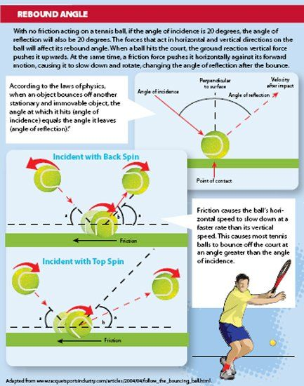
Shahar Peer thực hiện một bài tập để cải thiện bước chân và sự nhanh nhẹn trong một buổi tập khi chuẩn bị thi đấu tại Thế vận hội 2012.
Shahar Peer performs a drill to improve her footwork and agility during a workout as she prepares to compete in the 2012 Olympic Games.
Sự nhanh nhẹn cho phép người chơi di chuyển hiệu quả trên sân vào được vị trí để đánh bóng chính xác. Sự nhanh nhẹn được định nghĩa là khả năng thay đổi hướng cơ thể một cách trôi chảy, chính xác và sử dụng lượng năng lượng cơ tối thiểu. Trong quần vợt, người chơi dùng sự nhanh nhẹn và bước chân để trả bóng có thể rơi ở bất kỳ đâu trên sân, di chuyển với vô số sự biến thiên về xoáy và tốc độ. Sự nhanh nhẹn đòi hỏi người chơi phải có sức mạnh cơ và sức bật để giúp họ giảm tốc (chậm lại) nhanh chóng, đổi hướng, rồi lại tăng tốc (tăng tốc độ) nhanh chóng theo một hướng khác. Để phát triển sự nhanh nhẹn, nhiều tay vợt tập luyện với các bài tập chuyển động và nhanh nhẹn Các bài tập này tái hiện những chuyển động mà người chơi thực hiện trên sân khi chơi quần vợt. Một số bài tập tập trung vào chuyển động ngang, số khác tập trung vào chuyển động lùi về sau và tiến về trước.
Agility allows a tennis player to move efficiently on the court and to get into position to hit the ball accurately. Agility is defined as the ability to change the body’s direction smoothly, with accuracy and using a minimal amount of muscular energy. In tennis, players use agility and footwork to return balls that may land anywhere on the court, traveling with any number of variations in spin and speed. Agility requires players to have muscular strength and power to help them decelerate (slow down) rapidly, change direction, and then accelerate (increase speed) rapidly again in a different direction. To develop agility, many tennis players train with movement and agility drills. These drills replicate movements that the players make on the court while playing tennis. Some drills focus on lateral movement, while others focus on backward and forward movements.
Cơ thể người trưởng thành có 206 xương và hơn 600 cơ.
The adult body has 206 bones and over 600 muscles.
Tốc độ và sự nhanh nhạy Gần gũi với sự nhanh nhẹn, tốc độ và sự nhanh nhạy là điều sống còn đối với thành công trong quần vợt.
Speed and Quickness Closely related to agility, speed and quickness are vital to success in tennis.
Người chơi bứt tốc vượt qua sân để đến với bóng và trả lại một cú đánh. Trong quần vợt tốc độ là khoảng thời gian cần để di chuyển từ điểm này sang điểm khác trên sân.
Players sprint across the court to reach a ball and return a shot. In tennis speed is the time it takes to move from one point on the court to another.
Người chơi nhìn chung chạy vọt trong những quãng ngắn vượt qua sân. Do đó, hầu hết các bài tập tốc độ cho người chơi quần vợt tập trung vào tăng tốc và giảm tốc. Trong quần vợt, mức tăng tốc lớn nhất diễn ra trong tám đến mười bước đầu tiên mà người chơi thực hiện, trong khi người chơi giảm tốc từ chạy nhanh về đứng hẳn chỉ trong một hoặc hai bước chân dài. Các bài tập như plyometrics, một phương pháp tập sức mạnh đặt các cơ vào tư thế giãn sẵn trước khi thực hiện một cái co cơ mạnh, phát triển sức mạnh và sức bật bùng nổ và rất cần thiết để phát triển khả năng tăng tốc và giảm tốc nhanh chóng của người chơi. Tập bứt tốc cũng có thể giúp vận động viên đạt tốc độ tối đa nhanh chóng rồi dừng lại nhanh không kém.
Players generally run in short bursts across the court. Therefore, most speed training for tennis players focuses on acceleration and deceleration. In tennis the greatest acceleration occurs in the first eight to ten steps a player makes, while players decelerate from a run to a complete stop in only one or two strides. Exercises such as plyometrics, a method of power training that puts the muscles in a prestretch before executing a powerful contraction, develop strength and explosive power and are essential for developing a player’s ability to accelerate and decelerate quickly. Sprint training can also help an athlete accelerate to top speed quickly and then stop just as fast.
Sự nhanh nhạy trong quần vợt có liên quan đến tốc độ, nhưng không giống tốc độ.
Quickness in tennis is related to speed, but it is not the same as speed.
Các khía cạnh của sự nhanh nhạy trong quần vợt bao gồm người chơi có thể dừng nhanh như thế nào sau khi tăng tốc và họ đổi hướng đột ngột tốt ra sao trong khi vẫn giữ được cân bằng. Trong quần vợt, một phần giây có được từ bước đi đầu nhanh nhẹn hoặc thời gian phản ứng nhanh có thể là khác biệt giữa việc trả bóng thành công và bỏ lỡ cú đánh.
Aspects of quickness in tennis include how rapidly tennis players can stop after accelerating and how well they can suddenly change direction and still keep their balance. In tennis a split second gained by a quick first step or a quick reaction time may be the difference between successfully returning a shot or missing it.
Gael Monfils lao đi để thực hiện cú trả bóng trái tay trong một giải đấu năm 2008. Các yếu tố của sự nhanh nhạy giúp người chơi phản ứng, đổi hướng và duy trì cân bằng khi trả bóng.
Gael Monfils dashes to make a backhand return during a tournament in 2008. Elements of quickness help a tennis player react, change direction, and maintain balance when returning a shot.
Một khía cạnh khác của sự nhanh nhạy trong quần vợt là khả năng nhận ra tức thì và phản ứng với một cú đánh mà đối thủ đã thực hiện. Dạng sự nhanh nhạy này có thể được coi là thời gian phản ứng, hay khoảng thời gian cần để một tay vợt thực hiện chuyển động phù hợp. Thời gian phản ứng bao gồm cả thời gian cần để đọc tình huống và chọn phản ứng và thời gian cần để các cơ của người chơi co lại và cơ thể di chuyển.
Another aspect of quickness in tennis is being able to instantly recognize and react to a shot that an opponent has hit. This type of quickness can be thought of as response time, or the amount of time it takes for a tennis player to make the appropriate movement. Response time includes both the time needed to read the situation and choose a reaction and the time it takes for a player’s muscles to contract and the body to move.
Thời gian phản ứng trong quần vợt phụ thuộc nhiều vào khả năng dự đoán. Người chơi có thể dự đoán chính xác đối thủ sẽ làm gì hoặc cú đánh sẽ nảy như thế nào sẽ ở vị thế tốt hơn để chơi thành công so với người chơi không có ý niệm gì về điều sắp xảy ra. Do đó, nhiều tay vợt tập các bài tập cụ thể để cải thiện kỹ năng dự đoán và thời gian phản ứng. Nghiên cứu cho thấy các tay vợt chuyên nghiệp thường tập trung vào vợt và cẳng tay dưới của đối thủ trong trận đấu để dự đoán động thái tiếp theo của họ. Quan sát những vùng này cho phép người chơi dự đoán tốt hơn loại cú đánh và hướng của quả bóng.
Reaction time in tennis depends heavily on anticipation. A player who can accurately predict what their opponent will do or how a shot will bounce is in a better position to play successfully than a player who does not have any idea what is going to happen next. As a result, many tennis players work on specific drills to improve their anticipation skills and reaction time. Research shows that expert tennis players frequently focus on their opponent’s racket and lower arm during a match to predict their next move. Watching these areas allows a player to better anticipate the type of shot and direction of the ball.
Một chìa khóa khác để cải thiện thời gian phản ứng là hiểu các loại cú đánh có thể có mà đối thủ thực hiện dựa trên loại sân và vị trí của họ trên sân. Thu hẹp các khả năng giúp người chơi cải thiện thời gian phản ứng với một cú đánh. Càng ít lựa chọn, thời gian cần để chọn phản ứng càng ngắn. Biết xu hướng của đối thủ cũng có thể cải thiện thời gian phản ứng của người chơi. Việc trinh sát cơ bản bằng cách xem đối thủ thi đấu và nghiên cứu đối thủ phản ứng ra sao trong một số tình huống có thể mang lại lợi thế cho người chơi trong trận đấu. Cuối cùng, việc luyện tập bước chân và các quy mô chuyển động có thể cải thiện thời gian phản ứng của người chơi. Với sự luyện tập và lặp lại, chuyển động trở nên nhanh hơn và phản ứng trở nên tự động.
Another key to improving reaction time is understanding the possible types of shots that an opponent can hit based on the type of court and his or her position on the court. Narrowing down the possibilities helps a player improve reaction time to a shot. The fewer choices there are, the shorter time it takes to choose a response. Knowing the tendencies of an opponent can also improve a player’s reaction time. Basic scouting by watching an opponent play and studying how an opponent reacts in certain situations can give a player an advantage during a match. Finally, rehearsing footwork and movement patterns can improve a tennis player’s reaction time. With practice and repetition, movement becomes faster and the response becomes automatic.
Các bài tập chuyển động và thời gian phản ứng cải thiện sự nhanh nhạy của người chơi.
Drills for movement and reaction time improve a player’s quickness.
Ví dụ, một huấn luyện viên có thể giữ một quả bóng ra bên này hay bên kia để chỉ hướng người chơi nên di chuyển. Điều này cho phép người chơi mài phản ứng với bóng và luyện tập đọc các tín hiệu chuyển động cơ thể từ đối thủ.
For example, a coach can hold a tennis ball out to one side or the other to indicate which way a player should move. This allows the player to hone his or her reaction to the ball and practice picking up body movement cues from an opponent.
Hoạt động của cơ Khi vận động viên chơi quần vợt, các cơ trong khắp cơ thể họ làm việc cùng nhau để chạy vượt qua sân, thực hiện cú trái tay, hoặc đập mạnh cú giao bóng. Mỗi chuyển động trên sân đều hoạt động các cơ của cơ thể và khiến chúng giãn ra hoặc co lại.
Muscle Actions When an athlete plays tennis, muscles throughout his or her body work together to run across the court, hit a backhand shot, or smash a serve. Each movement on the court works the body’s muscles and causes them to lengthen or shorten.
Cơ cử động theo hai kiểu: co ngắn và giãn dài. Trong một động tác cơ co ngắn, các sợi cơ co lại và rút ngắn. Khi người chơi thực hiện cú thuận tay, các cơ ở phía trước vai và ngực co ngắn lại. Động tác ngược lại, động tác cơ giãn dài, xảy ra khi các sợi cơ giãn dài hoặc căng ra. Trong cú thuận tay đó, các cơ ở phía sau vai và lưng trên giãn dài trong một động tác cơ giãn dài.
Muscles move in concentric or eccentric actions. In a concentric muscle action, muscle fibers contract and shorten. When a player hits a forehand shot, the muscles in the front of the shoulder and chest shorten. The opposite action, an eccentric muscle action, occurs when the muscle fibers lengthen or stretch. During that same forehand shot, the muscles of the back of the shoulders and upper back lengthen in an eccentric muscle action.
Các động tác cơ giãn dài có tác dụng ổn định cơ thể và các khớp và bảo vệ cơ thể khỏi chấn thương.
Eccentric muscle actions act to stabilize the body and joints and protect the body from injury.
CÁC ĐỘNG TÁC CƠ CO NGẮN VÀ GIÃN DÀI
Động tác cơ co ngắn là những động tác trong đó cơ rút ngắn khi co cơ. Động tác cơ giãn dài là những động tác trong đó cơ dài ra khi co cơ. Trong trường hợp này, “co cơ” có nghĩa là căng cơ, không phải rút ngắn cơ. Việc lưu trữ và giải phóng năng lượng đàn hồi thông qua các động tác cơ giãn dài và cơ co ngắn tạo nên thành tích của vận động viên.
Concentric muscle actions are those in which the muscle shortens while contracting. Eccentric muscle actions are those in which the muscle elongates while contracting. In this case “contraction” refers to tensing the muscle, not shortening it. Storing and releasing elastic energy through eccentric and concentric muscle contractions powers an athlete’s performance.
C Sự co cơ giãn dài cũng lưu trữ năng lượng đàn hồi, giống như một sợi chun cao su lưu trữ năng lượng khi bị kéo căng. Khi cơ được giải phóng trong một sự co cơ ngắn, năng lượng đã lưu trữ được giải phóng và cho phép người chơi tạo ra lực cơ. Để minh họa cho ý này, hãy xem xét một người có thể nhảy cao bao nhiêu khi đứng yên. Nếu người đó ngồi xổm trước khi nhảy, thì các cơ chân giãn dài trong một sự co cơ giãn dài và lưu trữ năng lượng đàn hồi. Năng lượng đó được giải phóng trong sự co cơ ngắn của cú nhảy, cho phép người chơi nhảy cao hơn. Việc lưu trữ và giải phóng năng lượng đàn hồi thông qua các động tác cơ giãn dài và cơ co ngắn tạo nên thành tích của vận động viên.
M Eccentric muscle contractions also store elastic energy, like a rubber band stores energy when stretched. When the muscle is released in a concentric contraction, the stored energy is released and allows the player to produce muscular force. To illustrate this idea, consider how high a person can jump from a standing position. If the same person squats before jumping, then the leg muscles lengthen in an eccentric contraction and store elastic energy. That energy is released during the concentric contraction of the jump, allowing the player to jump higher. Storing and releasing elastic energy through eccentric and concentric muscle contractions powers an athlete’s performance.
Cơ bắp đằng sau chuyển động o bắp điều khiển mọi chuyển động trong cơ thể. Có hơn sáu trăm cơ trong cơ thể người. Một số hoạt động không chủ ý, như cơ tim, và hoạt động mà không cần suy nghĩ. Những cơ khác, như cơ xương, là tự chủ và hoạt động theo phản hồi với tín hiệu từ não. Cơ xương là những cơ được dùng khi đi bộ, nói chuyện và chơi quần vợt. Chúng gắn với xương bằng những dải chắc chắn gọi là gân.
The Muscle Behind the Movement uscles control all movement in the body. There are over six hundred muscles in the human body. Some function involuntary, like the heart muscle, and move without a person thinking about it. Other muscles, like the skeletal muscles, are voluntary and move in response to signals from the brain. Skeletal muscles are the muscles used when walking, talking, and playing tennis. They are attached to bones by tough bands called tendons.
Một cơ hoạt động bằng cách giãn ra và co lại. Cơ được tạo thành từ các tế bào dài, mỏng gọi là các sợi, được nhóm lại thành từng bó. Các nhóm sợi cơ làm việc cùng với một dây thần kinh khiến các sợi co lại hoặc thả lỏng trong chuyển động. Để di chuyển, não gửi một tín hiệu qua dây thần kinh đến nhóm cơ bảo cơ co lại. Khi một cơ co lại, gân và xương chuyển động theo nó. Mọi chuyển động của cơ thể đều do một sự co cơ gây ra.
A muscle works by expanding and contracting. Muscles are made of long, thin cells called fibers that are grouped together into bundles. Groups of muscle fibers work together with a nerve that makes the fibers contract or relax during movement. To move, the brain sends a signal through the nerve to the muscle group that tells a muscle to contract. When a muscle contracts, the tendon and bone move with it. Every movement of the body is caused by a muscle contraction.
Nhiều cơ xương hoạt động theo cặp. Các cặp cơ cho phép cơ thể di chuyển một cánh tay hoặc chân ra sau và về trước. Ví dụ, các cơ bắp tay trước và tay sau ở cánh tay hoạt động như một cặp. Khi não ra tín hiệu cho các cơ duỗi thẳng cánh tay, cơ bắp tay trước thả lỏng, trong khi cơ tay sau co lại.
Many skeletal muscles come in pairs. Muscle pairs allow the body to move an arm or leg back and forth. For example, the biceps and triceps muscles in the arm work as a pair. When the brain signals the muscles to straighten the arm, the biceps muscle relaxes, while the triceps contracts.
Sức mạnh, sức bật và sức bền cơ Bất kỳ ai xem một trận quần vợt cũng có thể thấy sức mạnh, sức bật và sức bền mà những tay vợt hàng đầu ngày nay mang đến môn thể thao này. Tay vợt chuyên nghiệp Andy Roddick được ghi nhận thực hiện cú giao bóng với tốc độ hơn 150 dặm một giờ (241 km/h), trong khi Serena Williams thể hiện sức mạnh và sức bật khi thực hiện những cú trái tay từ bất kỳ vị trí nào trên sân. Ngoài ra, người chơi đánh cú này qua cú khác trong những trận đấu có thể kéo dài đến năm giờ. Như những người chơi này chứng minh, tập luyện sức mạnh là điều cần thiết để phát triển tốc độ, sức bền và sức bật cần thiết cho quần vợt. Trong cuốn sách của họ, Huấn luyện thể lực toàn diện cho quần vợt (Complete Conditioning for Tennis), các tác giả Paul Roetert và Todd Ellenbecker viết: “Lối chơi của bạn sẽ cải thiện khi bạn trở nên mạnh mẽ và có sức bật hơn. Tốc độ của bóng dường như tăng lên mỗi năm, và người chơi cần có khả năng đối phó với sức mạnh mà đối thủ tạo ra và tự tạo ra sức mạnh cho chính họ.”8 Zheng Jie chuẩn bị trả một cú đánh tại một giải đấu năm 2009. Người chơi dựa vào sức mạnh và sức bật ở chân, thân và vai để phủ sân nhanh chóng và đánh bóng với lực mạnh.
Muscular Strength, Power, and Endurance Anyone watching a tennis match can see the strength, power, and endurance that today’s top players bring to the game. Tennis pro Andy Roddick has been clocked hitting a serve over 150 miles per hour (241kph), while Serena Williams displays strength and power when ripping backhand shots from any position on the court. In addition, players hit shot after shot during matches that may last as long as five hours. As these players demonstrate, strength training is essential to develop the necessary speed, endurance, and power for tennis. In their book, Complete Conditioning for Tennis, authors Paul Roetert and Todd Ellenbecker write, “Your game will improve as you become stronger and more powerful. The speed of the ball seems to increase every year, and players need to be able to handle the power produced by their opponents and generate power themselves.”8 Zheng Jie prepares to return a shot at a tournament in 2009. Tennis players rely on strength and power in their legs, core, and shoulders to cover the court quickly and hit the ball with force.
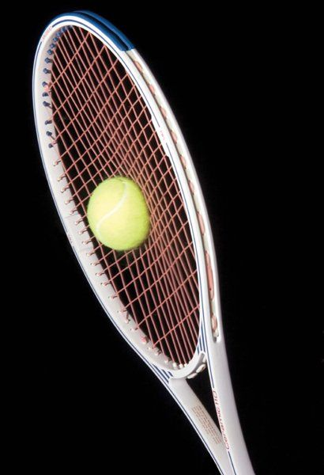
Sức mạnh là lượng lực mà các cơ có thể tạo ra. Trong quần vợt, sức mạnh cơ, đặc biệt ở chân, thân, lưng trên và vai, giúp cơ thể người chơi chịu đựng các lực của môn thể thao và thi đấu mà không bị chấn thương. Ngoài ra, việc có một mức sức mạnh cơ bản ở tất cả các cơ giúp vận động viên duy trì các khớp khỏe mạnh và giữ cơ cân bằng. Vì người chơi quần vợt có xu hướng lặp lại những cú đánh và chuyển động giống nhau, điều quan trọng là họ không phát triển sự mất cân bằng sức mạnh giữa các nhóm cơ khác nhau, điều có thể dẫn đến chấn thương.
Strength is the amount of force muscles can generate. In tennis muscular strength, especially in the legs, core, upper back, and shoulders, helps a tennis player’s body withstand the forces of the game and play without injury. In addition, having a base level of strength in all muscles helps an athlete maintain healthy joints and keep muscles in balance. Because tennis players tend to repeat the same shots and movements, it is important that they do not develop strength imbalances between different muscles, which may lead to injury.
Gắn liền với sức mạnh, sức bật là sự bùng nổ của người chơi, hay các cơ của họ tạo ra lực nhanh như thế nào. Sức bật của thân trên và thân dưới là những tài sản quan trọng trong quần vợt. Sức bật ở chân giúp người chơi bùng nổ vượt qua sân để trả một cú đánh. Khi đến được bóng, sức bật ở thân và vai giúp người chơi đập bóng qua lưới. Một cú đánh mạnh sẽ đến đối thủ nhanh hơn, cho họ ít thời gian hơn để phản ứng và trả lại.
Related to strength, power is a player’s explosiveness, or how fast his or her muscles can generate forces. Upper-body and lower-body power are important assets in tennis. Power in the legs helps a tennis player explode across the court to return a shot. Upon reaching the ball, power in the core and shoulder muscles help the player smash it over the net. A powerfully hit ball will reach an opponent more quickly, giving them less time to react and return it.
Trong quần vợt, một cú giao bóng hoặc cú đánh xuất sắc hiếm khi đủ để thắng một trận. Những tay vợt hàng đầu thực hiện những cú đánh và cú giao bóng mạnh liên tiếp, trong suốt cả trận đấu. Cú đánh chạm đất mà người chơi thực hiện vào cuối trận nên có cùng sức mạnh và cường độ như những cú đánh đầu trận. Tập luyện sức mạnh cho quần vợt thường bao gồm các bài tập được thực hiện với số lần lặp cao. Điều này giúp xây dựng sức bền cơ để người chơi có thể thi đấu tốt nhất trong suốt cả trận đấu.
In tennis one great serve or shot is rarely enough to win a match. The top tennis players hit powerful shots and serves repeatedly, throughout an entire match. The ground stroke a player hits at the end of the match should have the same power and intensity as the strokes hit during the first few minutes of the game. Strength training for tennis often includes exercises that are performed in high repetition. This helps to build muscular endurance so players can perform their best throughout the entire match.
Tập luyện sức mạnh và sức bật cho quần vợt Tập luyện cơ cho quần vợt nên tập trung vào sức mạnh, sức bật và sức bền. Để xây dựng sức mạnh cơ, vận động viên dùng tập luyện kháng lực, đòi hỏi các cơ phải chuyển động chống lại một lực đối lập. Kháng lực đẳng trương là một dạng tập luyện sức mạnh động học làm cho các sợi cơ rút ngắn và giãn dài bằng cách đặt chúng dưới sức kháng, chẳng hạn như một trọng lượng hoặc lực căng không đổi. Ví dụ, trong động tác cuốn tạ 10 pound (4,5 kg), các sợi cơ bắp tay trước rút ngắn khi vận động viên đưa tạ lên về phía vai. Các sợi giãn dài khi vận động viên hạ tạ xuống. Quần vợt đòi hỏi dạng co cơ này trong mọi cú đánh và chuyển động.
Strength and Power Training for Tennis Training muscles for tennis should focus on strength, power, and endurance. To build muscle strength, athletes use resistance training, which requires the muscles to move against an opposing force. Isotonic resistance is a dynamic form of strength training that shortens and lengthens muscle fibers by exerting them against resistance, such as a constant weight or tension. For example, in a bicep curl with a 10-pound (4.5kg) weight the bicep muscle fibers shorten as the athlete moves the weight toward the shoulder. The fibers lengthen as the athlete lowers the weight. Tennis requires this type of muscle contraction in every stroke and movement.
TẬP LUYỆN PLYOMETRICS
Các bài tập plyometric có thể được dùng để tăng cả sức mạnh thân trên và thân dưới. Các bài tập plyometric liên quan đến việc giãn dài nhanh một cơ, hay co cơ giãn dài. Năng lượng được lưu trữ trong cơ trong quá trình giãn căng. Ngay sau đó là sự rút ngắn của chính cơ đó, hay co cơ co ngắn. Khi các cơ được giãn nhanh, chúng cũng bật trở lại và rút ngắn nhanh chóng. Tập luyện plyometric dạy các cơ phát triển tốc độ co cơ mạnh hơn và nhanh hơn.
Plyometric exercises can be used to increase both upper body and lower body strength. Plyometric drills involve a rapid lengthening of a muscle, or eccentric contraction. Energy is stored in the muscle during the stretch. This is immediately followed by a shortening of the same muscle, or a concentric contraction. When the muscles are stretched rapidly, they also rebound and shorten quickly. Plyometric training teaches the muscles to develop more forceful and faster contraction speeds.
Cơ co càng nhanh và càng mạnh, vận động viên càng có nhiều sức bật.
The faster and more forcefully a muscle contracts, the more power an athlete has.
Với một nền tảng sức mạnh cơ, các tay vợt có thể thực hiện những bài tập cụ thể để tăng sức bật của cơ. Sức bật là sự kết hợp của sức mạnh và tốc độ. Các tay vợt phải có khả năng tạo ra sức bật bùng nổ cho các kỹ năng như đánh bóng thật mạnh, giao bóng ăn điểm trực tiếp (một cú giao bóng hợp lệ không bị đối phương chạm vào), và di chuyển nhanh quanh sân. Những tay vợt sử dụng sức mạnh của mình hiệu quả nhất có thể đánh bóng mạnh nhất và giao bóng nhanh nhất. Những tay vợt này đã được huấn luyện để phát triển cả sức bật lẫn sức mạnh.
With a base of muscle strength, tennis players can perform specific exercises to increase a muscle’s power. Power is a combination of strength and speed. Tennis players must be able to generate explosive power for skills such as hitting the ball hard, serving an ace (a legal serve not touched by an opponent), and moving quickly around the court. The tennis players who use their strength most effectively can hit the ball the hardest and serve the fastest. These players have trained to develop power as well as strength.
Plyometrics là một cách hiệu quả để các tay vợt phát triển và cải thiện sức bật của mình. “Plyometrics cải thiện sức bật bùng nổ,” Vern Gambetta, giám đốc phát triển thể thao của đội bóng chày New York Mets, cho biết. “Loại hình tập luyện này giúp bạn với tới được nhiều cú bóng hơn,”9 ông nói.
Plyometrics is an effective way for tennis players to develop and improve their power. “Plyometrics improves explosive power,” says Vern Gambetta, director of athletic development for the New York Mets baseball team. “This kind of training helps you get to more shots,”9 he says.
Các bài tập plyometric liên quan đến sự giãn dài nhanh của một cơ, hay sự co cơ giãn dài. Năng lượng được lưu trữ trong cơ trong quá trình kéo giãn. Điều này ngay lập tức được tiếp nối bởi sự co ngắn lại của cùng cơ đó, hay sự co cơ ngắn lại. Khi các cơ được kéo giãn nhanh, chúng cũng bật trở lại và co ngắn nhanh chóng. Tập luyện plyometric dạy các cơ phát triển tốc độ co cơ mạnh hơn và nhanh hơn. Cơ co bóp càng nhanh và càng mạnh mẽ, vận động viên càng có nhiều sức bật.
Plyometric drills involve a rapid lengthening of a muscle, or eccentric contraction. Energy is stored in the muscle during the stretch. This is immediately followed by a shortening of the same muscle, or a concentric contraction. When the muscles are stretched rapidly, they also rebound and shorten quickly. Plyometric training teaches the muscles to develop more forceful and faster contraction speeds. The faster and more forcefully a muscle contracts, the more power an athlete has.
Một ví dụ về bài tập plyometric mà các tay vợt sử dụng là bật nhảy ngồi xổm. Ngồi xổm làm giãn dài các cơ chân, một sự co cơ giãn dài. Bật nhảy kích hoạt một động tác co cơ ngắn lại. Thực hiện bật nhảy ngồi xổm lặp đi lặp lại sẽ phát triển sức bật ở các cơ chân.
An example of a plyometric exercise used by tennis players is squat jumps. Squatting lengthens the leg muscles, an eccentric contraction. Jumping triggers a concentric action. Performing repetitive squat jumps develops power in the leg muscles.
Thể Lực Hiếu Khí và Yếu Khí Mọi hoạt động của con người đều được cung cấp năng lượng bởi một hệ thống năng lượng hiếu khí hoặc yếu khí. Trong hệ thống hiếu khí, cơ thể dùng oxy để chuyển đổi năng lượng đã lưu trữ thành nhiên liệu. Hoạt động hiếu khí thường kéo dài hơn chín mươi giây và ở cường độ thấp đến trung bình, bao gồm các hoạt động như bơi lội và chạy bộ. Ngược lại, cơ thể dùng hệ thống yếu khí để chuyển đổi năng lượng đã lưu trữ thành nhiên liệu mà không cần oxy. Các hoạt động yếu khí có cường độ cao và thời gian ngắn hơn, như chạy nước rút hoặc hít xà.
Aerobic and Anaerobic Fitness and Conditioning All human activity is fueled by either an aerobic or anaerobic energy system. In an aerobic system, the body uses oxygen to convert stored energy into fuel. Aerobic activity usually lasts more than ninety seconds and uses low to moderate intensity and includes activities such as swimming and jogging. In contrast, the body uses the anaerobic system to convert stored energy into fuel without oxygen. Anaerobic activities are high intensity and shorter duration, such as sprints or pull-ups.
Chơi quần vợt đòi hỏi cơ thể vận động viên phải sử dụng cả hai hệ thống nhiên liệu hiếu khí và yếu khí. Trong một trận quần vợt trung bình, một tay vợt có thể thực hiện từ ba trăm đến năm trăm cú bùng nổ năng lượng cường độ cao khi anh ấy hoặc cô ấy bứt tốc vượt qua sân để cứu một cú đánh nền hoặc thực hiện một cú giao bóng mạnh. Với mỗi chuyển động ngắn, đòi hỏi năng lượng cao, hệ thống năng lượng yếu khí của tay vợt cung cấp nhiên liệu. Cơ thể vận động viên tạo ra năng lượng yếu khí theo hai cách.
Playing tennis requires an athlete’s body to use both aerobic and anaerobic fuel systems. In an average tennis match, a player can use three hundred to five hundred bursts of high-intensity energy when he or she sprints across the court to cover a ground stroke or blasts a power serve. For each short, high-energy movement, a player’s anaerobic energy system provides the fuel. An athlete’s body creates anaerobic energy in two ways.
Hệ thống năng lượng yếu khí tức thì cung cấp năng lượng trong sáu đến tám giây. Nó sử dụng các hóa chất đã lưu trữ trong cơ thể như adenosine triphosphate (ATP) và creatine phosphate (CP) trong một phản ứng hóa học tạo ra cú bùng nổ năng lượng nhanh.
The immediate anaerobic energy system supplies energy for six to eight seconds. It uses stored body chemicals such as adenosine triphosphate (ATP) and creatine phosphate (CP) in a chemical reaction that creates the quick burst of energy.
Caroline Wozniacki nhảy dây để cải thiện thể lực hiếu khí của cô trong một buổi tập trước một giải đấu vào năm 2011.
Caroline Wozniacki jumps rope to improve her aerobic conditioning during a workout before a tournament in 2011.
Nếu chuyển động kéo dài hơn mười giây, một hệ thống năng lượng yếu khí thứ hai sẽ khởi động, đó là hệ thống năng lượng yếu khí ngắn hạn. Nó tạo ra năng lượng mạnh trong một khoảng thời gian dài hơn, đến khoảng chín mươi giây. Năng lượng yếu khí này được giải phóng thông qua một loạt các phản ứng hóa học bên trong các cơ của vận động viên. Quá trình này cung cấp năng lượng cần thiết cho mỗi điểm trong một trận quần vợt. Một sản phẩm phụ của quá trình tạo năng lượng yếu khí là axit lactic. Khi axit lactic tích tụ trong cơ, vận động viên cảm thấy một cảm giác nóng rát.
If the movement lasts more than ten seconds, a second anaerobic energy system kicks into gear, the short-term anaerobic energy system. It produces intense energy for a longer period, up to about ninety seconds. This anaerobic energy is released through a series of chemical reactions within the athlete’s muscles. This process fuels the energy needed for each point in a tennis match. One by-product of anaerobic energy production is lactic acid. When lactic acid builds up in the muscle, the athlete feels a burning sensation.
Cả một trận quần vợt, bao gồm một loạt những khoảnh khắc cường độ cao, có thể kéo dài hàng giờ, thử thách sức bền của vận động viên. Để có nhiên liệu lâu dài, hệ thống năng lượng hiếu khí của cơ thể khởi động và cho phép các tay vợt tạo ra năng lượng trong một khoảng thời gian dài hơn. Hệ thống năng lượng hiếu khí cung cấp năng lượng nền trong suốt thời gian của một trận quần vợt hoặc buổi tập. Hệ thống năng lượng hiếu khí hấp thụ oxy qua phổi và vận chuyển nó qua dòng máu đến các mô đang hoạt động trong cơ thể. Nó dùng oxy như một chất xúc tác cho một phản ứng hóa học trong cơ tạo ra ATP hay năng lượng.
An entire tennis match, which includes a series of highintensity moments, can last for hours, testing an athlete’s endurance. For long-term fuel, the body’s aerobic energy system kicks in and allows tennis players to produce energy for a longer period. The aerobic energy system provides baseline energy over the length of a tennis match or practice session. The aerobic energy system takes in oxygen through the lungs and carries it via the bloodstream to the working tissues in the body. It uses the oxygen as a catalyst for a chemical reaction in the muscles that produces ATP or energy.
Trong bất kỳ môn thể thao nào, năng lượng hiếu khí cung cấp một nền tảng năng lượng và thể lực. Thể lực hiếu khí tốt cho phép tay vợt hồi phục nhanh hơn giữa những cú bùng nổ chuyển động cường độ cao. Các vận động viên có thể lực hiếu khí tốt cũng có thể loại bỏ axit lactic tích tụ khỏi cơ của họ nhanh hơn. Để thi đấu tốt trên sân, các tay vợt cần có mức độ thể lực hiếu khí và yếu khí cao. Cả hai yếu tố đều quan trọng khi xây dựng một chương trình rèn luyện thể lực cho các vận động viên quần vợt. Để cải thiện thể lực yếu khí, các tay vợt sử dụng các bài tập và hoạt động với một khoảng thời gian tương đối ngắn làm việc cường độ cao, sau đó là một khoảng thời gian hồi phục. Các bài tập yếu khí chung bao gồm tập theo khoảng nghỉ và các bài tập chuyển động trên sân, như chạy nước rút, bài tập chuyển động theo vạch, và bước lướt ngang. Các hoạt động tập luyện hiếu khí thường liên quan đến các nhóm cơ lớn, như cơ chân, và mang tính lặp lại. Ví dụ gồm chạy bộ, bơi lội, leo cầu thang, và đạp xe.
In any sport, aerobic energy provides a baseline of energy and fitness. Good aerobic fitness allows a tennis player to recover more quickly between bursts of highintensity movement. Athletes with good aerobic fitness can also clear accumulated lactic acid from their muscles more rapidly. To perform well on the court, tennis players need to have high levels of aerobic and anaerobic fitness. Both factors are important when building a conditioning program for tennis athletes. To improve anaerobic fitness, tennis players use drills and activities that feature a relatively short period of high-intensity work followed by a period of recovery. General anaerobic drills include interval training and on-court movement drills, such as wind sprints, line drills, and side shuffles. Aerobic training activities usually involve major muscle groups, such as the legs, and are repetitive. Examples include running, swimming, stair climbing, and biking.
Bắt đầu từ cuối thế kỷ hai mươi, những vận động viên chơi quần vợt đã trở nên to lớn hơn, nhanh hơn và mạnh hơn. Huấn luyện và rèn luyện thể lực để cải thiện sức mạnh, sức bật, tốc độ và sự nhanh nhẹn của vận động viên là những thành phần quan trọng để thi đấu ở đỉnh cao nhất.
Starting in the late twentieth century, athletes who play tennis have become bigger, faster, and stronger. Training and conditioning to improve an athlete’s strength, power, speed, and agility are critical components in performing at the highest level.
C
T
CHƯƠNG 3
Sức Mạnh và Sự Kiểm Soát Của Vợt ác tay vợt quần vợt hàng đầu thế giới khiến việc đánh bóng trông như một cú vung vợt đơn giản, song dùng vợt quần vợt để đánh bóng lại là một quá trình phức tạp. Người chơi muốn vung vợt nhanh nhất có thể để tạo ra một lượng lực tối đa khi vợt chạm bóng. Đồng thời, tay vợt cũng phải kiểm soát cây vợt, không để lực của bóng khi va chạm đẩy vợt lùi về sau, làm nó vặn xoắn hay cong vẹo đi.
Racket Power and Control he world’s top tennis players make hitting a ball look like a simple swing of the racket, yet using a tennis racket to hit a ball is a complex process. The player wants to swing the racket as fast as possible to generate the maximum amount of force when the racket strikes the ball. At the same time, tennis players must control the racket, not allowing the force of the ball on impact to push it backward, twist it, or bend it out of shape.
Dù trông có vẻ đơn giản, cách chế tạo vợt lại ảnh hưởng đến cách bóng phản ứng với từng cú đánh của người chơi. Trọng lượng, kích thước, dây vợt, chiều dài và chất liệu đều tác động đến hiệu suất của vợt. Theo Rod Cross và Crawford Lindsey, tác giả cuốn Technical Tennis: Racquets, Strings, Ball, Courts, Spin và Bounce: “việc chọn đúng cây vợt cho người chơi sẽ luôn là một nghệ thuật, nhưng là nghệ thuật ngày càng dựa trên khoa học.”10 Chiếc Vợt Hoàn Hảo Hai đặc trưng quan trọng nhất của một cây vợt là sức mạnh và sự kiểm soát. Một tay vợt phải có khả năng thực hiện các cú đánh và cú giao bóng với sức mạnh, đưa bóng đi nhanh đến mức đối thủ khó trả lại. Đồng thời, người chơi cũng phải biết đánh bóng có kiểm soát, đặt bóng vừa ra ngoài tầm với của đối thủ trong sân.
Although a racket may look simple, how it is made affects how the ball reacts to each shot the player makes. The weight, size, strings, length, and materials all affect how the racket performs. According to Rod Cross and Crawford Lindsey, authors of the book, Technical Tennis: Racquets, Strings, Ball, Courts, Spin, and Bounce, “matching the correct racquet to the player will always be an art, but one that is more and more based in science.”10 The Perfect Racket The two most important features of a racket are its power and control. A tennis player must be able to hit strokes and serves with power, sending balls that move so fast opponents have difficulty returning them. At the same time, a player must be able to hit shots with control, placing them just out of the opponent’s reach in the court.
Sức mạnh và sự kiểm soát của vợt chịu tác động của nhiều yếu tố, từ trọng lượng của khung vợt đến độ căng dây. Mỗi yếu tố đều góp phần quyết định vợt đánh ra sao và bóng phản ứng thế nào với một cú đánh.
The power and control of a racket are affected by many variables, from the weight of the frame to the tension in the strings. Each factor plays a role in determining how a racket hits and how the ball responds to a shot.
Việc tìm ra tổ hợp hoàn hảo giữa các yếu tố đó là một sự cân bằng, và nó lại khác nhau ở mỗi người chơi. Ví dụ, việc tăng độ căng dây sẽ giảm sức mạnh nhưng lại tăng khả năng kiểm soát. Với tay vợt mạnh, điều này có thể là lựa chọn tốt. Với người chơi yếu hơn, một cây vợt có nhiều sức mạnh hơn có thể hiệu quả hơn. Vì vậy, việc chọn cây vợt hoàn hảo là quyết định mang dấu ấn cá nhân độc nhất của mỗi người.
Determining the perfect combination of these factors is a balancing act, one that is different for each player. For example, increasing string tension decreases power but will increase control. For a powerful player, this may be a good choice. For a weaker player, a racket with more power may be more effective. Therefore, choosing the perfect racket is a uniquely personal decision.
N Những cây vợt quần vợt đầu tiên có cán dài và đầu vợt hình giọt nước.
T Early tennis rackets had a long handle and a teardrop shaped head.
Sức Mạnh Của Vợt Sức mạnh của một cây vợt quần vợt thường được mô tả là tốc độ của bóng rời khỏi vợt, hoặc là khả năng của vợt làm bóng bay nhanh. Vợt có sức mạnh có thể giúp người chơi đánh bóng về phía đối thủ nhanh nhất có thể, khiến đối thủ khó trả lại cú đánh. Tốc độ bóng rời khỏi vợt, và do đó sức mạnh của vợt, phụ thuộc vào hai yếu tố chính: tốc độ nảy ngược và tốc độ vung. Tốc độ nảy ngược là tốc độ bóng nẩy lên khi rời khỏi dây vợt. Tốc độ vung là tốc độ người chơi vung vợt. Cộng lại, tốc độ nảy ngược cộng với tốc độ vung bằng tốc độ rời vợt (exit speed), hay tốc độ bóng rời khỏi mặt dây.
Racket Power A tennis racket’s power is frequently described as either the ball speed off the racket or the ability of a racket to make a ball go fast. A racket with power can enable a player to hit the ball back to an opponent as fast as possible, making it harder for the opponent to return the shot. The speed of a ball coming off a racket, and therefore a racket’s power, depends on two main factors, the rebound speed and the racket speed. Rebound speed is how fast the ball bounces off the racket’s strings. Racket speed is how fast the player swings the racket. Together, the rebound speed plus racket speed equals the exit speed, or the speed at which the ball comes off the strings.
Tốc độ nảy ngược có thể được xác định chỉ bằng cách thả bóng rơi từ một độ cao nhất định xuống một cây vợt cầm tay đặt yên. Bóng sẽ nẩy lên, hay nảy, đến một độ cao nhất định. Tỷ lệ giữa độ cao nẩy lên với độ cao rơi ban đầu chính là tỷ lệ năng lượng được trả lại. Nếu bóng được thả rơi từ độ cao 20 inch (51 cm) và nẩy lên 3,2 inch (8 cm), thì khoảng 16 phần trăm năng lượng của bóng được trả lại khi nẩy. Căn bậc hai của con số này, 0,4, chính là tỷ lệ giữa tốc độ rời vợt và tốc độ bóng đến. Tỷ lệ càng cao, vợt càng có nhiều tốc độ nẩy ngược và bóng sẽ rời khỏi mặt dây càng nhanh.
Rebound speed can be determined by simply dropping a ball from a specific height onto a stationary, handheld racket. The ball will rebound, or bounce, to a certain height. The ratio of the rebound height to the drop height is the fraction of energy return. If a ball is dropped from a height of 20 inches (51cm) and it rebounds 3.2 inches (8cm), then about 16 percent of the ball’s energy is returned on the rebound. The square root of this number, 0.4, is the ratio of exit speed to the incoming speed of the ball. The higher the ratio, the more rebound speed the racket has and the faster the ball will come off the strings.
Sự Tiến Hóa Của Vợt hững cây vợt quần vợt đầu tiên được làm vào cuối những năm 1800. Khung vợt thường được chế tạo bằng gỗ tần bì (ash), vì loại gỗ này chắc và dai. Đến những năm 1870, đầu vợt đã lớn hơn, nhưng vẫn còn nhỏ so với tiêu chuẩn ngày nay. Trong suốt một trăm năm tiếp theo, vợt gỗ vẫn được ưa chuộng. Qua nhiều năm, độ bền và sức chắc của vợt gỗ được cải thiện khi các nhà làm vợt bắt đầu dùng những lớp gỗ mỏng của nhiều loại gỗ dán lại với nhau, nhưng vợt gỗ vẫn nặng và có đầu vợt nhỏ.
Evolution of the Racket he earliest tennis rackets were made in the late 1800s. The frame was generally constructed of ash wood, because it is strong and resilient. By the 1870s, the racket head grew in size, but was small compared to today’s standard. For the next one hundred years, wooden rackets remained popular. Over the years the strength and durability of wooden rackets improved as racket makers began to use thin layers of several types of wood glued together, but wooden rackets remained heavy and had small heads.
Vợt kim loại đã có từ năm 1889 nhưng chưa được dùng rộng rãi. Năm 1967, Wilson Sporting Goods đã cho ra mắt cây vợt kim loại phổ biến đầu tiên. Khung thép chắc hơn và nhẹ hơn gỗ. Năm 1976, đầu vợt cỡ lớn (oversize) đầu tiên trở nên phổ biến. Khung nhôm của nó có diện tích dây vợt lớn hơn 50 phần trăm so với cây vợt gỗ tiêu chuẩn 65 inch vuông (419 cm²).
Metal rackets existed as early as 1889 but were not widely used. In 1967 Wilson Sporting Goods introduced the first popular metal racket. The steel frame was stronger and lighter than wood. In 1976 the first oversize racket head gained popularity. Its aluminum frame had a string area more than 50 percent larger than the standard 65-square-inch (419sq.-cm) wooden racket.
Trọng lượng nhẹ hơn và đầu vợt lớn hơn đã làm quần vợt dễ chơi hơn với người chơi nghiệp dư. Với các tay vợt chuyên nghiệp, khung kim loại lại quá khó đoán. Cú đánh mạnh lệch tâm có thể làm cong khung vợt và thay đổi hướng đi của bóng. Đến năm 1990, khung graphite đã bùng nổ trong làng quần vợt. Khung graphite được làm từ hỗn hợp sợi carbon và nhựa resin. Chúng cứng hơn và cho khả năng kiểm soát tốt hơn với các tay vợt chuyên nghiệp. Ngày nay, khung graphite vẫn là lựa chọn phổ biến nhất của các tay vợt đang tìm một cây vợt cứng.
The lighter weight and larger head made tennis easier for recreational players. For professionals, the metal frames were too unpredictable. A hard, off-center shot would bend the frame and change the direction of the ball. By 1990, graphite frames had exploded into the tennis world. Graphite frames are made from a mixture of carbon fibers and a plastic resin. They are stiffer and provide better control for advanced players. Today, graphite frames remain the most common choice for players looking for a stiff racket.
Vợt quần vợt bằng gỗ được sử dụng trong khoảng một trăm năm, cho đến khi vợt kim loại được giới thiệu vào cuối những năm 1960.
Tennis racquets made of wood were used for around hundred years, until metal racquets were introduced in the late 1960s.
Tốc độ nảy ngược thực chất là thước đo lượng năng lượng bị mất khi bóng va chạm với vợt. Khi hai vật va chạm, mỗi vật tác dụng một lực lên vật kia. Năng lượng thường được truyền từ vật này sang vật khác. Khi bóng chạm vợt, năng lượng đến từ khối lượng và chuyển động của bóng và vợt. Khi năng lượng được truyền đi, một phần của nó bị mất.
Rebound speed is actually a measure of how much energy is lost when the ball collides with the racket. When two objects collide, each exerts a force on the other. Energy is usually transferred from one object to the other. When the ball hits the racket, the energy comes from the mass and the motion of the ball and racket. As the energy is transferred, some of it is lost.
Tốc độ nảy ngược càng cao có nghĩa là năng lượng bị mất càng ít.
Higher rebound speeds mean that less energy is lost.
Tốc độ nảy ngược hay sức mạnh không được quyết định bởi một đặc tính duy nhất của vợt. Thay vào đó, nó là sự kết hợp của tất cả các đặc điểm vật lý của khung vợt. Trọng lượng, điểm cân bằng, trọng lượng vung, độ cứng, kích thước đầu vợt, kiểu dây, loại dây và độ căng đều tác động đến tốc độ nảy ngược và sức mạnh của vợt.
Rebound speed or power is not determined by a single property of a tennis racket. Instead, it is the combination of all of the frame’s physical characteristics. A racket’s weight, balance, swing weight, stiffness, head size, pattern, string, and tension all impact a racket’s rebound speed and power.
Sự Kiểm Soát Của Vợt Trong quần vợt, kiểm soát có nghĩa là có khả năng đánh bóng đến đúng vị trí mong muốn với tốc độ như ý. Tay vợt dùng tốc độ, độ xoáy và góc độ để đưa bóng đến nơi mình muốn, đúng lúc mình muốn. Một phần lớn khả năng kiểm soát phụ thuộc vào người chơi. Mức độ mạnh nhẹ khi vung vợt, kỹ thuật họ dùng và cách họ cầm vợt đều có thể ảnh hưởng đến khả năng kiểm soát.
Racket Control In tennis control means being able to hit the ball to a desired location at a desired speed. A tennis player uses speed, spin, and angle to get the ball to where he or she wants it, when he or she wants it. A large portion of control depends on the player. How hard the player swings, the technique he or she uses, and how the player grips the racket can impact control.
Tay vợt vung vợt để đưa bóng qua sân. Tốc độ cú vung của người chơi cộng với tốc độ bóng nẩy lên khỏi mặt dây ảnh hưởng đến tốc độ rời vợt của bóng.
A tennis player swings her racquet to send the ball across the court. The speed of a player’s swing plus the speed at which the ball rebounds off the strings affects the ball’s exit speed.
Các đặc tính của vợt cũng ảnh hưởng đến khả năng kiểm soát. Khi bóng chạm vợt, lực của cú va chạm làm vợt cong và xoay về phía sau. Bóng chạm vợt càng mạnh, sự uốn cong, xoay và vặn xoắn càng lớn. Vợt càng cong và xoay nhiều, người chơi càng ít kiểm soát được hướng bóng sẽ nẩy đi.
The properties of the tennis racket also affect control. When the ball hits the racket, the force of the impact causes the racket to bend and rotate backward. The harder the ball hits the racket, the more bending, rotating, and twisting will happen. The more the racket bends and rotates, the less control a player will have over which direction the ball will rebound.
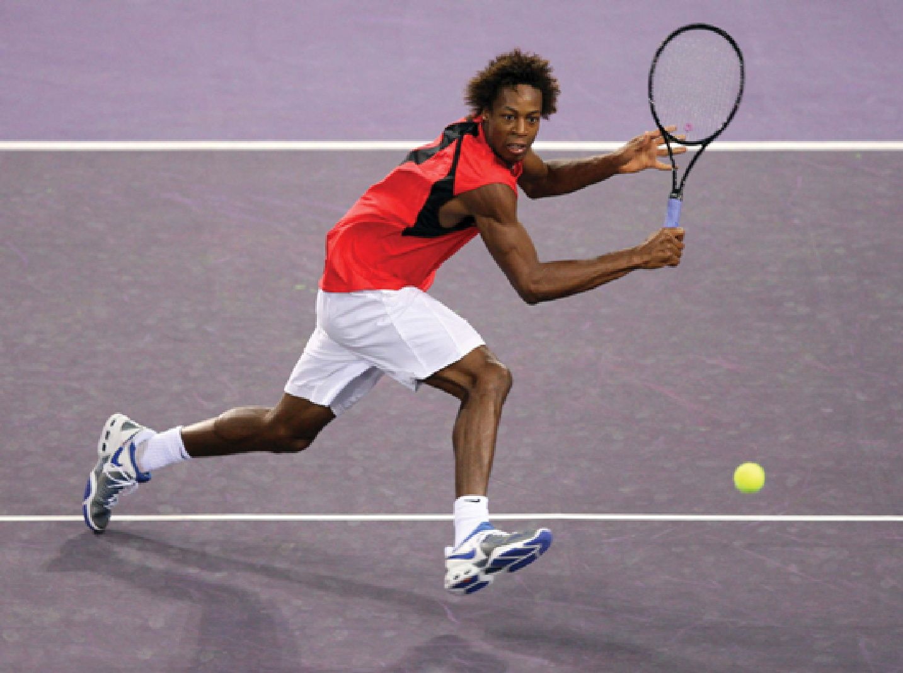
Cùng những đặc tính của vợt tác động đến sức mạnh — như trọng lượng, cách phân bổ trọng lượng và độ cứng khung — cũng tác động đến khả năng kiểm soát. Ví dụ, khung cứng hơn sẽ ít khả năng uốn cong và vặn xoắn khi bóng chạm vào. Cây vợt nặng hơn ít có khả năng xoay khi chịu va chạm.
The same racket properties that affect power, such as weight, weight distribution, and frame stiffness, also affect control. For example, a frame that is stiffer will be less likely to bend and twist when the ball hits it. A heavier racket is less likely to rotate upon impact.
Trọng Lượng Của Vợt Trọng lượng của một cây vợt ảnh hưởng đến tốc độ và sức mạnh của cú vung của người chơi, cũng như phản ứng của vợt khi bóng chạm vào nó.
Racket Weight The weight of a tennis racquet affects the speed and power of a player’s swing as well as the reaction of the racquet when the ball hits it.
Trọng lượng và cách phân bổ trọng lượng là hai trong số những đặc tính quan trọng nhất của một cây vợt vì tác động của chúng đến hiệu suất thi đấu. Chúng có ảnh hưởng mạnh mẽ đến dòng chảy năng lượng khi vợt và bóng quần vợt va chạm. Trọng lượng của vợt và cách nó được phân bổ trên khắp cây vợt quyết định người chơi có thể vung nó nhanh đến đâu. Các yếu tố này cũng tác động đến việc vợt sẽ bị đẩy lùi về sau, xoay và vặn xoắn như thế nào khi bóng chạm vào.
Weight and weight distribution are two of the most important characteristics of a racket because of their impact on performance. They have a strong influence on the flow of energy when the racket and tennis ball collide. A racket’s weight and how it is distributed through the racket determine how fast a player can swing it. These factors also affect how the racket will be pushed backward, rotate, and twist when the ball hits it.
Hầu hết vợt quần vợt hiện đại có trọng lượng từ 8 đến 12 ounce (227g và 340g). Người chơi nghiệp dư thường thích những cây vợt nhẹ hơn này, vì chúng dễ vung và dễ mang theo. Tuy nhiên, các tay vợt quần vợt hàng đầu lại khỏe hơn và sung sức hơn người chơi nghiệp dư. Họ dễ xử lý vợt nặng hơn và vung chúng nhanh hơn. Họ thích vợt nặng hơn vì chúng vung ra có nhiều sức mạnh hơn.
Most modern tennis rackets weigh between 8 and 12 ounces (227gr and 340gr). Recreational players tend to prefer these lighter rackets, because they are easier to swing and carry. Top tennis players, however, are stronger and more fit than recreational players. They are better able to handle heavier rackets and swing them faster. They prefer heavier rackets because they swing with more power.
Tốc độ nảy ngược và sức mạnh phụ thuộc chủ yếu vào trọng lượng của vợt. Một vật chuyển động như cây vợt có động năng, tức là năng lượng mà vật đó có nhờ chuyển động. Động năng của một vật phụ thuộc vào khối lượng của vật và tốc độ nó chuyển động. Vật càng có nhiều khối lượng, nó càng có nhiều năng lượng. Do đó, vợt nặng có nhiều năng lượng hơn vợt nhẹ.
Rebound speed and power depend mainly on the weight of the racket. A moving object like a racket has kinetic energy, which is the energy the object has due to motion. The kinetic energy of an object depends on the mass of the object and how fast it is moving. The more mass the object has, the more energy it has. Therefore, heavier rackets have more energy than lighter rackets.
Như đã đề cập, khi hai vật va chạm, mỗi vật tác dụng một lực lên vật kia. Năng lượng thường được truyền từ vật này sang vật khác trong va chạm. Khi vợt nặng va chạm với bóng, nó truyền nhiều năng lượng cho bóng hơn so với vợt nhẹ. Vì chúng có thể truyền nhiều năng lượng cho bóng, vợt nặng tạo ra tốc độ nảy ngược cao hơn. Nếu người chơi vung một cây vợt nhẹ và một cây vợt nặng với cùng tốc độ, thì bóng sẽ rời khỏi vợt nặng nhanh hơn sau va chạm. Vợt nặng có nhiều động lượng và nhiều năng lượng hơn để truyền cho bóng. Người chơi muốn có sức mạnh thuần túy sẽ chọn vợt nặng.
As noted, when two objects collide, each object exerts a force on the other. Energy is usually transferred from one object to another during the collision. When a heavy racket collides with the ball, it transfers more energy to the ball than a lighter racket. Because they can transfer more energy to the ball, heavier rackets generate higher rebound speeds. If a player swings a light and a heavy racket at the same speed, the ball will leave the heavy racket faster after impact. The heavy racket has more momentum and more energy that it transfers to the ball. A player looking for raw power would choose a heavy racket.
Tuy nhiên, vợt nặng có thể khó vung, đặc biệt là khi phải lặp đi lặp lại trong suốt một trận đấu hay buổi tập kéo dài ba giờ. Vợt nhẹ dễ vung hơn và có thể được vung nhanh hơn từ điểm A đến điểm B. Vì tốc độ rời vợt của bóng cũng phụ thuộc vào tốc độ vung, cây vợt nhẹ được vung nhanh hơn vợt nặng có thể cho ra bóng rời khỏi mặt dây với cùng một tốc độ rời vợt.
Yet heavy rackets can be difficult to swing, especially repeatedly during the course of a three-hour tennis match or practice. Light rackets are easier to swing and can be swung faster from point A to point B. Because the ball’s exit speed also involves racket speed, a lighter racket that is swung faster than a heavier racket may result in the ball leaving the strings with the same exit speed.
Cách phân bổ trọng lượng của vợt cũng là một yếu tố quyết định sức mạnh của nó.
How the racket’s weight is distributed is also a factor in its power.
Vợt nặng phần đầu có tốc độ nảy ngược cao hơn vợt nặng phần cán. Điểm Cân Bằng Hai cây vợt cùng trọng lượng có thể tạo cảm giác và hiệu suất thi đấu khác nhau nếu khối lượng của chúng được phân bổ theo cách khác nhau. Điểm cân bằng của vợt là điểm dọc theo chiều dài của nó tại đó vợt có thể cân bằng trên một vật đỡ mỏng, như mép của một cây thước kẻ. Vợt cân bằng ở nửa chiều dài tính từ đáy đến đỉnh đầu vợt thì được gọi là cân bằng đều. Nếu điểm cân bằng cao hơn nửa chiều dài vợt, thì đó là vợt nặng đầu. Nếu điểm cân bằng thấp hơn nửa chiều dài vợt, thì đó là vợt nhẹ đầu.
Rackets that are head heavy have higher rebound speeds than rackets that are handle heavy. Balance Point Two rackets with the same weight may feel and perform differently if their mass is distributed differently. The balance point of a racket is the point along its length where the racket will balance on a thin support, like the edge of a ruler. A racket that balances halfway along its length from the butt to the top of the head is evenly balanced. If the balance point is more than halfway up the racket, it is head heavy. If the balance point is less than half the racket length, the racket is head light.
Sự khác biệt giữa vợt nặng đầu và vợt nhẹ đầu có thể dễ dàng cảm nhận bằng cách cầm ngang mỗi loại một cây trong tay. Dù hai cây vợt có thể có cùng khối lượng, cây nặng đầu sẽ cảm thấy nặng hơn trong tay. Đó là vì trọng lượng của vợt nặng đầu nằm xa tay hơn, và người chơi phải dùng cổ tay chắc hơn để giữ cây vợt ngang. Vợt nhẹ đầu dễ vung hơn và được dùng để đánh vô-lê và chơi trên lưới. Vợt nặng đầu cũng đánh có nhiều sức mạnh hơn. Vợt cân bằng cho một chút của cả hai: sức mạnh và sự dễ chơi.
The difference between a head-heavy and head-light racket can be felt easily by holding one of each horizontally in the hand. Although the two rackets may have the same mass, the head-heavy one will feel heavier in the hand. This is because the weight of a head-heavy racket is farther away from the hand, and the player has to use a firmer wrist to keep the racket horizontal. Head-light rackets are easier to swing and are used for hitting volleys and net play. Headheavy rackets also hit with more power. Balanced rackets provide a little bit of both power and ease of play.
Trọng Lượng Vung Dù hai cây vợt có cùng trọng lượng và điểm cân bằng, chúng vẫn có thể có trọng lượng vung khác nhau. Trọng lượng vung không phải là thước đo tổng trọng lượng của vợt mà là thước đo sự phân bổ trọng lượng của nó. Trọng lượng vung mô tả cây vợt nặng đến mức nào khi được vung qua không khí. Vợt nặng đầu có trọng lượng vung cao hơn vợt nhẹ đầu. Nếu thêm trọng lượng vào cán vợt, tổng trọng lượng của vợt sẽ tăng, nhưng trọng lượng vung của nó sẽ giảm.
Swing Weight Even if two tennis rackets have the same weight and balance point, they may have different swing weights. Swing weight is not a measure of a racket’s total weight but instead is a measure of the distribution of its weight. Swing weight describes how heavy a racket feels when it is swung through the air. Head-heavy rackets have higher swing weights than headlight rackets. With added weight to its handle, a racket’s total weight will increase, but its swing weight will decrease.
Khi người chơi vung vợt, vợt chuyển động theo quỹ đạo tròn quanh một tâm, thường là quanh đáy cán vợt. Vợt có trọng lượng vung cao chống lại chuyển động tròn mạnh hơn, khiến chúng cảm thấy nặng hơn khi được vung. Vợt sẽ tăng tốc ít hơn và xoay chậm hơn quanh tâm của đường tròn. Tuy nhiên, vợt có trọng lượng vung thấp hơn sẽ tăng tốc nhanh hơn quanh tâm của đường tròn và cảm thấy nhẹ hơn với người chơi, dù cây vợt có tổng trọng lượng cao hơn. Đồng thời, va chạm với bóng tác dụng một lực lên vợt.
When a player swings a racket, it moves in a circular motion around a center, usually around the butt end of the racket handle. Higher swing weight rackets resist the circular movement more, which makes them feel heavier when being swung. The racket will accelerate less and rotate less quickly around the circle’s center. A racket with a lower swing weight, however, will accelerate more quickly around the circle’s center and feel lighter to the player even if the racket has a higher total weight. At the same time, impact with the ball applies a force to the racket.
Khi bóng chạm vợt có trọng lượng vung cao hơn, khả năng làm thay đổi chuyển động của vợt sẽ thấp hơn. Đầu vợt có nhiều sức mạnh hơn và bị lệch ít hơn khi va chạm, nhờ đó cây vợt ổn định hơn. Với những cây vợt có trọng lượng vung thấp hơn, cú va chạm của bóng sẽ dễ làm thay đổi chuyển động của vợt hơn. Vợt sẽ dễ bị vặn xoắn hoặc xoay hơn. Chuyển động này làm giảm khả năng kiểm soát của người chơi vì nó có thể thay đổi hướng bóng rời khỏi mặt dây.
When a ball hits a racket with a higher swing weight, it is less likely to change the racket’s motion. The racket head has more power and deflects less on impact, which makes the racket more stable. For rackets with lower swing weights, the ball’s impact will more easily change the racket’s motion. It will be more likely to twist or rotate. This movement decreases a player’s control because it can change the direction of the ball off the strings.
Mỗi người chơi phải tự quyết định chọn vợt có trọng lượng vung cao hay thấp. Vợt có trọng lượng vung cao hơn có thể có tốc độ vung cuối cùng thấp hơn nhưng gây ít chấn động hơn và kiểm soát hơn khi bóng đẩy vào vợt. Trọng lượng vung thấp hơn cho phép người chơi đạt được gia tốc và tốc độ vung lớn hơn của vợt nhưng có thể gây chấn động nhiều hơn và giảm kiểm soát khi va chạm.
Each player must decide whether to choose a racket with a high swing weight or a low swing weight. Rackets with higher swing weights may have a lower final swing speed but less shock and more control when the ball pushes against the racket. Lower swing weights allow a player to achieve greater racket acceleration and swing speed but may cause greater shock and less control on impact.
Trọng lượng vung cũng ảnh hưởng đến sức mạnh. Nếu vợt có trọng lượng vung cao hơn, thì nhiều phần sức mạnh hơn đến từ chính cây vợt và người chơi không cần vung nhanh đến vậy. Với trọng lượng vung thấp hơn, người chơi phải tăng tốc độ vung để tạo ra nhiều sức mạnh hơn.
Swing weight also affects power. If the racket has a higher swing weight, then more of the power comes from the racket itself and the player does not need to swing as fast. With a lower swing weight, a player must increase the swing speed to generate more power.
Huyền thoại quần vợt Roger Federer thường dùng bảy hoặc tám cây vợt căng ở các mức độ căng khác nhau trong một trận đấu năm hiệp. Độ Cứng Của Vợt Và Độ Rung Va chạm giữa bóng và dây vợt có thể làm vợt cong và rung. Vợt rung mạnh nhất ở các mép. Mức độ rung khi va chạm phụ thuộc vào bóng được đánh mạnh đến đâu, khung vợt dẻo đến đâu và bóng chạm vào đâu trên mặt dây. Độ cứng của vợt tăng khi khung vợt dày hơn. Khung cứng sẽ cong ít hơn khung dẻo khi va chạm với bóng. Khi bóng nẩy khỏi mặt dây, khung dẻo có thể rung lắc qua lại và rung nhanh trên một vùng rộng. Mức rung cao ở cây vợt dẻo gây ra cảm giác giật mà người chơi cảm thấy ở cánh tay sau một cú đánh mạnh. Cả hai đầu vợt đều rung và bàn tay cùng cẳng tay của người chơi rung lắc qua lại.
Tennis great Roger Federer usually uses seven or eight rackets strung at different tensions in a five-set match. Racket Stiffness and Vibrations The collision between the ball and the racket’s strings can cause a racket to bend and vibrate. A racket vibrates the most around its edges. The amount of vibration at collision depends on how hard the ball is hit, how flexible the racket frame is, and where the ball hits the strings. Racket stiffness increases as frame thickness increases. A stiff frame will bend less than a flexible frame when it collides with the ball. As the ball rebounds from the strings, a flexible frame may wiggle back and forth and vibrate rapidly through a large area. The high level of vibration in a flexible racket causes the jarring sensation that a player feels in the arm after a hard shot. Both ends of the racket vibrate and the player’s hand and forearm shake back and forth.
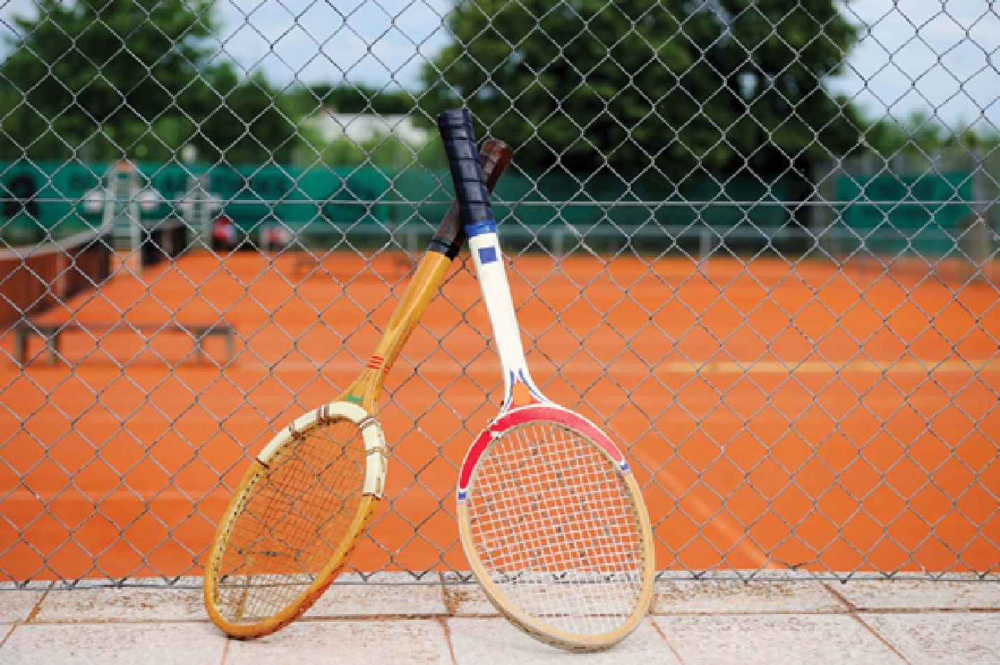
Chỗ bóng chạm lên mặt dây cũng ảnh hưởng đến độ rung của vợt.
Where the ball impacts the strings also affects a racket’s vibrations.
Khi bóng chạm vào giữa mặt dây vợt, khung vợt gần như không rung. Nếu người chơi đánh bóng lệch khỏi giữa mặt dây, thì cú va chạm sẽ gây rung nhiều hơn cho khung vợt.
When the ball hits the middle of a racket’s strings, there are little to no frame vibrations. If a player hits the ball away from the middle of the strings, then the impact causes more frame vibrations.
Các Điểm Ngọt Của Vợt Khi người chơi thực hiện một cú đánh có cảm giác tốt, người ta nói rằng họ đã đánh trúng điểm ngọt (sweet spot) của vợt. Dù các tay vợt đã nói về điểm ngọt của vợt từ nhiều thập kỷ nay, nhưng mãi đến năm 1981 khái niệm này mới được định nghĩa chính thức trong một bài báo kỹ thuật đăng trên tạp chí American Journal of Physics. Trên thực tế, một cây vợt có nhiều điểm ngọt. Ở giữa mặt dây, một điểm ngọt, được gọi là nút rung (vibration node), là vị trí mà tại đó khung vợt gần như không rung khi bóng chạm dây. Đường nút rung là một đường cong kéo dài từ giữa mặt dây đến các điểm ở khoảng vị trí mười giờ và hai giờ trên mặt vợt. Cú va chạm với bóng ở bất kỳ đâu dọc theo đường nút sẽ không gây rung cho khung vợt hay cán vợt, dù chính mặt dây vẫn sẽ rung. Nếu bóng chạm gần điểm mười giờ hoặc hai giờ, thì vợt có thể vặn xoắn trong tay người chơi. Hãy tưởng tượng một đường thẳng dọc theo trục giữa của vợt từ đỉnh đầu vợt xuống cán; chỗ đường thẳng này cắt đường nút rung chính là điểm ngọt theo nút rung. Nếu người chơi đánh bóng đúng vào điểm này, sẽ không có rung khung vợt và cũng sẽ không có vặn xoắn vợt. Đ Điểm Chết Của Vợt iểm chết của cây vợt là một vùng nằm gần đầu vợt. Khi bóng chạm vào điểm chết, bóng không nẩy ra khỏi mặt dây. Thay vào đó, vợt hấp thụ toàn bộ năng lượng mà bóng tác động lên nó khi va chạm. Người chơi cảm thấy một cú giật tối đa ở bàn tay do cú va chạm của bóng. Điều này xảy ra vì khối lượng hiệu dụng của vợt tại điểm đó bằng khối lượng của bóng. Nếu một quả bóng có khối lượng nhất định đâm đầu vào một vật khác cùng khối lượng đang đứng yên, thì bóng đang chuyển động sẽ dừng ngay lập tức và truyền toàn bộ năng lượng của nó cho vật đó.
Sweet Spots When a player hits a shot that feels good, he or she is said to have hit the racket’s sweet spot. Although tennis players have talked about a racket’s sweet spot for decades, it was not officially defined until 1981 in a technical paper published in the American Journal of Physics. In fact, there is more than one sweet spot in a tennis racket. In the middle of the strings, one sweet spot, called the vibration node, is a spot where there is little to no frame vibration when the ball hits the strings. The vibration node line is a curved line that extends from the middle of the strings to points at about the ten o’clock and two o’clock positions on the racket face. An impact with the ball anywhere along the node line will not cause vibrations in the racket frame or handle, although the strings themselves will vibrate. If the ball hits near the ten o’clock or two o’clock points, though, then the racket may twist in the player’s hand. Imagine a straight line down the racket’s center axis from the tip to the handle; the place where this line intersects the node line is the node sweet spot. If a player hits the ball exactly at this spot, there will be no frame vibrations and no racket twist. A A Racket’s Dead Spot tennis racket’s dead spot is an area located near the top of the racket. When a ball hits the dead spot, it does not bounce off the strings. Instead, the racket absorbs all of the energy that the ball exerts on it at impact. The player feels a maximum shock in the hand from the impact of the ball. This happens because the effective mass of the racket at that point is equal to the mass of the ball. If a ball of a certain mass hits head-on with another object of the same mass at rest, then the moving ball stops dead and transfers all of its energy to the object.
Một điểm ngọt khác được gọi là tâm va đập (center of percussion, COP). Nó nằm gần cổ vợt hơn vài inch so với điểm ngọt theo nút rung. Khi bóng chạm vợt, vợt tác dụng một lực lên bóng. Quả bóng tác dụng một lực bằng và ngược chiều lên vợt. Tác động của các lực này có thể thấy khi bóng nẩy khỏi mặt dây và cảm nhận được qua cán vợt đẩy ngược về phía bàn tay người chơi. Do lực đẩy này ở cán vợt, bàn tay người chơi xoay về phía sau quanh một trục qua cổ tay, và một cú giật truyền qua cánh tay người chơi. Tuy nhiên, khi bóng chạm vào COP, hai lực bằng nhau và ngược chiều, nên không có lực tổng hợp tác dụng lên bàn tay hay cẳng tay. Vì vậy, người chơi không cảm thấy giật ở bàn tay hay cánh tay.
Another sweet spot is called the center of percussion (COP). It is located a few inches closer to the throat of the racket than the vibration node sweet spot. When the ball hits the racket, the racket exerts a force on the ball. The ball exerts an equal and opposite force on the racket. The impact of these forces can be seen by the rebound of the ball off the strings and felt by the racket handle pushing back against the player’s hand. As a result of this handle push, the player’s hand rotates backward around an axis through the wrist and a shock travels through the player’s arm. When the ball hits on the COP, however, the two forces are equal and opposite and there is no net force on the hand or forearm. As a result, the player feels no jarring of the hand or arm.
Tầm Quan Trọng Của Dây Vợt Dây vợt là một yếu tố quan trọng trong hiệu suất thi đấu của cây vợt. Dây vợt giúp bóng rời khỏi vợt với tốc độ cao mà người chơi không cần phải vung vợt quá nhanh. Đó là lý do tay vợt dùng vợt có dây thay vì những chiếc vợt gỗ đơn giản không có dây. Các sợi dây tạo thành một mạng đan bên trong đầu vợt. Có nhiều loại vật liệu được dùng để làm dây vợt, gồm dây ruột tự nhiên (natural gut), nylon, polyester và Kevlar. Loại dây được dùng trong một cây vợt và cách nó được căng có thể ảnh hưởng đáng kể đến hiệu suất thi đấu của người chơi. Độ căng dây thay đổi tùy theo từng người chơi. Độ căng dây của vợt chính là mức áp lực mà các sợi dây được gắn chặt vào khung. Dây càng căng thì độ căng dây càng cao. Hầu hết người chơi thích độ căng dây từ 50 đến 70 pound (23 kg và 32 kg). Mức độ căng ảnh hưởng đến sức mạnh và khả năng kiểm soát của vợt.
Importance of the Strings A tennis racket’s strings are an important factor in its performance. Strings enable the ball to leave the racket with high speed without the player having to swing the racket very fast. This is why tennis players use rackets with strings instead of simple wooden paddles. The strings form a woven pattern inside the head of the racket. There are several materials that are used to make strings, including natural gut, nylon, polyester, and Kevlar. The type of string used in a racket and how it is strung can have a significant impact on a player’s performance. String tension varies from player to player. The string tension of a racket is the pressure under which the strings are secured to the frame. The tighter the strings are, the higher the string tension. Most players prefer string tension between 50 and 70 pounds (23kg and 32kg). The amount of tension affects the racket’s power and control.
Bóng quần vợt không lưu trữ và trả lại năng lượng một cách hiệu quả. Như đã đề cập trước đó, khi hai vật va chạm, mỗi vật tác dụng một lực lên vật kia và năng lượng thường được truyền từ vật này sang vật khác. Một phần năng lượng có thể bị mất trong quá trình này. Khi bị đánh, bóng quần vợt mất khoảng 45 phần trăm năng lượng tác động lên nó. Ví dụ, nếu bóng được thả rơi từ độ cao 100 inch (254 cm) xuống một mặt cứng, thì bóng sẽ chỉ nẩy lên khoảng 55 inch (140 cm), mất 45 phần trăm năng lượng ban đầu. Ngược lại, khi bóng quần vợt chạm vợt, các sợi dây giãn ra và hấp thụ năng lượng, và chúng trả lại khoảng 90 phần trăm lực đó khi bóng nẩy đi. Nếu các sợi dây dẻo hơn và có độ căng thấp hơn, thì chúng sẽ giãn nhiều hơn và lưu trữ nhiều năng lượng hơn. Khi đó, bóng sẽ có nhiều năng lượng và tốc độ hơn khi nẩy khỏi mặt dây. Tương tự, dây có độ căng cao hơn thì cứng hơn và sẽ làm bóng biến dạng khi va chạm và mất năng lượng, khiến nó nẩy chậm hơn khi rời khỏi mặt dây.
Tennis balls do not store and return energy efficiently. As previously noted, when two objects collide, each exerts a force on the other and energy is usually transferred from one to the other. Some energy may be lost during this process. When hit, the tennis ball loses about 45 percent of the energy applied to it. For example, if a ball is dropped from a height of 100 inches (254cm) onto a hard surface, then the ball will rebound only about 55 inches (140cm), losing 45 percent of its initial energy. In contrast, when a tennis ball hits a racket, the strings stretch and absorb the energy, and they return about 90 percent of that force when the ball rebounds. If the strings are more flexible and have a lower tension, then they will stretch more and store more energy. The ball will have more energy and speed when it rebounds off the strings. In the same manner, higher tension strings are harder and will cause the ball to deform on impact and lose energy, causing it to rebound slower off the strings.
Cả bóng quần vợt và dây vợt đều bị biến dạng khi va chạm. Năng lượng và tốc độ bóng nẩy khỏi vợt phụ thuộc vào độ căng của dây vợt.
Both the tennis ball and the strings of a racquet are deformed upon impact. The energy and speed at which the ball bounces off the racquet is dependent upon the tension of the strings.
Mức độ dây vợt giãn ra khi va chạm với bóng cũng ảnh hưởng đến khả năng kiểm soát của vợt. Dây dẻo và dễ giãn hơn, được căng ở mức thấp hơn, cho phép bóng lưu lại trên mặt dây lâu hơn khi va chạm. Khoảng thời gian bóng ở trên mặt dây được gọi là thời gian tiếp xúc (dwell time). Thời gian tiếp xúc càng dài, thì một thay đổi nhỏ về góc vợt do gập hoặc chuyển động của cổ tay càng tác động lớn đến hướng đi của bóng. Điều này có thể dẫn đến mất kiểm soát nếu vợt thay đổi góc trong khi bóng vẫn đang di chuyển cùng vợt. Ngoài ra, bóng đánh từ dây lỏng hơn thường có quỹ đạo cao hơn, vì chúng chúng nằm trên mặt dây trong khoảng thời gian dài hơn khi vợt nghiêng lên và đi lên trong cú vung.
How much the strings stretch upon collision with the ball also influences a racket’s control. More flexible, stretchy strings strung at a lower tension allow a ball to stay longer on the strings at impact. The time that the ball stays on the strings is called the dwell time. The longer the dwell time, the greater impact a slight change in the racket’s angle from a wrist flex or motion will have on the ball’s direction. This can lead to a loss of control if the racket changes its angle while the ball is moving with the racket. In addition, balls hit off looser strings tend to have a higher trajectory, because they stay on the strings for a longer period as the racket tilts upward and rises during the swing.
Loại Dây Và Kiểu Đan Loại dây cũng có thể ảnh hưởng đến sức mạnh và khả năng kiểm soát của vợt. Dây vợt có thể được làm từ nhiều loại vật liệu, gồm dây ruột tự nhiên (từ một bộ phận của ruột bò) và các sản phẩm nhân tạo (synthetic), chẳng hạn như nylon và polyester.
String Type and Pattern The type of string can also affect a racket’s power and control. Strings can be made of many materials, including natural gut (from a part of a cow’s intestines) and synthetic (man-made) products, such as nylon and polyester.
Các vật liệu khác nhau tác động đến độ cứng của dây. Dây ruột tự nhiên thường dẻo hơn, trong khi dây nhân tạo thường cứng hơn.
The different materials impact string stiffness. Natural gut strings tend to be more elastic, while synthetic strings tend to be stiffer.
Dây vợt có thể được làm từ các vật liệu có độ cứng khác nhau, và điều này lại ảnh hưởng đến khả năng kiểm soát và sức mạnh của người chơi.
A racquet’s strings can be made of materials of varying stiffness, which in turn affects a player’s control and power.
Cách một sợi dây chơi ra sao phụ thuộc vào độ cứng của nó. Độ cứng của dây được đo bằng mức độ nó giãn ra khi bị bóng đánh trúng. Dây càng giãn nhiều, thì nó càng mềm. Dây càng giãn ít, thì nó càng cứng. Độ cứng cao hơn dẫn đến kiểm soát hơn, sức mạnh kém hơn và cảm giác kém thoải mái hơn cho người chơi. Dây cứng hơn có thời gian tiếp xúc ngắn hơn và độ võng dây ít hơn. Ít thời gian trên mặt dây có nghĩa là ít thời gian hơn để vợt vặn xoắn và thay đổi hướng đi của bóng, nhờ đó cải thiện khả năng kiểm soát. Lực tác động cao hơn và độ võng dây thấp hơn làm bóng biến dạng nhiều hơn khi va chạm và mất năng lượng, dẫn đến ít sức mạnh hơn. Dây mềm hơn cho nhiều sức mạnh hơn vì dây uốn cong ôm lấy bóng khi va chạm, khiến bóng ít biến dạng hơn và ít mất năng lượng hơn. Thời gian lưu trên mặt dây lâu hơn dẫn đến kiểm soát kém hơn. g g Hầu hết tay vợt chuyên nghiệp hiện đại dùng dây polyester, vốn cứng và dày hơn dây ruột truyền thống và dây nylon. Dây polyester cứng giúp các tay vợt hàng đầu đánh bóng với khả năng kiểm soát cao hơn. “Người ta thường nói về công nghệ vợt đã thay đổi quần vợt như thế nào, nhưng tôi lại cho rằng công nghệ dây vợt mới có tác động lớn hơn,”11 cựu á quân U.S. Open Todd Martin cho biết.
How a string plays depends on its stiffness. String stiffness is measured by how much it stretches when hit by the ball. The more the string stretches, the softer it is. The less the string stretches, the stiffer it is. Higher stiffness leads to more control, less power, and less comfort for the player. Stiffer strings experience a shorter dwell time and less string deflection. Less time on the strings means less time for the racket to twist and alter the ball’s direction, which improves control. The higher impact force and less string deflection causes the ball to deform more upon impact and lose energy resulting in less power. Softer strings give more power because the strings bend to cup the ball upon impact, causing less ball deformation and energy loss. Longer time on the strings leads to less control. g g Most modern professional players use a polyester string, which is stiffer and thicker than conventional gut and nylon strings. The stiff polyester strings enable top players to hit balls with more control. “People often talk about how racket technology has changed tennis, but I would argue the string technology has had a greater impact,”11 says former U.S. Open finalist Todd Martin.
Khoảng cách giữa các sợi dây trong kiểu đan, hay độ rộng giữa các dây trên vợt, cũng có thể ảnh hưởng đến cách một cây vợt chơi ra sao. Kiểu đan dày với nhiều sợi dây hơn trên mỗi inch sẽ chơi cứng hơn, như thể có độ căng dây cao hơn. Nếu các sợi dây cách xa nhau hơn, thì vợt sẽ chơi như thể độ căng thấp hơn. Kiểu đan thưa thường làm tăng sự dịch chuyển của dây, do bóng đẩy các sợi dây chính sang hai bên.
The spacing of the stringing pattern, or how far apart the strings are on the racket, can also affect how a racket plays. A denser pattern with more strings per inch will play stiffer, as if it had a higher string tension. If the strings are farther apart, then the racket will play as if the tension were lower. Open patterns generally increase string movement, which is caused by the ball pushing the main strings to the side.
Dù hai cây vợt trông có vẻ giống hệt nhau, chúng thực tế có thể chơi rất khác nhau. Hiểu được khoa học đằng sau cây vợt giúp người chơi đưa ra lựa chọn tốt nhất cho lối chơi của mình.
Although two tennis rackets may look identical, they may in fact play very differently. Knowing the science behind a racket allows players to make the best choice for their game.
T T
I A
CHƯƠNG 4
Khoa Học Của Cú Nảy Bóng rong một khoảnh khắc, quả bóng quần vợt bay vượt qua lưới và nảy lên khỏi mặt sân. Rồi nó va vào các dây vợt, bật trở lại, và nảy xuống khỏi mặt sân lần nữa. Sau nhiều năm quan sát bóng quần vợt nảy trên sân, các tay vợt hàng đầu thế giới đã học cách dự đoán chính xác bóng sẽ nảy như thế nào, bay nhanh ra sao, và sẽ rơi ở đâu. Gần như theo bản năng, họ dường như biết khi nào cần tiến lên hay lùi xuống.
The Science of the Bounce n a split second, a tennis ball soars over the net and bounces off the court surface. Then it collides with a racket’s strings, rebounds, and bounces off the court again. After years of watching tennis balls bounce off courts, the world’s top tennis players have learned how to anticipate exactly how the ball will bounce, how fast it will travel, and where it will land. Almost instinctively, they seem to know when to move forward or backward.
Cách quả bóng nảy, độ cao của nó, tốc độ khi nó rời khỏi mặt sân, góc bay mà nó tạo ra, và cách nó xoáy phụ thuộc vào các tính chất của quả bóng và mặt sân. Với mỗi loại sân và mỗi thể loại người chơi, có nhiều loại bóng khác nhau. Những quả bóng cứng hơn, tốc độ nhanh có thể dùng trên các mặt sân chậm hơn, trong khi những quả bóng lớn hơn, tốc độ chậm được thiết kế cho các mặt sân nhanh hơn. Thậm chí còn có một loại bóng đặc biệt để sử dụng ở những nơi có độ cao lớn. Tất cả các quả bóng phải chơi một cách nhất quán và đủ bền để chịu đựng các cú va chạm lặp lại với tốc độ cao với mặt sân.
How the ball bounces, its height, the speed at which it comes off the court, the angle it takes, and how it spins depend on the properties of the ball and the court. For every court and player type, there are a variety of balls. Harder, fast-speed balls can be used on slower court surfaces, while larger, slow-speed balls are designed for faster court surfaces. There is even a special type of ball for use in high altitude locations. All balls must play consistently and be durable enough to withstand repeated high-speed impact with the court.
Sự tiến hóa của quả bóng Cách đây nhiều thế kỷ, bóng quần vợt ở Pháp được làm từ len hoặc vải và bọc trong da. Đến năm 1870, các tay vợt đánh những quả bóng cao su rỗng qua lưới. Vài năm sau, bóng quần vợt cao su được phủ một lớp vải flannel trắng. Việc phủ quả bóng cao su bằng vải làm nó chơi tốt hơn, cho phép vợt bám vào nó để tạo xoáy. Nó cũng làm quả bóng bền hơn. Cuối cùng, quả bóng cao su rỗng được bơm đầy khí để tạo áp suất và cải thiện độ nảy của nó. Một loại vải melton mượt đã thay thế lớp vải flannel may nguyên bản.
Evolution of the Ball Centuries ago, tennis balls in France were made of wool or cloth and encased in leather. By 1870, players batted hollow rubber tennis balls across the net. A few years later, rubber tennis balls were covered in a white flannel cloth. Covering the rubber ball in cloth made it play better, allowing the racket to grip it for spin. It also made the ball more durable. Eventually, the hollow rubber ball was filled with air to pressurize it and improve its bounce. A fuzzy melton cloth replaced the original stitched flannel cloth.
Kiểm tra bóng thi đấu Tại các giải đấu quần vợt chuyên nghiệp, các quả bóng quần vợt được kiểm tra định kỳ để đảm bảo chúng đáp ứng trọng lượng, đường kính và độ nảy theo yêu cầu. Các yêu cầu là:
Testing Tournament Balls t professional tennis tournaments, the tennis balls are tested regularly to make sure they meet the required weight, diameter, and bounce. The requirements are:
- Trọng lượng từ 1,975 đến 2,095 ounce (56 gr và 59,4 gr).Weight between 1.975 and .095 ounces (56gr and 59.4gr).
- Đường kính từ 2,57 đến 2,87 inch (6,54 cm và 7,30 cm).Diameter between 2.57 and 2.87 inches (6.54cm and 7.30cm).
- Nảy lên độ cao từ 53 đến 58 inch (135 cm và 147 cm) khi được thả rơi từ độ cao 100 inch (254 cm) xuống một tấm bê tông. Trong lịch sử, bóng quần vợt chỉ có màu đen hoặc trắng. Năm 1972, Liên đoàn Quần vợt Quốc tế (ITF) đưa bóng quần vợt màu vàng vào luật của môn quần vợt. Màu vàng làm cho bóng dễ nhìn hơn trên truyền hình. Ngày nay, bóng quần vợt hiện đại dùng trong thi đấu đáp ứng các tiêu chuẩn của ITF và Hiệp hội Quần vợt Hoa Kỳ (USTA). Kích thước, trọng lượng, độ nảy và độ nén của quả bóng tuân theo các tiêu chuẩn nhất định, đảm bảo rằng những quả bóng dùng trong thi đấu là tương tự nhau và không tay vợt nào có lợi thế hơn tay vợt khác. Người chơi giải trí có thể dùng bất kỳ loại bóng nào, nhưng để tuân theo luật của môn quần vợt, bóng phải được ITF hoặc USTA chứng nhận. Tính chất của quả bóng Hầu hết bóng quần vợt được bơm đầy khí có áp suất. Khí đẩy vào thành trong của lõi cao su rỗng của quả bóng, làm cho các thành cao su cứng hơn, giống như không khí bơm vào quả bóng bay làm nó cứng hơn. Khi quả bóng chạm vợt hoặc mặt sân, áp suất làm nó nảy lên. Cao su của hầu hết các quả bóng hơi thấm khí, nghĩa là khí bên trong từ từ rò rỉ ra khỏi quả bóng theo thời gian. Các phân tử khí di chuyển từ vùng có áp suất cao (bên trong quả bóng) đến vùng có áp suất thấp hơn (bên ngoài quả bóng). Để tránh khí rò rỉ trước khi quả bóng được bán, các nhà sản xuất bóng quần vợt đóng gói bóng trong những hộp áp suất đặc biệt. Điều này giữ áp suất bóng ổn định cho đến khi hộp được mở. Sau đó, bóng tiếp xúc với áp suất khí quyển bình thường, và khí bên trong bắt đầu thấm ra qua các thành cao su. Khi điều này xảy ra, quả bóng mất độ nảy và được cho là “chết.” Bóng quần vợt có thể mất độ nảy nhanh chóng. Tại các giải của Hiệp hội Quần vợt Chuyên nghiệp (ATP) và Hiệp hội Quần vợt Nữ (WTA), các trọng tài thay bóng nhiều lần trong một trận đấu. Một tay vợt kéo một vạt kim loại để mở niêm phong thùng bóng quần vợt có áp suất. Áp suất giúp giữ các phân tử khí bên trong bóng quần vợt và duy trì khả năng nảy của chúng. Giữ quả bóng ở nhiệt độ ổn định sẽ cải thiện hiệu suất của nó. Bóng ấm nảy cao hơn bóng lạnh, vì nhiệt độ ấm khiến khí bên trong quả bóng giãn nở, làm tăng áp suất lên thành trong của quả bóng. Tại Wimbledon, bóng được bảo quản trong một thùng lạnh đặc biệt, giữ chúng ở nhiệt độ không đổi 68°F (20°C). Một số quả bóng quần vợt có áp suất khí bên trong bằng với áp suất bên ngoài. Những quả bóng không áp suất này bền hơn những quả bóng áp suất rẻ tiền hơn vì khí không thể rò rỉ ra ngoài và làm quả bóng chết. Bóng không áp suất có thành cao su dày hơn tạo ra độ nảy của quả bóng, nhưng chúng có cảm giác khác và không nảy nhiều bằng một quả bóng áp suất mới. Bóng quần vợt hiện đại được phủ một lớp vải mượt, làm từ len dày, đan chặt. Lớp vải mượt tạo ra ma sát khi quả bóng chạm vào vợt quần vợt hoặc mặt sân. Ma sát là lực được tạo ra khi hai bề mặt chuyển động cọ xát lẫn nhau. Nếu không có ma sát, quả bóng sẽ trượt đi khi nó chạm vợt hoặc mặt sân. Lớp vải mượt giúp quả bóng bám vào các bề mặt rồi bật trở lại. Bóng quần vợt màu vàng được sử dụng tại Wimbledon lần đầu tiên vào năm 1986. Độ nảy của quả bóng Mặc dù quả bóng quần vợt chỉ chạm mặt sân trong một giây ngắn ngủi, cú nảy mà nó thực hiện sau va chạm có tác động to lớn đến trận quần vợt. Trong cú nảy trong tích tắc, quả bóng thay đổi tốc độ, hướng và tốc độ xoáy. Thay đổi cú nảy một chút và tất cả những yếu tố này cũng sẽ thay đổi. Cách quả bóng nảy ảnh hưởng đến các cú đánh và chiến thuật mà một tay vợt chọn trong trận đấu. I Một quả bóng quần vợt đang nảy minh họa cho định luật thứ ba của Newton về chuyển động. Khi quả bóng chạm mặt sân, lực từ mặt đất đẩy quả bóng theo phương thẳng đứng, khiến quả bóng nảy lên. Khi một quả bóng nảy khỏi mặt sân, có hai lực tác động đến cách nó di chuyển. Một lực thẳng đứng, gọi là lực phản ứng từ mặt đất, đẩy quả bóng lên trên và khiến nó vọt lên hay nảy lên. Đồng thời, một lực ma sát đẩy theo phương ngang vào quả bóng, làm chậm nó lại và khiến nó xoáy. Theo định luật thứ ba của Newton về chuyển động, một trong ba ý tưởng về chuyển động được phát triển bởi nhà vật lý và nhà thiên văn học Isaac Newton vào thế kỷ thứ mười tám, khi một lực hay một tác động tác động lên một vật thể, sẽ có một lực phản ứng ngược lại bằng nhau. Trong quần vợt, lực từ quả bóng chạm mặt sân là tác động, trong khi lực từ mặt sân đẩy thẳng đứng lên quả bóng là phản ứng. Lực phản ứng từ mặt đất khiến quả bóng nảy lên. Độ lớn của lực phản ứng từ mặt đất đẩy lên quả bóng phụ thuộc vào tốc độ của quả bóng và độ cứng của mặt sân và quả bóng. Khi mặt sân mềm, va chạm của quả bóng làm biến dạng mặt sân. Nếu bề mặt mềm và không bật trở lại đủ nhanh, một phần năng lượng của quả bóng bị mất và không thể dùng để giúp quả bóng nảy cao. Trong trường hợp này, lực phản ứng từ mặt đất tác động lên quả bóng yếu hơn. Ngược lại, những mặt sân cứng bị biến dạng ít hơn khi quả bóng chạm. Điều này để lại nhiều năng lượng hơn cho lực đẩy lên trên đưa quả bóng nảy cao hơn và nhanh hơn. Các định luật của Newton về chuyển động saac Newton (1642–1727) là nhà vật lý và toán học người Anh, người đã phát triển ba ý tưởng cơ bản về chuyển động. Các nhà khoa học gọi các ý tưởng của ông là các định luật chuyển động của Newton. Định luật thứ nhất về chuyển động nói rằng một vật đang đứng yên có xu hướng đứng yên, và một vật đang chuyển động có xu hướng tiếp tục chuyển động với cùng tốc độ và cùng hướng, trừ khi chịu tác động của một lực không cân bằng. Một quả bóng sẽ không chuyển động trừ khi nó bị đẩy về một phía bởi một lực không cân bằng. Tương tự, một quả bóng sẽ không dừng chuyển động trừ khi có vật đẩy ngược lại nó theo chiều ngược lại. Định luật thứ hai về chuyển động nói rằng khối lượng của một vật càng lớn, lực cần thiết để di chuyển vật đó càng lớn. Nếu một tay vợt vung hai cây vợt có khối lượng khác nhau, anh ấy hoặc cô ấy sẽ phải dùng nhiều lực hơn để di chuyển cây vợt nặng hơn với cùng tốc độ. Định luật này có thể được diễn đạt bằng phương trình: Lực = khối lượng (trọng lượng) X gia tốc (tốc độ), hay F = ma. Dùng công thức này, nếu biết trọng lượng và tốc độ của một vật, thì lực tác động lên nó có thể được tính toán. Định luật thứ ba về chuyển động nói rằng với mọi tác động, sẽ có một phản ứng ngược chiều và bằng nhau. Các lực luôn xuất hiện theo cặp. Khi một người ngồi trên ghế, cơ thể của anh ấy hoặc cô ấy tác dụng một lực xuống dưới lên chiếc ghế. Chiếc ghế tác dụng một lực bằng nhau lên trên. Nếu không, chiếc ghế sẽ sập. Cú va chạm sắp xảy ra giữa một cây vợt và quả bóng minh họa cho định luật thứ nhất của Newton về chuyển động. Tốc độ thẳng đứng của quả bóng sau cú nảy càng nhanh, nó sẽ nảy càng cao. Sân đất sét là một trong những mặt sân cứng nhất. Cú nảy thẳng đứng của quả bóng sẽ cao hơn và nhanh hơn trên sân đất sét so với cú nảy chậm hơn và thấp hơn trên mặt sân cỏ mềm hơn. Lực ma sát Lực thứ hai tác động đến cú nảy của quả bóng được gọi là ma sát. Ma sát được tạo ra khi hai bề mặt chuyển động cọ xát lẫn nhau. Ma sát xuất hiện hàng ngày. Nó cho phép một người đi lại và chạy mà không bị trượt. Nó giúp một tay vợt vung vợt mà không bị tuột khỏi tay. Trong quần vợt, ma sát đẩy theo phương ngang vào quả bóng, làm chậm nó lại và khiến nó xoáy. Ma sát trượt xảy ra khi một bề mặt trượt trên bề mặt khác, chẳng hạn như khi quả bóng chạm và trượt trên sân. Ma sát trượt tác dụng theo hướng ngược lại với chuyển động của quả bóng và làm chậm chuyển động trượt. Ma sát trượt làm chậm quả bóng khi nó chạm sân. Nó cũng làm chậm một tay vợt trượt người khi chạy trên mặt sân trơn. Ma sát lăn xảy ra khi quả bóng lăn trên sân. So với ma sát trượt, ma sát lăn là một lực yếu hơn nhiều. Một quả bóng lăn qua sân sẽ di chuyển mà không bị chậm lại nhiều. Ngược lại, một quả bóng trượt qua sân sẽ chậm lại nhanh hơn nhiều vì tác dụng mạnh hơn của ma sát trượt lên nó. Ma sát đóng một vai trò quan trọng trong cách quả bóng nảy. Khi một quả bóng chạm mặt sân, nó thường chạm theo một góc. Nó bắt đầu bị bẹp và trượt dọc theo bề mặt. Ma sát đẩy quả bóng theo hướng ngược lại với hướng trượt của nó, song song với bề mặt. Lực ma sát làm chậm đáy của quả bóng nhưng không tác động lên đỉnh quả bóng. Kết quả là, đỉnh của quả bóng chuyển động về phía trước nhanh hơn đáy của quả bóng. Điều này khiến quả bóng quay và xoáy. Đó là lý do tại sao hầu hết các quả bóng quay với xoáy lên sau khi nảy. Nếu quả bóng đang xoáy trước khi va chạm, thì lực ma sát có thể thay đổi cách nó xoáy. Trên bề mặt nhám, ma sát có thể khiến quả bóng dừng lại hoàn toàn trong một tích tắc. Khi đáy quả bóng dừng lại, người ta nói rằng nó đang bám vào bề mặt. Nếu mặt sân trơn, thì quả bóng sẽ trượt lâu hơn, và sẽ mất nhiều thời gian hơn để nó dừng lại hoàn toàn. Đáy quả bóng ngừng trượt, nhưng đỉnh tiếp tục chuyển động về phía trước, kéo quả bóng về phía trước. Góc nảy Khi một quả bóng quần vợt chạm sân, nó nảy hay bật lại theo một góc. Cách nó rời khỏi mặt sân phụ thuộc một phần vào góc mà nó chạm bề mặt. Theo các định luật vật lý, khi một vật nảy ra khỏi một vật đứng yên và không thể di chuyển khác, góc mà nó chạm vào (góc tới) bằng góc mà nó rời đi (góc phản xạ). Do đó, nếu không có ma sát tác động lên quả bóng, nếu góc tới là 20 độ, góc phản xạ cũng sẽ là 20 độ. Kết quả là, nếu quả bóng quần vợt đến theo góc nhỏ, nó thường sẽ nảy ra theo góc nhỏ tương tự. Những quả bóng chạm sân theo góc lớn thường sẽ nảy ra theo góc lớn. Các lực tác động theo phương ngang và phương thẳng đứng lên quả bóng cũng sẽ ảnh hưởng đến góc nảy của nó. Khi quả bóng chạm sân, lực phản ứng thẳng đứng từ mặt đất đẩy nó lên trên. Đồng thời, một lực ma sát đẩy nó theo phương ngang ngược với chuyển động về phía trước của nó, khiến nó chậm lại và quay. Ma sát khiến tốc độ theo phương ngang của quả bóng chậm lại với tốc độ nhanh hơn tốc độ thẳng đứng của nó. Điều này khiến hầu hết bóng quần vợt nảy khỏi sân theo một góc lớn hơn góc tới. Đặc điểm của mặt sân quần vợt có thể có nhiều bề mặt khác nhau, gồm đất sét, cỏ, gỗ, bê tông, nhựa đường, hoặc acrylic. Một số thì nhẵn, trong khi những bề mặt khác thì nhám. Một số thì mềm, trong khi những bề mặt khác thì cứng, với nhiều mức độ khác nhau ở giữa. Sân đất sét, bê tông, nhựa đường và acrylic là cứng, trong khi cỏ là một trong những mặt sân mềm nhất. Sân cỏ cũng nhẵn, và sân đất sét thì nhám. Mỗi bề mặt ảnh hưởng đến cách quả bóng nảy trên sân và đến độ cao, tốc độ và độ xoáy của nó sau cú nảy. Cách quả bóng nảy trên bề mặt quyết định một mặt sân chơi chậm hay nhanh. Hệ số nảy (COR) của mặt sân, tức tỷ lệ giữa tốc độ thẳng đứng của quả bóng sau cú nảy với tốc độ trước cú nảy, đo độ cứng của bề mặt sân. Nếu tốc độ thẳng đứng sau cú nảy nhanh hơn trên sân này so với sân khác, quả bóng sẽ nảy cao hơn trên sân thứ nhất. Ví dụ, nếu một sân cỏ có COR xấp xỉ 0,6 và một sân đất sét có COR là 0,85, một quả bóng sẽ nảy thẳng đứng cao hơn và nhanh hơn trên sân đất sét. Đặc điểm thứ hai, độ nhám của bề mặt sân, ảnh hưởng đến tốc độ theo phương ngang của quả bóng sau khi nó nảy. Nếu quả bóng chậm lại nhiều sau khi nảy, thì mặt sân được coi là chậm. Nếu tốc độ theo phương ngang của quả bóng không thay đổi nhiều sau cú nảy, thì mặt sân là nhanh. Sân đất sét, như những sân tại Roland Garros nơi diễn ra French Open, có bề mặt nhám tạo ra mức ma sát cao lên quả bóng, dẫn đến lối chơi chậm hơn. Trong quần vợt, tốc độ theo phương ngang của quả bóng sau cú nảy phụ thuộc vào lượng ma sát trượt tạo ra giữa quả bóng và mặt sân khi va chạm. Các bề mặt sân khác nhau tạo ra lực ma sát nhiều hay ít cho quả bóng. Bề mặt sân nhẵn tạo ra ít ma sát hơn. Nếu ma sát thấp, thì quả bóng sẽ mất ít tốc độ theo phương ngang khi nảy và mặt sân sẽ chơi nhanh. Ngược lại, những sân nhám có mức ma sát cao hơn với quả bóng. Quả bóng sẽ mất một phần lớn hơn tốc độ theo phương ngang, khiến mặt sân chơi chậm. Ma sát của mặt sân được đo bằng hệ số ma sát (COF), tức là lực cần thiết để di chuyển hai bề mặt trượt lên nhau, chia cho lực giữ chúng lại với nhau. Mỗi mặt sân quần vợt có một COF khác nhau với quả bóng quần vợt, thường trong khoảng từ 0 đến 1. COF càng cao, ma sát giữa sân và bóng càng lớn, làm chậm tốc độ theo phương ngang của quả bóng sau khi nó chạm sân. Một bề mặt trơn có thể có COF 0,1, trong khi một bề mặt nhám hơn có thể có COF 0,9. Sân cỏ nhìn chung trơn hơn với COF thấp hơn, trong khi sân đất sét nhám hơn và có COF cao hơn. Để có một ví dụ về cách độ nhám của bề mặt tác động đến ma sát, hãy tưởng tượng đẩy một vật nặng qua một bề mặt nằm ngang. Nếu COF của bề mặt là 0,5, thì sẽ cần một lực theo phương ngang là 10 pound (4,5 kg) để kéo trượt một vật nặng 20 pound (9 kg) qua bề mặt với tốc độ không đổi. Nếu bề mặt nhám hơn và COF của nó là 0,8, thì sẽ cần nhiều lực hơn, 16 pound (7,3 kg), để trượt cùng vật đó với cùng tốc độ không đổi. Theo thời gian, việc chơi lặp đi lặp lại trên sân nhám có thể làm mòn sân và làm nhẵn nó, giảm ma sát và làm sân nhanh hơn. Các câu lạc bộ quần vợt sẽ thường xuyên làm lại bề mặt những sân này, đôi khi phủ chúng bằng một hỗn hợp sơn và cát. Độ nhám của cát tạo ra ma sát cao giữa bề mặt sân và quả bóng, làm chậm nó lại. Các tay vợt trên sân thường dùng góc nảy của quả bóng để đánh giá liệu mặt sân chơi nhanh hay chậm. Điều này có thể được vì ma sát cũng thay đổi góc nảy của quả bóng. Ma sát giữa quả bóng và mặt sân càng lớn, góc nảy sẽ càng lớn. Ma sát cao hơn sẽ làm chậm tốc độ theo phương ngang của quả bóng nhiều hơn tốc độ thẳng đứng của nó. Điều này dẫn đến cú nảy với góc cao hơn. Với ít ma sát hơn, góc nảy sẽ nhỏ hơn vì tốc độ theo phương ngang của quả bóng không bị làm chậm nhiều bằng. Các tay vợt biết rằng nếu bóng có xu hướng nảy ở góc cao hơn, mặt sân có lẽ chậm và bóng sẽ mất nhiều thời gian hơn để đến với tay vợt. Nếu bóng nảy khỏi sân ở góc thấp hơn, mặt sân có lẽ đang chơi nhanh. Tay vợt điều chỉnh để sẵn sàng vợt của mình sớm hơn. Wimbledon là giải đấu lớn duy nhất vẫn được thi đấu trên sân cỏ. Chơi trên các mặt sân khác nhau Một số tay vợt thích sân chậm, trong khi những người khác lại thích chơi trên sân nhanh hơn. Sân chậm cho người chơi nhiều thời gian hơn để đuổi theo bóng, điều này có thể dẫn đến những loạt đánh qua lại dài hơn. Loại sân này có lợi cho những tay vợt bền bỉ chơi cuối sân (những tay vợt thích đánh các cú đánh nền từ cuối sân thay vì tiến lên lưới) và mắc ít lỗi. Những tay vợt thích sân nhanh không muốn mặt sân làm chậm cú đánh của họ. Loại sân này có lợi cho những tay vợt đánh mạnh, những người chiến thắng bằng cách áp đảo đối thủ. Khi COR của cả hai sân như nhau, quả bóng sẽ nảy lại với góc thấp hơn trên sân nhanh so với trên sân chậm. Các tay vợt trên sân cỏ nhanh của Wimbledon sẽ có ít thời gian hơn để với tới bóng so với khi họ chơi trên sân đất sét chậm hơn tại French Open. Các tay vợt có thể điều chỉnh lối chơi và dụng cụ của mình để thi đấu tốt nhất trên các mặt sân khác nhau. Trên sân chậm, một tay vợt có thể vung mạnh hơn hoặc giảm độ căng dây vợt của mình. Những chiến thuật này sẽ bù lại sức mạnh bị mất trên sân chậm. Trên sân nhanh, một tay vợt sẽ gặp khó khăn hơn trong việc kiểm soát cú đánh của mình. Để thích ứng, tay vợt có thể tăng độ căng dây hoặc làm đầu vợt nhẹ hơn để tăng khả năng kiểm soát. NBounce to a height between 53 and 58 inches (135cm and 147cm) when dropped from a height of 100 inches (254cm) onto a concrete slab. Historically, tennis balls were either black or white. In 1972 the International Tennis Federation (ITF) introduced yellow tennis balls into the rules of tennis. The yellow color made the balls easier to see on television. Today, modern tennis balls used in competition meet ITF and United States Tennis Association (USTA) specifications. The ball’s size, weight, rebound, and compression follow certain standards, ensuring that the balls used in competition are similar and no player has an advantage over another player. Recreational players may use any type of ball, but in order to follow the rules of tennis the balls must be ITF or USTA approved. Properties of the Ball Most tennis balls are filled with pressurized air. The air presses against the inner walls of the ball’s hollow rubber core, which makes the rubber walls stiffer, like the air pumped into a balloon makes it stiffer. When the ball hits a racket or the court, the pressure makes it bounce. The rubber of most balls is slightly permeable to air, which means the air inside slowly leaks out of the ball over time. Air molecules move from high-pressure areas (inside the ball) to lower-pressure areas (outside the ball). To keep the air from leaking before the ball is sold, tennis ball makers package the balls in special pressurized cans. This keeps the ball pressure steady until the can is opened. Then the balls are exposed to normal atmospheric pressure, and the internal air begins to seep out through the rubber walls. As this happens, the ball loses its bounce and is said to be “dead.” Tennis balls can lose their bounce quickly. At Association of Tennis Professionals (ATP) and Women’s Tennis Association (WTA) tournaments, officials change the ball several times during a match. A player pulls a metal tab to release the seal on a pressurized can of tennis balls. Pressurization helps keep the air molecules inside the tennis balls and maintains their ability to bounce. Keeping a ball at a steady temperature will improve its performance. Warm balls bounce higher than cold balls, because the warm temperature causes the gas inside the ball to expand, increasing the pressure on the ball’s inner walls. At Wimbledon, the balls are stored in a special refrigerated container, which keeps them at a constant 68°F (20°C). Some tennis balls have an internal air pressure that is the same as the outside air pressure. These pressureless balls last longer than less-expensive pressurized balls because the air cannot leak out and leave the ball dead. Pressureless balls have thicker rubber walls that generate the ball’s bounce, but they have a different feel and are not as bouncy as a brandnew pressurized ball. Modern tennis balls are covered with fuzzy cloth, made from a thick, tightly woven wool. The fuzzy fabric generates friction when the ball hits a tennis racket or the court. Friction is the force created when two surfaces move against each other. Without friction, the ball would slide away when it hit the racket or the court. The fuzzy fabric helps the ball to grab onto surfaces and then bounce away. Yellow tennis balls were used at Wimbledon for the first time in 1986. Bounce of the Ball Although a tennis ball only hits the court for a brief second, the bounce it takes after impact has an enormous impact on a tennis match. During the split-second bounce, a ball changes speed, direction, and rate of spin. Alter the bounce slightly and all of these will change as well. How the ball bounces affects the strokes and strategy a player chooses during a match. I A bouncing tennis ball illustrates Newton’s third law of motion. When the ball hits the court, the ground force pushes the ball vertically, which causes the ball to bounce. When a ball bounces off the court, two forces affect how it moves. A vertical force, called a ground-reaction force, pushes up on the ball and causes it to rise or bounce. At the same time, a friction force pushes horizontally against the ball, slowing it down and causing it to spin. According to Newton’s third law of motion, one of three ideas about motion developed by physicist and astronomer Isaac Newton in the eighteenth century, when a force or action acts upon a body, there is an equal and opposite reaction force. In tennis the force from the ball hitting the court is the action, while the ground force of the court pushing vertically on the ball is the reaction. The ground-reaction force causes the ball to bounce. The magnitude of the ground-reaction force pushing up on the ball depends on the speed of the ball and the hardness of the court and ball. When the court is soft, the ball’s impact deforms the court surface. If the surface is soft and does not bounce back quickly enough, some of the ball’s energy is lost and cannot be used to help the ball bounce high. In this case, the ground-reaction force pushing on the ball is weaker. Alternately, hard courts deform less when the ball hits. This leaves more energy for the upward force to push the ball higher and faster in its bounce. Newton’s Laws of Motion saac Newton (1642–1727) was an English physicist and mathematician who developed three basic ideas about motion. Scientists call his ideas Newton’s laws of motion. The first law of motion says that an object at rest tends to stay at rest, and an object in motion tends to stay in motion at the same speed and in the same direction, unless acted upon by an unbalanced force. A ball will not move unless it is pushed on one side in an unbalanced force. Similarly, a ball will not stop moving unless something pushes against it in the opposite direction. The second law of motion says that the greater the mass of an object, the greater the force needed to move the object. If a tennis player swings two rackets of different masses, he or she will have to use more force to move the heavier racket at the same speed. This law can be expressed in this equation: Force = mass (weight) X acceleration (speed), or F = ma. Using this formula, if the weight and speed of an object is known, then the force being applied to it can be calculated. The third law of motion says that for every action, there is an opposite and equal reaction. Forces are found in pairs. When a person sits in a chair, his or her body exerts a force downward on the chair. The chair exerts an equal force upward. If it did not, the chair would collapse. The pending impact of a racquet and a ball demonstrates Newton’s first law of motion. The faster a ball’s vertical speed after the bounce, the higher it will bounce. Clay courts are some of the hardest surfaces. A ball’s vertical bounce will be higher and faster on clay as compared to a slower and lower bounce on a softer grass court. Friction Forces The second force that impacts a ball’s bounce is called friction. Friction is created when two surfaces move against each other. Friction occurs every day. It allows a person to walk and run without sliding. It helps a tennis player swing a racket without it slipping out of his or her hand. In tennis friction pushes horizontally against the ball, slowing it down and causing it to spin. Sliding friction occurs when one surface slides on another surface, such as when the ball hits and slides on the court. Sliding friction acts in the opposite direction of the ball’s movement and slows the sliding motion. Sliding friction slows a ball when it hits the court. It also slows a player who slides as he or she runs on a slippery court surface. Rolling friction occurs when the ball rolls on the court. Compared to sliding friction, rolling friction is a much weaker force. A ball rolled across the court will travel without slowing much. In comparison, a ball that slides across the court will slow much faster because of the stronger action of sliding friction on it. Friction plays a significant role in how a ball bounces. When a ball hits the court surface, it typically does so at an angle. It starts to squash and slides along the surface. Friction pushes on the ball in the opposite direction of its slide, parallel to the surface. Friction force slows the bottom of the ball but does not act on the top of the ball. As a result, the top of the ball moves forward at a faster rate than the bottom of the ball. This causes the ball to rotate and spin. That is why most balls rotate with topspin after bouncing. If the ball was spinning before impact, then friction force may change the way it is spinning. On a rough surface, friction can cause the ball to come to a complete stop for a split second. When the bottom of the ball comes to a stop, it is said to be biting the surface. If the court surface is slippery, then the ball will slide longer, and it will take longer for it to come to a complete stop. The bottom of the ball stops sliding, but the top keeps moving forward, which pulls the ball forward. Rebound Angle When a tennis ball hits the court, it bounces or rebounds at an angle. How it leaves the court depends in part on the angle at which it hits the surface. According to the laws of physics, when an object bounces off another stationary and immovable object, the angle at which it hits (angle of incidence) equals the angle it leaves (angle of reflection). Therefore with no friction acting on the ball, if the angle of incidence is 20 degrees, the angle of reflection will also be 20 degrees. As a result, if the tennis ball comes in at a small angle, it will usually bounce off at a similar small angle. Balls that hit the court at a steep angle will usually bounce off at a steep angle. The forces that act in horizontal and vertical directions on the ball also will affect its rebound angle. When a ball hits the court, the ground reaction vertical force pushes it upward. At the same time, a friction force pushes it horizontally against its forward motion, causing it to slow down and rotate. Friction causes the ball’s horizontal speed to slow down at a faster rate than its vertical speed. This causes most tennis balls to bounce off the court at an angle greater than the angle of incidence. Characteristics of the Court Tennis courts can have many different surfaces, including clay, grass, wood, concrete, asphalt, or acrylic. Some are smooth, while others are rough. Some are soft, while others are hard, with many variations in between. Clay, concrete, asphalt, and acrylic courts are hard, while grass is one of the softest court surfaces. Grass courts are also smooth, and clay courts are rough. Each surface affects how the ball bounces on the court and its height, speed, and spin after a bounce. How the ball bounces on the surface determines if a court plays slow or fast. A court’s coefficient of restitution (COR), the ratio of the ball’s vertical speed after the bounce to its speed before the bounce, measures the court’s surface hardness. If the vertical speed after the bounce is faster on one court compared to another, the ball will bounce higher on the first court. For example, if a grass court has a COR of approximately 0.6 and a clay court has a COR of 0.85, a ball will vertically bounce higher and faster on the clay court. A second characteristic, the roughness of the court surface, affects the ball’s horizontal speed after it bounces. If the ball slows down a lot after bouncing, then the court is considered slow. If the ball’s horizontal speed does not change much after the bounce, then the court is fast. Clay courts, like the ones at Roland Garros where the French Open is played, have a rough surface that cause a high level of friction on the ball, which results in slower play. In tennis the horizontal speed of the ball after the bounce depends on the amount of sliding friction generated between the ball and the court on impact. Different court surfaces present more or less friction force to the ball. Smooth court surfaces generate less friction. If the friction is low, then the ball will lose little of its horizontal speed when it bounces and the court will play fast. In contrast, rough courts have a higher level of friction with the ball. The ball will lose a larger fraction of its horizontal speed, making the court play slow. A court’s friction is measured by the coefficient of friction (COF), which is the force required to move two sliding surfaces over each other, divided by the force holding them together. Every tennis court surface has a different COF against a tennis ball, usually between 0 and 1. The higher the COF, the more friction there will be between the court and the ball, which slows the ball’s horizontal speed after it hits the court. A slippery surface may have a COF of 0.1, while a rougher surface may have a COF of 0.9. Grass courts are generally slipperier with lower COFs, while clay courts are rougher and have higher COFs. For an example of how surface roughness impacts friction, imagine pushing a heavy object across a horizontal surface. If the COF of the surface is 0.5, then it will take a horizontal force of 10 pounds (4.5kg) to slide a 20-pound (9kg) object across the surface at a constant speed. If the surface is rougher and its COF is 0.8, then it will take more force, 16 pounds (7.3kg), to slide the same object at the same constant speed. Over time, repeated play on a rough court may wear it down and smooth it, reducing friction and making the court faster. Tennis clubs will frequently resurface these courts, sometimes covering them with a paint and sand mixture. The roughness of the sand creates high friction between the court surface and the ball, slowing it down. Players on the court often use a ball’s rebound angle to judge whether the court plays fast or slow. This is possible because friction also changes the ball’s rebound angle. The more friction between the ball and the court, the larger the rebound angle will be. Higher friction will slow the ball’s horizontal speed more than its vertical speed. This results in a steeper angle bounce. With less friction, the rebound angle will be smaller because the ball’s horizontal speed is not slowed as much. Players know that if balls tend to bounce at higher angles, the court is probably slow and the ball will take longer to reach the player. If balls bounce off the court at lower angles, the court is probably playing fast. The player adjusts to have his or her racket ready sooner. Wimbledon is the only major tennis tournament still played on grass. Playing on Different Courts Some players prefer slow courts, while others would rather play on fast courts. Slow courts give players more time to run down shots, which may lead to longer rallies. This type of court favors players who are steady baseline players (players who prefer to play ground strokes from the backcourt instead of coming forward to the net) and make few mistakes. Players who prefer fast courts do not want the court surface to slow down their shots. This type of court favors strong hitters who win by overpowering their opponents. When the COR is the same for both courts, the ball will rebound at a lower angle on the fast court than it will on the slow court. Players on the fast grass of Wimbledon will have less time to get to the ball than when they play on slower clay at the French Open. Players can adapt their game and equipment to perform at their best on different courts. On a slow court, a player can swing harder or reduce the tension to his or her racket strings. These strategies will add power that is lost on a slow court. On a fast court, a player will have more difficulty controlling his or her shots. To adapt, the player can increase the tension in the strings or make the racket more head light to increase control. E
CHƯƠNG 5
Đưa Bóng Vào Ô hững tay vợt giàu kinh nghiệm biết chính xác cách đánh quả bóng để gửi nó đến đúng nơi họ muốn. Với mỗi cú đánh, họ thường có thể dự đoán quả bóng sẽ đi đâu và đường đi của nó ra sao. Điều mà họ có thể không nhận ra là các định luật vật lý quyết định cách một quả bóng quần vợt di chuyển. Với mỗi cú đánh, ba lực chính tác động lên quả bóng: trọng lực, lực cản và lực nâng.
Getting the Ball in the Box xperienced tennis players know just how to hit a ball to send it where they want it to go. With each shot, they can usually predict where the ball will travel and the path it will take. What they may not realize is that the laws of physics determine how a tennis ball moves. With each shot, three main forces act on a ball: gravity, drag, and lift.
Khí động học của quả bóng quần vợt Khi một tay vợt đánh quả bóng lên không trung, các định luật chuyển động của Newton quyết định quỹ đạo của quả bóng. Theo định luật thứ nhất của Newton, quả bóng đang chuyển động sẽ tiếp tục chuyển động theo đường thẳng trừ khi một lực bên ngoài tác động lên nó, làm thay đổi quỹ đạo của nó hoặc dừng nó lại. Trong không trung, nhiều lực tác động lên quả bóng. Các lực trọng lực, lực cản và lực nâng tương tác với nhau để quyết định quỹ đạo của quả bóng.
Aerodynamics of a Tennis Ball When a player hits a ball into the air, Newton’s laws of motion determine the ball’s path. According to Newton’s first law, the moving ball will stay in motion in a straight line unless an external force acts on it to change its path or stop it. In the air, several forces act on the ball. The forces of gravity, drag, and lift interact to determine the ball’s path.
Trọng lực, lực hút tự nhiên do một thiên thể tác động lên các vật ở trên hoặc gần bề mặt của nó, kéo các vật về phía tâm trái đất.
Gravity, the natural force of attraction exerted by a celestial body upon objects at or near its surface, pulls objects toward the center of the earth.
Trọng lực giữ một người đứng trên mặt đất. Không có trọng lực, một người hoặc một vật sẽ lơ lửng như một phi hành gia ngoài không gian. Trong quần vợt, trọng lực kéo quả bóng xuống trái đất khi nó bay qua không trung. Điều này khiến quả bóng cong xuống và cuối cùng chạm vào sân thay vì bay theo đường thẳng song song với mặt đất. Lực hút của trọng lực lên quả bóng chính xác bằng trọng lượng của quả bóng.
Gravity keeps a person on the ground. Without gravity, a person or object would float like an astronaut in space. In tennis gravity pulls the ball toward the earth as it travels through the air. This makes the ball curve down and eventually hit the court instead of traveling in a straight line parallel to the ground. The force of gravity on the ball is exactly equal to the weight of the ball.
Bề mặt của quả bóng quần vợt phủ một lớp lông mịn, làm nhiễu loạn dòng không khí xung quanh quả bóng và tạo ra lực cản.
The surface of a tennis ball is fuzzy, which disrupts the flow of air around the ball and creates drag.
Quả bóng càng được sử dụng nhiều, lớp lông càng xù hơn, và do đó lực cản càng tăng.
The more a ball is used, the fuzzier it becomes, and thus drag is increased.
Khi quả bóng di chuyển qua không trung, không khí cản trở chuyển động của quả bóng.
As the ball moves through the air, the air resists the motion of the ball.
Lực của sự cản trở này được gọi là lực cản (drag). Lực cản đẩy quả bóng lùi lại và làm chậm nó. Độ lớn của lực cản phụ thuộc vào nhiều yếu tố, bao gồm kích thước và tốc độ của quả bóng, bề mặt của quả bóng, và điều kiện không khí. Bề mặt phủ lông mịn của quả bóng quần vợt làm nhiễu loạn dòng không khí xung quanh quả bóng khi bay, tạo ra nhiều lực cản hơn. Khi quả bóng quần vợt đã qua sử dụng lâu, nó trở nên sờn và xù lông hơn. Điều này làm tăng lực cản tác động lên nó, khiến quả bóng di chuyển chậm hơn trong không trung. Đó là lý do tại sao nhiều tay vợt thích dùng những quả bóng mới hơn với ít lông hơn.
The force of this resistance is called drag. Drag pushes the ball backward and slows it down. The size of the drag force depends on several factors, including the size and speed of the ball, the surface of the ball, and air conditions. The fuzzy surface of a tennis ball disrupts the airflow around the ball in flight, creating more drag. When a tennis ball is worn, it becomes frayed and fuzzier. This increases the drag force acting on it, making the ball move slower in the air. That is why many tennis players prefer to use newer balls with less fuzz.
Lực thứ ba gọi là lực nâng (lift) cũng tác động lên quả bóng khi bay. Lực nâng đẩy quả bóng vuông góc với mặt đất. Khi một chiếc máy bay bay, đôi cánh của nó tạo ra lực nâng, đẩy máy bay lên và cho phép nó bay. Quả bóng quần vợt đang xoáy cũng tạo ra lực nâng. Giống như lực cản, độ lớn của lực nâng phụ thuộc vào nhiều yếu tố, bao gồm điều kiện không khí và tốc độ của quả bóng. Nếu quả bóng quần vợt xoáy, thì tốc độ quay của nó cũng ảnh hưởng đến lực nâng.
A third force called lift also acts on the ball in flight. Lift pushes the ball perpendicular to the ground. When an airplane flies, its wings generate lift, which pushes the plane up and allows it to fly. A spinning tennis ball also generates lift. Like drag, the size of the lift force depends on several factors, including the air conditions and the speed of the ball. If a tennis ball spins, then the speed of its rotation also affects lift.
Venus Williams đã thực hiện cú giao bóng nhanh nhất trong quần vợt nữ năm 2007. Cú đó đạt 129 dặm một giờ (204 km/h).
Venus Williams performed the fastest serve in women’s tennis in 2007. It was 129 miles per hour (204kph).
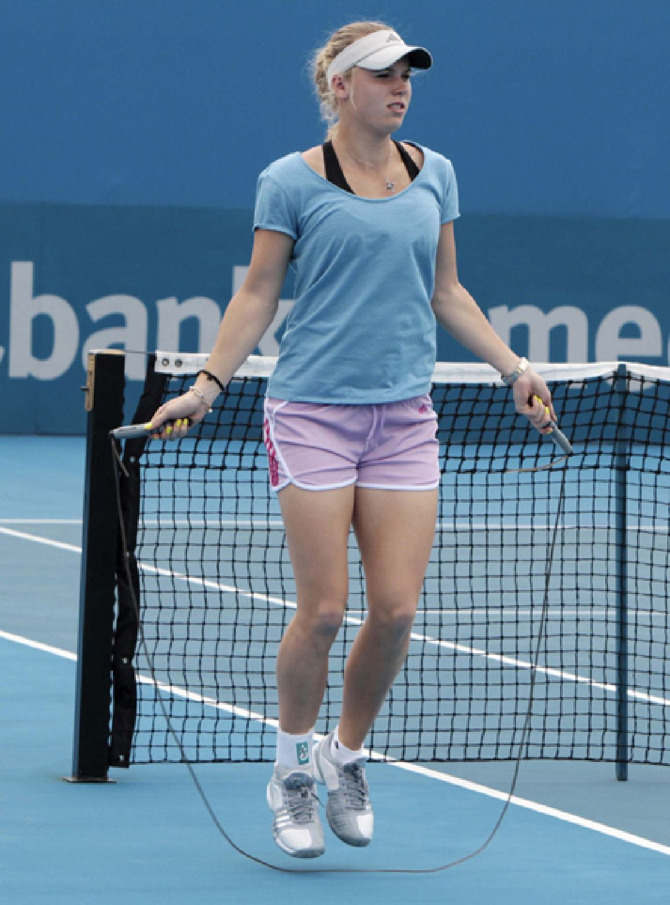
Gây xoáy cho quả bóng Các tay vợt quần vợt chuyên nghiệp hàng đầu ngày nay đều biết rằng then chốt của mỗi cú đánh là độ xoáy họ tạo ra cho quả bóng. Ngoài các lực trọng lực, lực cản và lực nâng, hướng và tốc độ xoáy của quả bóng ảnh hưởng đến cách nó bay qua không trung. Một quả bóng quần vợt có xoáy sẽ thay đổi quỹ đạo của nó qua không trung. Khác với một quả bóng không xoáy, quả bóng quần vợt đang xoáy sẽ lao xuống, lơ lửng hoặc cong. Tốc độ xoáy càng cao, tác động của nó lên chuyển động của quả bóng càng lớn. Độ xoáy cũng ảnh hưởng đến cách quả bóng nảy khỏi mặt sân và góc mà nó đi sau cú nảy.
Putting a Spin on the Ball Today’s top tennis professionals know that the key to each shot is the spin they put on the ball. In addition to the forces of gravity, drag, and lift, the direction and speed of a ball’s spin affect how it travels through the air. A tennis ball with spin will change its trajectory through the air. Unlike a ball with no spin, the spinning tennis ball will dive, float, or curve. The higher the rate of spin, the more impact it will have on the ball’s motion. Spin also affects how a ball bounces off the court and the angle it takes after the bounce.
Những tay vợt giỏi dùng độ xoáy để kiểm soát hướng họ đánh bóng đến, giống như cách họ dùng tốc độ bóng và góc nảy để thực hiện những cú đánh khó trả lại đối với đối thủ. Tay vợt tạo ra độ xoáy bằng cách điều chỉnh tốc độ, góc và độ nghiêng của vợt khi họ đánh bóng. Có ba loại xoáy chính được dùng trong quần vợt: xoáy lên, xoáy xuống và xoáy ngang.
Good players use spin to control where they hit the ball, just as they use ball speed and bounce angle to hit shots that are difficult for opponents to return. Players create spin by adjusting the speed, angle, and tilt of their racket when they hit the ball. There are three main types of spin used in tennis: topspin, backspin, and sidespin.
Xoáy lên làm quả bóng quay theo cùng chiều với chiều quả bóng đang di chuyển.
Topspin rotates the ball in the same direction that the ball is traveling.
Xoáy lên kết hợp với lực kéo xuống của trọng lực lên quả bóng. Nó khiến quả bóng cong xuống mặt sân nhanh hơn so với một quả bóng được đánh không xoáy.
Topspin combines with gravity’s downward pull on the ball. It causes the ball to curve down onto the court more quickly than a ball hit without spin.
Các tay vợt thích đánh bóng với xoáy lên, vì nhờ nó họ có thể đánh mạnh hơn mà quả bóng vẫn rơi gọn trong sân, gần vạch cuối sân (đường biên ở mỗi đầu của sân quần vợt). Một quả bóng đánh với xoáy lên sẽ chạm sân theo góc nhọn hơn, khiến nó nảy cao hơn. Độ xoáy cũng khiến quả bóng tăng tốc khi chạm sân và lao vọt về phía trước, khiến đối thủ có ít thời gian hơn để phản ứng lại cú đánh.
Tennis players like to hit balls with topspin, because it makes it easier for them to hit the ball hard and still get it in the baseline (the boundary line at either end of a tennis court). A ball hit with topspin will hit the court at a steeper angle, causing it to bounce higher. The spin also causes the ball to accelerate when it hits the court and shoot forward, giving an opponent less time to react to the shot.
C Serena Williams trả một cú đánh với vợt nghiêng về phía trước để tạo xoáy lên cho quả bóng.
M Serena Williams returns a shot with her racquet angled forward in order to put topspin on the ball.
Quả bóng cũng có thể được đánh với xoáy xuống hoặc xoáy ngang. Xoáy xuống làm quả bóng quay theo chiều ngược lại với chiều nó đang di chuyển. Một quả bóng đánh với xoáy xuống sẽ chống lại trọng lực. Xoáy xuống có xu hướng làm quả bóng bay lên hoặc lơ lửng lâu hơn một quả bóng được đánh không xoáy. Xoáy xuống cũng khiến quả bóng chậm lại. Đôi khi, nó thậm chí có thể nảy lùi ra sau khi chạm sân. Xoáy ngang xảy ra khi quả bóng quay sang phải hoặc trái quanh một trục thẳng đứng. Những quả bóng được đánh với xoáy ngang sẽ cong hoặc cắt sang phải hoặc trái khi di chuyển qua không trung. Để thực hiện một cú đánh có xoáy, tay vợt di chuyển vợt ngang qua mặt sau của quả bóng khi họ đánh. Khi mặt vợt chạm quả bóng, chúng trượt qua mặt sau của quả bóng và bám lấy nó. Các chuyển động trượt và bám kéo quả bóng theo cùng chiều mà mặt vợt đang di chuyển. Điều này khiến quả bóng quay theo chiều đó. Nếu vợt di chuyển lên trên khi đánh bóng, quả bóng quay về phía trước theo kiểu xoáy lên. Nếu đầu vợt di chuyển xuống dưới, thì quả bóng quay ngược ra sau theo kiểu xoáy xuống. Kéo vợt nghiêng sang một bên tạo ra xoáy ngang.
Balls can also be hit with backspin or sidespin. Backspin rotates the ball in the opposite direction it is traveling. A ball hit with backspin will fight against gravity. Backspin will tend to make a ball stay up or float longer than a ball hit without spin. Backspin also causes the ball to slow down. Sometimes, it may even jump backward when it hits the court. Sidespin occurs when a ball spins to the right or left around a vertical axis. Balls hit with sidespin will curve or slice to the right or left as they move through the air. To hit a shot with spin, players move their rackets across the back of the ball as they hit it. As the racket strings contact the ball, they slide across the back of the ball and grip it. The sliding and gripping motions pull the ball in the same direction that the strings are moving. This causes the ball to spin in that direction. If the racket moves upward when hitting the ball, the ball spins forward in a topspin. If the racket head moves downward, then the ball spins backwards in a backspin. Pulling the racket sideways generates a sidespin.
Dây thun và năng lượng ác cơ trên cơ thể người thường được so sánh với dây thun trong cách chúng tích trữ và giải phóng năng lượng.
Rubber Bands and Energy uscles are often compared to rubber bands in how they store and release energy.
Kéo giãn một sợi dây thun cần có công thực hiện. Điều này làm thay đổi cấu trúc của sợi dây thun và làm tăng thế năng tích trữ bên trong nó. Khi được thả ra, sợi dây thun giải phóng năng lượng và trở lại hình dạng ban đầu của nó. Một ví dụ khác là cung và tên.
Stretching a rubber band requires work. This changes the arrangement of the rubber band and increases the potential energy stored in it. When it is released, the rubber band releases the energy and restores itself to its original form. Another example is a bow and arrow.
Khi dây cung được kéo về phía sau, năng lượng được tích trữ trong dây. Khi được thả ra, năng lượng này làm mũi tên bắn vọt về phía trước. Dây cung trở lại hình dạng và vị trí ban đầu của nó. Các cơ trong cơ thể người hoạt động theo cách tương tự. Chúng giữ năng lượng đàn hồi khi bị căng giãn. Khi co lại, chúng giải phóng năng lượng đàn hồi và trở lại dạng ban đầu.
When the drawstring of a bow is pulled back, energy is stored in the string. When released, this energy makes the arrow shoot forward. The bow’s drawstring returns to its original form and position. The muscles of the human body work in a similar manner. They hold elastic energy when stretched. When contracted, they release the elastic energy and return to their original form.
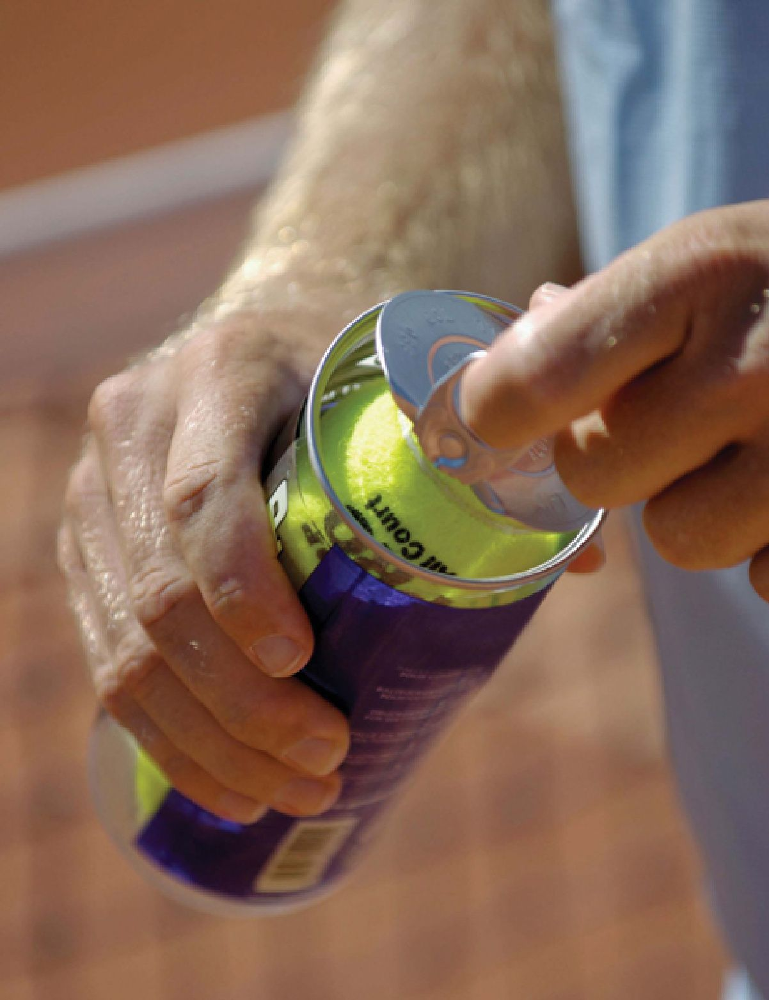
Lực Magnus Tại sao độ xoáy lại khiến quả bóng quần vợt di chuyển theo nhiều cách khác nhau? Lý do đã được phát hiện vào năm 1853 bởi nhà hóa học và vật lý học người Đức Heinrich Gustav Magnus, người đã phát hiện ra rằng khi một quả bóng di chuyển qua không khí, cách dòng không khí chảy xung quanh nó ảnh hưởng đến quỹ đạo của quả bóng. Nếu quả bóng không xoáy, thì không khí sẽ chảy xung quanh quả bóng với áp suất bằng nhau ở tất cả các phía và không làm thay đổi quỹ đạo của nó. Nếu quả bóng xoáy khi di chuyển qua không khí, thì nó tạo ra sự chênh lệch áp suất giữa hai bên của quả bóng. Điều này xảy ra vì quả bóng đang xoáy kéo theo một lượng không khí. Bên của quả bóng quay ngược với chiều bay của quả bóng thì di chuyển ngược dòng chảy của không khí xung quanh quả bóng. Điều này tạo ra lực cản lớn hơn ở bên đó của quả bóng, làm chậm nó lại và làm tăng áp suất lên nó. Đồng thời, bên đối diện của quả bóng quay cùng chiều với dòng không khí xung quanh quả bóng, nên nó chịu ít lực cản hơn, di chuyển nhanh hơn và có áp suất thấp hơn. Sự chênh lệch áp suất giữa hai bên khiến quả bóng cong về phía bên có áp suất thấp hơn. Nguyên lý này được gọi là hiệu ứng Magnus.
The Magnus Force Why does spin make a tennis ball move in different ways? The reason was discovered in 1853 by German chemist and physicist Heinrich Gustav Magnus, who found that as a ball moves through the air, the way the air flows around it affects the ball’s trajectory. If the ball is not spinning, then the air will flow around the ball with equal pressure on all sides and not change the ball’s trajectory. If the ball spins as it moves through the air, then it creates a pressure difference between its two sides. This occurs because the spinning ball drags some air around with it. The side of the ball that is spinning in the opposite direction of the ball’s flight moves against the flow of air around the ball. This creates more drag on that side of the ball, slowing it down, and increasing the pressure on it. At the same time, the opposite side of the ball is spinning in the same direction as the airflow around the ball, so it experiences less drag, moves faster, and has less pressure on it. The difference in pressure between the two sides causes the ball to curve in the direction of the lower pressure side. This principle is called the Magnus effect.
Trong quần vợt, hiệu ứng Magnus ảnh hưởng đến đường bay của một quả bóng được đánh có xoáy. Quả bóng đánh với xoáy lên quay về phía trước khi bay qua không khí. Phía trên của quả bóng di chuyển ngược dòng chảy của không khí xung quanh quả bóng. Phía dưới của quả bóng, tuy nhiên, quay cùng chiều với dòng không khí xung quanh quả bóng. Điều này tạo ra lực cản lớn hơn ở phía trên quả bóng và lực cản nhỏ hơn ở phía dưới của quả bóng. Lực cản làm không khí di chuyển chậm hơn ở phía trên quả bóng và nhanh hơn ở phía dưới quả bóng. Lớp không khí chảy chậm hơn ở phía trên tác động lực mạnh hơn lên quả bóng so với lớp không khí chảy nhanh hơn tác động lên phía dưới của quả bóng. Do hiệu ứng Magnus, lực mạnh hơn đẩy xuống lên một quả bóng đánh với xoáy lên khiến nó cong xuống hướng về mặt sân.
In tennis the Magnus effect affects the flight of a ball hit with spin. A ball hit with topspin spins forward as it travels through the air. The top of the ball moves against the flow of the air around the ball. The bottom of the ball, however, spins in the same direction as the airflow around the ball. This creates more drag on the top of the ball and less drag on the bottom of the ball. Drag makes the air move slower over the top of the ball and faster under the bottom. The slower-moving air over the top exerts more pressure on the ball than the faster moving air exerts upward on the bottom of the ball. Because of the Magnus effect, the heavier force pushing down on a ball hit with topspin causes it to curve down toward the court.
Quả bóng đánh với xoáy xuống chịu tác động ngược lại. Quả bóng quay từ dưới lên trên khi bay qua không khí. Phía dưới của quả bóng di chuyển ngược dòng chảy không khí, tạo ra lực cản lớn hơn. Dòng không khí chảy nhanh hơn ở phía trên quả bóng, vốn di chuyển cùng chiều với dòng không khí.
A ball hit with backspin experiences the opposite effect. The ball rotates from bottom to top as it travels through the air. The bottom of the ball travels against the flow of air, creating more drag. Airflow travels faster over the top of the ball, which travels in the same direction as the airflow.
Kết quả là, áp suất không khí bên dưới quả bóng lớn hơn, điều này khiến nó chống lại lực kéo xuống của trọng lực trong thời gian lâu hơn.
As a result, there is greater air pressure underneath the ball, which causes it to resist the downward pull of gravity for a longer period.
Thuật ngữ chỉ điểm số 0 trong quần vợt là “love” (điểm 0).
The term for a score of zero in tennis is love.
Cú đánh chạm đất Để thắng một trận đấu, tay vợt quần vợt phải biết thực hiện những cú đánh nền xuất sắc, tức là những cú vung vợt thuận tay hoặc trái tay vào quả bóng đã nảy lên từ mặt đất. Cú đánh chạm đất là phần không thể thiếu trong môn quần vợt.
Ground Strokes To win a match, a tennis player must be able to hit great ground strokes, which are either forehand or backhand swings of the racket at a ball that has bounced from the ground. Ground strokes are integral to the game of tennis.
Tay vợt đánh cú đánh nền để trả lại cú giao bóng của đối thủ. Những tay vợt thi đấu cạnh tranh cần rất nhiều năng lượng để đánh cú đánh nền hiệu quả, và họ phải truyền năng lượng đó một cách hiệu quả từ cơ bắp sang quả bóng.
Players hit ground strokes to return their opponents’ serve. Competitive tennis players need a lot of energy to hit ground strokes effectively, and they must efficiently transfer that energy from their muscles to the ball.
Một cậu bé vung vợt để trả một cú đánh, dùng chuỗi động học của các cơ dọc theo chiều dài cơ thể để tạo ra năng lượng và sức mạnh cần thiết để đánh vào quả bóng.
A boy winds up to return a shot using the kinetic chain of muscles through the length of his body in order to generate the energy and power needed to strike the ball.
Tay vợt truyền năng lượng từ cơ thể của mình sang quả bóng thông qua vợt quần vợt. Năng lượng dùng cho một cú đánh có thể đến từ năng lượng tích trữ (năng lượng đàn hồi) hoặc từ động năng (năng lượng của chuyển động). Năng lượng đàn hồi được tích trữ trong các cơ và gân của tay vợt khi căng cứng. Động năng là năng lượng mà cơ thể thu được thông qua chuyển động trong công việc cần thiết để vung vợt và đưa quả bóng từ trạng thái đứng yên đến tốc độ mong muốn.
A player transfers energy from his or her body to the ball through the tennis racket. The energy used in a shot can come from stored energy (elastic energy) or from kinetic energy (energy from movement). Elastic energy is stored in the player’s muscles and tendons under tension. Kinetic energy is the energy the body obtains through the motion involved in the work necessary to swing the racket and make the ball move from a resting position to its desired speed.
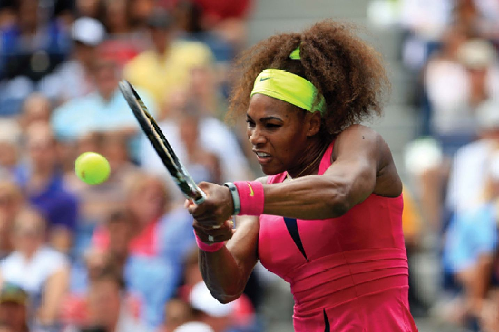
Cơ thể người giống như một chuỗi, với các bộ phận khác nhau liên kết với nhau. Ví dụ, bàn chân liên kết với cẳng chân qua khớp mắt cá chân, bộ phận này K liên kết với đùi qua khớp gối, và cứ tiếp tục như vậy. Khi chơi quần vợt, các cơ bụng, cẳng tay, ngực, hông và chân của tay vợt khi được căng giãn sẽ giữ năng lượng đàn hồi. Bàn chân của tay vợt đẩy xuống mặt sân tạo ra các lực phản lực từ mặt đất. Các lực này được truyền lần lượt qua chân, hông, thân, vai, cánh tay và vợt. Năng lượng đàn hồi di chuyển từ một đoạn cơ thể sang đoạn tiếp theo. Mỗi chuyển động trong chuỗi dựa trên động tác trước đó, cùng nhau tạo ra tốc độ của vợt. Chuỗi liên kết này, được gọi là chuỗi động học, tạo ra lực đằng sau cú vung vợt của tay vợt. Nếu bất kì phần nào của chuỗi không đủ mạnh hoặc đủ dẻo dai, thì năng lượng đàn hồi sẽ không truyền hiệu quả qua chuỗi. Điều này sẽ dẫn đến ít sức mạnh hơn khi vợt tiếp xúc với quả bóng.
The human body is like a chain, with different body parts linked together. For example, the foot is linked by the ankle joint to the leg, which T is linked by the knee joint to the thigh, and so on. When playing tennis, the stretched muscles of the player’s abdomen, forearm, chest, hip, and leg hold elastic energy. A tennis player’s feet pushing on the court builds ground-reaction forces. These forces are transferred sequentially through the legs, hips, trunk, shoulder, arm, and racket. Elastic energy moves from one body segment to the next. Each movement in the chain builds upon the previous motion, combining to generate the racket speed. This linked chain, called the kinetic chain, provides the force behind a player’s swing. If any part of the chain is not strong or flexible enough, then the elastic energy will not transfer efficiently through the chain. This will result in less power when the racket strikes the ball.
Việc truyền năng lượng qua chuỗi động học liên quan đến chu kỳ căng-rút của các cơ tham gia thực hiện cú đánh. Chu kỳ căng-rút bắt đầu với việc căng chủ động của cơ, ngay sau đó là một lần co cơ mạnh mẽ. Chẳng hạn, trong một cú đánh thuận tay, các cơ ngực và vai được căng hoặc nạp lực khi thân người xoay vào cú đánh. Độ căng chủ động của các cơ này tích trữ năng lượng đàn hồi trong chúng và trong các gân xung quanh. Năng lượng được giải phóng khi cơ bật ngược hoặc đàn hồi trở lại. Nếu tay vợt chọn đúng thời điểm vung vợt, năng lượng này được truyền qua vợt sang quả bóng, đưa nó vượt qua lưới với sức mạnh và tốc độ. Đôi khi, tay vợt không chọn đúng thời điểm vung vợt và việc truyền năng lượng không hiệu quả. Năng lượng đàn hồi tích trữ trong các cơ biến mất nhanh chóng khi các cơ đàn hồi trở lại hình dạng ban đầu.
The transfer of energy through the kinetic chain involves the stretch-shortening cycle of the muscles involved in the hitting the shot. The stretch-shortening cycle starts with the active stretching of the muscle, followed immediately by a forceful shortening of the muscle. For example, during a forehand shot, the chest and shoulder muscles are stretched or loaded as the torso rotates into the shot. The active stretch of these muscles stores elastic energy in them and the surrounding tendons. The energy is released as the muscle snaps or rebounds. If the player times the swing correctly, this energy is transferred through the racket to the ball, sending it back over the net with power and speed. Sometimes, a player does not time his or her swing effectively and the transfer of energy is not efficient. Stored elastic energy in muscles disappears quickly once the muscles rebound to their original form.
Vì vậy, nếu tay vợt vung quá sớm hoặc quá muộn, năng lượng đàn hồi sẽ không truyền hiệu quả sang quả bóng. Peter Sallay, một bác sĩ phẫu thuật chỉnh hình điều trị các vận động viên quần vợt, giải thích, Ngay cả một tích tắc do dự giữa các chuyển động của các đoạn liên kết trong một chuỗi cũng có thể làm giảm đáng kể việc truyền năng lượng. Một ví dụ đời thường là cái roi da. Nếu bạn giơ cao cái roi và với một động tác uyển chuyển bật mạnh cánh tay xuống, đầu của cái roi sẽ vang lên. Nếu bạn thực hiện cùng động tác đó nhưng do dự trong một tích tắc thì năng lượng sẽ biến mất và cái roi sẽ mềm nhũn như một sợi mì.12 Năng lượng chủ động và năng lượng tích trữ hái niệm năng lượng giúp mô tả cách các vật cư xử theo cách chúng vốn có. Tất cả các vật đều có động năng và thế năng. Nếu một vật đang chuyển động, nó có động năng. Nếu có lực tác động lên vật đó, động năng của nó thay đổi.
Therefore, if a player is too early or late in their swing, the elastic energy will not transfer efficiently to the ball. Peter Sallay, an orthopedic surgeon who treats tennis athletes, explains, Even a millisecond hesitation between the movements of the linked segments in a chain can result in a dramatic decrease in energy transfer. An everyday example is the bull whip. If you raise the whip and in a fluid motion snap your arm downwards the end of the whip will crack. If you do the same motion but hesitate for a split second the energy is gone and the whip will behave like a limp noodle.12 Active Versus Stored Energy he concept of energy helps describe how objects behave the way they do. All objects have kinetic energy and potential energy. If an object is moving, it has kinetic energy. If force is applied to that object, its kinetic energy changes.
Thế năng được tích trữ trong một vật. Chẳng hạn, một quả bóng trên mặt đất có thế năng tích trữ bên trong nó. Để nhặt quả bóng lên, một người tác dụng lực và nâng nó lên. Công việc này thêm năng lượng vào quả bóng và được tích trữ trong quả bóng dưới dạng thế năng. Đó là lý do tại sao một quả bóng được giữ ở độ cao 2 feet (0,6m) trên không có nhiều thế năng hơn một quả bóng được giữ cao 1 inch (2,5cm) so với mặt đất. Khi được thả ra, quả bóng ở cao hơn sẽ chạm đất với lực mạnh hơn quả bóng ở thấp hơn.
Potential energy is stored in an object. For an example, a ball on the ground has potential energy stored in it. To pick up the ball, a person applies a force and lifts it. This work adds energy to the ball and is stored in the ball as potential energy. That is why a ball held 2 feet (0.6m) in the air has more potential energy than a ball held 1 inch (2.5cm) off the ground. When released, the higher ball will hit the ground with more force than the lower ball.
Nếu một tay vợt cố đánh quả bóng mạnh hết sức có thể mà không sử dụng cơ sinh học đúng cách hoặc động tác chuẩn, họ sẽ không truyền năng lượng hiệu quả sang quả bóng. Theo Sallay, các tay vợt quần vợt nghiệp dư thường mắc lỗi này khi đánh bóng. Một lỗi điển hình xảy ra khi tay vợt chỉ xoay tối thiểu phần thân hoặc hông và phụ thuộc vào vai, khuỷu tay và cánh tay để tạo ra tốc độ và sức mạnh cho cú đánh. Sallay giải thích, Trong ví dụ này, người ta sử dụng cơ sinh học không hiệu quả. Các liên kết bị tách rời và ít khả năng tạo ra hiệu ứng mong muốn. Tốc độ đầu vợt, và do đó vận tốc quả bóng, sẽ bị ảnh hưởng tiêu cực. Hơn nữa, trình tự này có thể dẫn đến chấn thương. Gần như không có sự sử dụng năng lượng đàn hồi từ sự xoay của thân và hông và từ việc uốn gối, nên tay vợt đang “đánh bóng chỉ bằng tay” [vung vợt độc lập với phần còn lại của cơ thể], điều này có thể dẫn đến chấn thương cơ do căng thẳng.13 Khoa học của cú giao bóng Cú giao bóng là một trong những cú đánh quan trọng nhất mà tay vợt thực hiện. Một khi tay vợt thành thạo cú giao bóng, anh ấy có thể tận dụng nó để giành lợi thế trong một trận đấu.
If a player tries to hit the ball as hard as he or she can, without using proper biomechanics or form, they will not effectively transfer energy to the ball. According to Sallay, recreational tennis players often make this mistake when hitting the ball. A typical mistake occurs when a player uses minimal torso or hip rotation and relies on the shoulder, elbow, and arm to generate speed and power for a shot. Sallay explains, In this example there is inefficient use of biomechanics. The linkages are disjointed and are less likely to produce the desired effect. Racquet head speed, thus ball velocity will be negatively impacted. Furthermore, this sequence leads to potential injury. There is hardly any use of the elastic energy from trunk and hip rotation and knee bend so the player is “arming the ball” [swinging the ball independently of the rest of the body] which can lead to muscle strain injury.13 The Science of the Serve The tennis serve is one of the most important shots a player makes. Once a player masters the serve, he can use it to his advantage in a match.
Các tay vợt chuyên nghiệp, như Serena Williams và Andy Roddick, sử dụng cú giao bóng như một vũ khí tấn công. Họ thực hiện những cú giao bóng sấm sét để giành lợi thế trước đối thủ và ghi điểm. Khả năng trả lại một cú giao bóng đánh mạnh cũng là một phần quan trọng để thắng một trận đấu.
Professional players, such as Serena Williams and Andy Roddick, use their serve as an offensive weapon. They hit killer serves to gain advantage over an opponent and win points. The ability to return a hard-hit serve is also a critical part of winning a match.
Không chỉ quan trọng, cú giao bóng còn là một trong những cú đánh phức tạp nhất trong quần vợt. Khi giao bóng, cơ thể tay vợt xoắn và xoay tròn, các cơ căng ra rồi co lại. Các bước này truyền năng lượng từ cơ thể sang quả bóng, đạt đỉnh là một quả bóng phóng đi với tốc độ khó tin vượt qua lưới. Roddick có cú giao bóng nhanh nhất thế giới. Nó từng được đo là 155 dặm một giờ (249 km/h). Để đạt được tốc độ đó, Roddick sử dụng không chỉ cánh tay để tạo lực cho quả bóng. Anh ấy đã học cách truyền năng lượng hiệu quả qua chuỗi động học từ các nhóm cơ lớn ở chân, bụng và thân. “(Roddick) dùng nhiều chân và nhiều (cơ thể), và đó là nơi anh ấy có được sức mạnh,”14 Brad Gilbert, cựu huấn luyện viên của Roddick và là nhà phân tích của ESPN, nói. Để bắt đầu một cú giao bóng, tay vợt ném quả bóng lên không trung. Sau đó người đó chuyển vợt vào động tác vung lên. Hầu hết tay vợt bắt đầu với vợt ở phía trước người, rồi vung nó xuống về phía mặt đất, sau đó lên phía sau bả vai và qua đầu, rồi lại đánh xuống một lần nữa. Tại thời điểm vợt tiếp xúc với quả bóng, nó đang hướng về phía mà tay vợt muốn quả bóng bay đến. Khi đầu vợt chuyển động về phía trước và tiếp xúc quả bóng, nó cũng đi ngang qua mặt sau của quả bóng và khiến nó xoáy. Trong động tác vung, tay vợt đẩy chân xuống mặt sân. Các lực phản lực từ mặt đất cũng như sự căng giãn các cơ ở chân, hông, thân và vai tích lũy năng lượng đàn hồi.
Not only are serves important, but they are also some of the most complicated shots in tennis. During a serve, the player’s body twists and rotates and the muscles stretch and contract. These steps transfer energy from the body to the ball, culminating in a ball that rockets at incredible speeds over the net. Roddick has the world’s fastest tennis serve. It was once clocked at 155 miles per hour (249kph). To get that speed, Roddick uses more than his arm to power the ball. He has learned how to transfer energy efficiently through the kinetic chain from his large muscle groups in the legs, abdomen, and torso. “(Roddick is) using so much legs and so much (body), and that’s where he gets his power,”14 says Brad Gilbert, Roddick’s former coach and an ESPN analyst. To begin a serve, a player tosses the ball into the air. He or she then moves the racket into a windup. Most players start with the racket in front of them and then they swing it down toward the ground, then up behind the shoulder and over the head, and then back down again. At the point the racket strikes the ball, it is pointing in the direction that the player wants the ball to travel. As the racket head moves forward and strikes the ball, it also moves across the back of the ball and causes it to spin. During the windup, the player presses his or her feet against the court. Ground-reaction forces build up elastic energy as do the stretching of muscles in the legs, hips, torso, and shoulders.
Qua động tác vung, năng lượng đàn hồi được truyền từ đoạn này sang đoạn khác trong cơ thể, từ chân lên cánh tay và cuối cùng là vợt và quả bóng. “Những đóng góp này thay đổi tùy theo từng người, nhưng các dữ liệu cho thấy tầm quan trọng rõ ràng của thân, sự xoay vào trong của vai và sự gập cổ tay trong cú vung đánh tiếp xúc,”15 Bruce Elliott, giáo sư tại trường Đại học Tây Australia, người đã nghiên cứu vật lý học của quần vợt, cho biết. Đưa cú giao bóng vào sân Khi một tay vợt thực hiện cú giao bóng, quả bóng phải vượt qua lưới mà không chạm vào nó và rơi vào ô giao bóng theo đường chéo, tức là ô đối diện chéo góc ở phía sân của đối thủ. Nếu quả bóng chạm lưới hoặc rơi ngoài ô, cú giao bóng không được tính và tay vợt giao bóng lại. Trong khi việc giao bóng với tốc độ và sức mạnh cũng quan trọng, sự kiểm soát và độ chính xác khi đặt bóng cũng rất quan trọng để hoàn thành một cú giao bóng tốt.
Through the windup, the elastic energy transfers from segment to segment in the body from the legs up to the arm and, eventually, the racket and ball. “These contributions vary from person to person, but the data shows the clear importance of the trunk, shoulder internal rotation and wrist flexion in the swing to impact,”15 says Bruce Elliott, a professor at the University of Western Australia who has studied the physics of tennis. Getting the Serve In Once a player hits a serve, the ball must clear the net without touching it and drop into the cross-court service box, which is the diagonally opposite box on the opponent’s side of the court. If the ball touches the net or lands outside the box, the serve does not count and the player serves again. While serving the ball with speed and power is important, control and placement are also critical to completing a good serve.
Khi một tay vợt thực hiện cú giao bóng, có một góc tối thiểu mà quả bóng phải bay theo để vượt qua lưới. Nếu quả bóng bay ở góc nhỏ hơn góc này, thì nó sẽ đập vào lưới. Ngoài ra, có một góc tối đa mà quả bóng có thể đạt để không nảy ra ngoài vạch giao bóng. Nếu góc của quả bóng vượt quá góc tối đa, nó sẽ bay ngoài vạch cuối sân và bị coi là ngoài.
When a player hits a serve, there is a minimum angle that the ball must travel in order to clear the net. If the ball travels at an angle less than this, then it will hit the net. In addition, there is a maximum angle that the ball can have so that it will not bounce beyond the service line. If the ball’s angle exceeds the maximum, it will travel beyond the baseline and be called out.
SÂN QUẦN VỢT
Khi giao bóng, quả bóng quần vợt phải vượt qua lưới mà không chạm vào nó và rơi vào ô đối diện chéo góc ở phía sân của đối thủ. Nếu quả bóng đập vào lưới hoặc rơi ngoài ô, cú giao bóng không được tính.
On the serve, the tennis ball must clear the net without touching it and drop into the diagonally opposite box on the opponent’s side of the court. If the ball hits the net or lands outside the box, the serve is not good.
Khoảng cách giữa góc tối thiểu và góc tối đa này được gọi là cửa sổ chấp nhận. Tay vợt phải đưa bóng đi xuyên qua cửa sổ chấp nhận p p y g p để cú giao bóng được tính. Nếu cửa sổ rộng, thì quả bóng sẽ dễ vào sân hơn. Nếu nó hẹp, thì tay vợt dễ giao bóng ra ngoài vạch giao bóng và sẽ bị báo lỗi. Độ rộng của cửa sổ phụ thuộc vào nhiều yếu tố, bao gồm tốc độ của quả bóng, độ cao tại thời điểm bóng được đánh, độ xoáy của quả bóng, và vị trí của người giao bóng trên sân.
This minimum-maximum angle range is called the window of acceptance. A player must hit the ball through the window of acceptance in p p y g p order for a serve to be good. If the window is large, then the ball is more likely to go in. If it is small, then the player is more likely to serve the ball outside the service line and it will be called a foul. The size of the window depends on several factors, including the speed of the ball, the height at which the ball is hit, the ball’s spin, and the server’s location on the court.
Khi quả bóng bay nhanh hơn, cửa sổ chấp nhận lại thu hẹp. Đó là lý do tại sao việc thực hiện thành công một cú giao bóng 120 dặm một giờ (193 km/h) đòi hỏi độ chính xác phi thường. Một quả bóng chậm hơn có cửa sổ chấp nhận rộng hơn, vì lực hút của trọng lực có thể tác động dễ hơn lên nó, kéo nó rơi xuống ô giao bóng, tức là ô ở phía bên kia lưới mà người giao bóng phải đánh bóng vào.
As the ball travels faster, the window of acceptance shrinks. That is why it takes incredible precision to deliver a 120-mile-per-hour (193kph) serve successfully. A slower ball has a larger window of acceptance, because the force of gravity can more easily act upon it, pulling it down into the service box, which is the box on the other side of the net into which the server has to hit the ball.
Trong khi nhiều tay vợt ném bóng lên không trung khi giao bóng, độ cao họ ném bóng lại thay đổi tùy theo từng tay vợt. Thời điểm họ đánh bóng trong lúc ném cũng thay đổi. Một số người ném bóng cao, trong khi số khác ném thấp.
While many players toss the ball into the air during a serve, the height they toss the ball varies from player to player. When they hit the ball during the toss also varies. Some throw the ball high, while others toss it low.
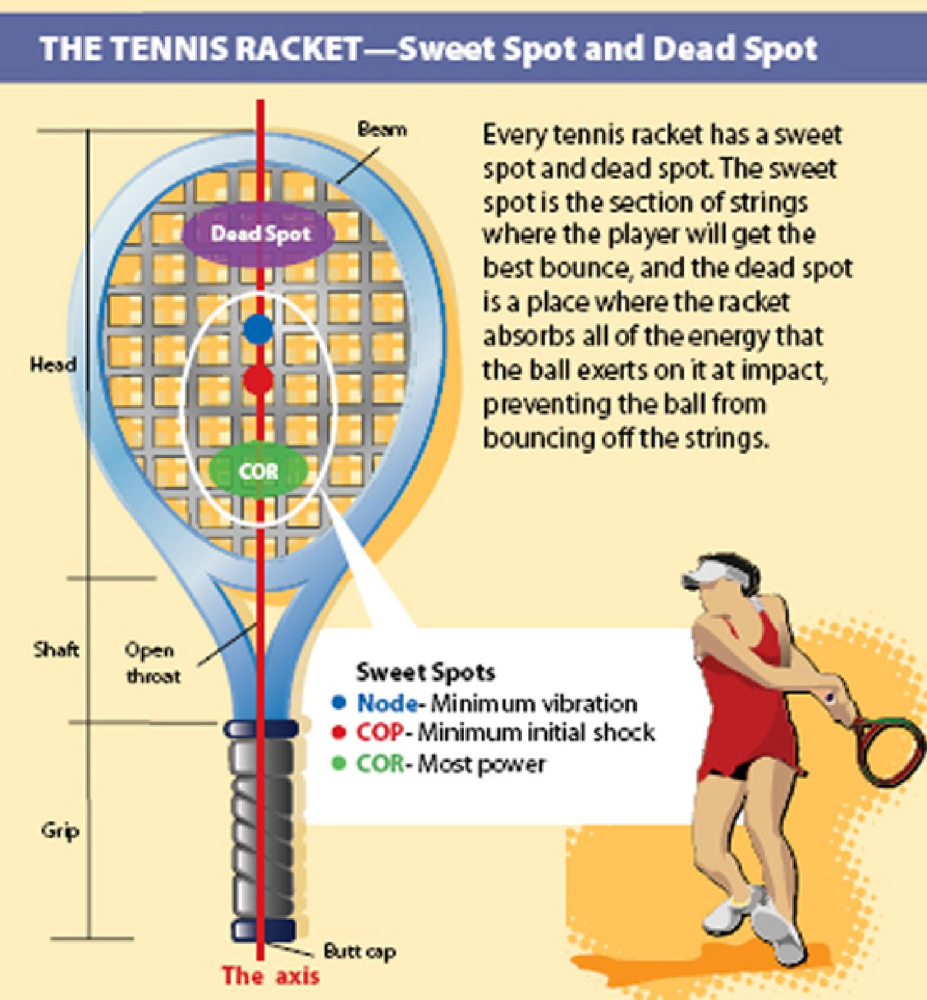
Một số tay vợt đánh bóng gần như ngay khi vừa thả bóng, trong khi những người khác sẽ chờ một hoặc hai giây khi nó rơi xuống. Vật lý đóng một vai trò trong cách quả bóng phản ứng với các kiểu ném và các cách đánh khác nhau.
Some players hit the ball almost as soon as they release it, while others will wait a second or two as it falls. Physics plays a role in how the ball will react to the different types of tosses and strikes.
Những cú giao bóng đánh bóng ở điểm cao hơn so với mặt đất có cửa sổ chấp nhận rộng hơn. Nhiều tay vợt với tay lên trên, nhảy lên, và duỗi cơ thể khi thực hiện cú giao bóng. Điều này giúp họ đánh bóng ở điểm cao hơn, làm tăng cửa sổ chấp nhận. Độ cao tiếp xúc cũng là lý do tại sao những tay vợt cao hơn có lợi thế hơn những tay vợt thấp hơn. Họ có thể dùng chiều cao của mình để giao bóng ở điểm cao hơn, điều này sẽ cho tay vợt cao hơn cơ hội tốt hơn để đưa bóng vào ô giao bóng. Đó cũng là lý do tại sao nhiều tay vợt nhảy lên khi đánh cú giao bóng, giúp họ đánh bóng ở khoảng cách cao nhất có thể so với mặt đất.
Serves that hit balls high off the ground have a larger acceptance window. Many players reach overhand, jump, and extend their body when hitting a serve. This helps them hit the ball at a higher point, increasing the acceptance window. Impact height is also a reason why taller players have an advantage over shorter players. They can use their height to hit a serve at a higher point, which will give the taller player a better chance of getting the ball in the service box. This is also why many players jump as they hit a serve, enabling them to strike the ball at the highest possible distance from the ground.
Ngoài ra, một quả bóng được giao với xoáy lên cũng có phạm vi góc giao bóng tốt rộng hơn. Xoáy lên trong cú giao bóng tạo ra vùng áp suất thấp bên dưới quả bóng, khiến nó lao vọt xuống ô giao bóng. Một cách mà tay vợt tăng xoáy lên cho cú giao bóng là ném bóng cao hơn trong động tác vung. Những quả bóng được ném cao hơn có nhiều thời gian hơn để tăng tốc khi rơi. Bóng rơi càng nhanh khi được đánh, nó càng có nhiều xoáy. Vì vậy, bóng được ném càng cao, bóng rơi càng nhanh và càng có nhiều xoáy. Ở
In addition, a ball served with topspin also has a larger range of good serve angles. Topspin on the serve creates an area of low pressure underneath the ball, which makes it dive down into the service court. One way players increase topspin on serves is to toss the ball higher during their windup. Balls tossed higher have more time to accelerate as they fall. The faster the ball is falling when it is hit, the more spin it will have. Therefore, the higher the toss, the faster the ball falls and the more spin it will have. A
CHƯƠNG 6
Tâm Lý Học Của Quần Vợt đẳng cấp cao nhất của quần vợt, nhiều tay vợt có đủ sức mạnh thể chất và kĩ năng để thành công. Vậy điều gì phân biệt người thắng với kẻ thua?
The Psychology of Tennis t the highest levels of tennis, many players have the physical strength and skills to succeed. So what separates the winners from the losers?
Những người thắng sở hữu khả năng thực hiện các cú đánh dưới áp lực của thi đấu. Để thành công, tay vợt phải mang sự tập trung và tự tin đến sân quần vợt. Họ phải có khả năng hồi phục sau sai lầm và không bao giờ để đối thủ cảm nhận thấy điểm yếu. Giữa một biển cả cạnh tranh, các kĩ năng tinh thần vững mạnh có thể giúp một tay vợt vượt trội hơn đối thủ. Các kĩ năng tinh thần thường là điểm khác biệt quyết định tay vợt nào thắng những trận đấu quan trọng và tay vợt nào sụp đổ dưới áp lực.
The winners possess the ability to execute physical shots under the pressure of competition. To succeed, players must bring focus and self-confidence to the tennis court. They must be able to recover from mistakes and never let an opponent sense a weakness. In a sea of competition, strong mental skills can set a player apart from his or her opponent. Mental skills are often the difference that determines which players win critical matches and which players fall apart under pressure.
Tay vợt chuyên nghiệp người Serbia Novak Djokovic cho biết sự bền bỉ về tinh thần đã giúp anh ấy thắng những trận đấu khó khăn, trong đó có chiến thắng tại Giải Ý mở rộng năm 2011 trước ngôi sao quần vợt Rafael Nadal. “Các trận đấu giữa những tay vợt hàng đầu luôn rất sát nhau, và, các bạn biết đấy, rõ ràng ai cũng đánh bóng hay. Ai cũng sung sức và luyện tập hàng giờ mỗi ngày. Nhưng, nếu bạn có khả năng tinh thần để giữ vững, kiên nhẫn và tự tin, và chỉ cần tin tưởng đúng lúc, thì bạn sẽ giành chiến thắng, bạn biết đấy. Đó là điều tạo nên sự khác biệt,”16 Djokovic nói.
Serbian professional tennis player Novak Djokovic says that mental toughness has helped him win tough matches, including a victory in the 2011 Italian Open over tennis star Rafael Nadal. “Matches between the top players are always very close, and, you know, obviously everybody’s hitting the ball well. Everybody is physically fit and practicing hours and hours every day. But, if you have the mental ability to stay strong, stay patient and confident and just have belief in the right moments, then you get a win, you know. So that’s what makes the difference,”16 says Djokovic.
Một trận đấu của tinh thần Trong quần vợt, những tay vợt có thể hình, kĩ năng, sức mạnh, sự nhanh nhẹn và tốc độ sẽ có lợi thế hơn đối thủ. Tuy nhiên, môn quần vợt còn phụ thuộc vào khả năng tinh thần nhiều như khả năng thể chất. Ngay cả khi một tay vợt mạnh về thể chất, anh ấy hay cô ấy vẫn có thể thua một đối thủ mạnh hơn về tinh thần. Điều này giải thích tại sao một tay vợt nghiệp dư bốn mươi tuổi có thể đánh bại một tay vợt hai mươi tuổi đánh bóng mạnh hơn và chạy nhanh hơn khắp sân. Tay vợt bốn mươi tuổi có lẽ có kỉ luật hơn, bình tĩnh hơn, và tập trung hơn trong trận đấu, dùng các kĩ năng tinh thần của mình để giành lợi thế.
A Mental Game In tennis players with size, skill, strength, agility, and speed have an edge over their opponents. Yet the game of tennis is just as much about mental ability as it is about physical ability. Even if a player is physically strong, he or she may lose against an opponent who is mentally stronger. This explains why a forty-year-old recreational player can beat a twenty-year-old who hits harder shots and runs faster across the court. The forty-year-old is likely more disciplined, calm, and focused during the match, using his mental skills to his advantage.
Tay vợt vô địch Kim Clijsters từng nhận xét rằng khía cạnh tinh thần của quần vợt cũng là một yếu tố quan trọng đối với thành công của tay vợt, ngang bằng với lối chơi thể chất.
Champion player Kim Clijsters has commented that the mental aspect of tennis is as important a factor in a player’s success as the physical game.
Các kĩ năng tinh thần giúp vận động viên kiểm soát tâm trí khi thi đấu hoặc biểu diễn, cho phép họ điều chỉnh hành động, phản ứng, suy nghĩ và cảm xúc, đồng thời dùng chúng để nâng cao thành tích. Cảm xúc và dùng chúng để nâng cao thành tích. Các kĩ năng tinh thần có thể giúp tay vợt cải thiện sự tự tin, khả năng tập trung và sự chú ý; đối phó với áp lực và nghịch cảnh; đồng thời phản ứng tích cực trước những sai lầm.
Mental skills help athletes control their minds as they compete or perform, allowing them to adjust their actions, reactions, thoughts, and feelings and use them to improve their performance. Mental skills may help a player improve self-confidence, focus, and concentration; deal with stress and adversity; and react positively to errors.
Những tay vợt sở hữu kĩ năng tinh thần vững vàng và một lối chơi tinh thần mạnh mẽ sẽ có ưu thế hơn đối thủ. John H. Sklare, một chuyên gia quần vợt được chứng nhận bởi USPTA (Hiệp hội Quần Vợt Chuyên Nghiệp Hoa Kỳ) và là tiến sĩ tâm lý giáo dục, giải thích rằng, T óm lại, thành công trên sân quần vợt đòi hỏi nhiều hơn chỉ ở sức mạnh thể chất và việc thực hiện các cú đánh mỗi tuần. Tôi biết quá nhiều người đánh bóng như chuyên gia trong lúc tập luyện và khởi động, nhưng, một khi trận đấu bắt đầu, một tâm thế hoàn toàn mới xuất hiện và một đội hình dường như khác hẳn bước ra sân. Tại sao rất nhiều người trong các bạn không tìm thấy chút nào lối chơi của mình khi trận đấu bắt đầu? Theo tôi, đó là vì quần vợt lớn lao hơn nhiều so với một môn thể thao thuần túy thể chất.
Players who have strong mental skills and a strong mental tennis game will have an advantage over their opponents. John H. Sklare, a USPTA (United States Professional Tennis Association) certified tennis professional and doctor of educational psychology, explains, B In a nutshell, success on the tennis court takes more than just physical prowess and weekly stroke production. I know far too many people who hit like a pro during practice and warm up but, once the match starts, a whole new mindset emerges and an entirely different team seems to take the field. Why is it that so many of you can’t find an inkling of your game once the match starts? In my opinion, it’s because tennis is much more than a mere physical sport.
Nó cũng là một cuộc chơi tinh thần rất lớn. Chính những người rèn luyện và mài giũa cả kĩ năng tinh thần lẫn thể chất mới thường xuyên đứng về phía chiến thắng nhiều nhất.17 Các tay vợt hàng đầu mài sắc kĩ năng tinh thần và dùng kinh nghiệm để giúp họ dự đoán, chuẩn bị và đối mặt với thử thách. Kim Clijsters, một tay vợt chuyên nghiệp người Bỉ giải nghệ năm 2012, cho biết những trận đấu cam go đã thử thách sức mạnh tinh thần, thể chất và sự bền bỉ của cô xảy ra thường xuyên. “Vì vậy áp lực luôn hiện diện. Đó là một phần của môn thể thao, và cuộc chơi tinh thần cũng vô cùng quan trọng,”18 cô nói.
It is also very much a mental game as well. It is those who practice and hone both mental and physical skills that find themselves on the winning side most often.17 The top tennis players sharpen their mental skills and use their experiences to help them anticipate, prepare for, and meet challenges. Kim Clijsters, a Belgian professional tennis player who retired in 2012, says that challenging matches that tested her mental and physical strength and stamina occurred regularly. “So the stress will always be there. It’s a part of the sport, and the mental game is just so important, as well,”18 she says.
Cảm Xúc Trên Sân Quần vợt là môn thể thao đầy cảm xúc mãnh liệt. Nó đặt một tay vợt đối đầu với một người khác trong một trận chiến cá nhân căng thẳng. Mỗi trận đấu là cuộc chiến ý chí mà chỉ một người chiến thắng sẽ lộ diện. Justin Gimelstob, một người dẫn chương trình và cựu tay vợt chuyên nghiệp người Mỹ, nói rằng, Lộ Trình Đến Chiến Thắng: Kế Hoạch Trận Đấu Trước khi bắt đầu một trận đấu, các tay vợt hàng đầu lên kế hoạch tiếp cận trận đấu ra sao. Họ nghiên cứu đối thủ và tìm hiểu điểm mạnh, điểm yếu. Họ cũng tự đánh giá điểm mạnh, điểm yếu của mình. Sau đó họ dùng thông tin đó để xây dựng một kế hoạch trận đấu giành chiến thắng.
Emotions on the Court Tennis is a highly emotional game. It pits one player against another in a tense personal battle. Each match is a battle of wills where only one winner will emerge. Justin Gimelstob, a broadcaster and a retired American professional tennis player, says, Roadmap to Victory: The Game Plan efore the start of a game, top tennis players plan how they will approach the match. They study their opponents and learn their strengths and weaknesses. They also evaluate their own strengths and weaknesses. Then they use that information to develop a winning game plan.
Kế hoạch trận đấu là lộ trình để tay vợt dùng trong trận đấu, phát huy tối đa điểm mạnh và hạn chế điểm yếu. Đồng thời, kế hoạch trận đấu nên tận dụng điểm yếu của đối thủ và hạn chế cơ hội dùng điểm mạnh của họ. Ví dụ, nếu một đối thủ có xu hướng chơi hung hãn ở vạch cuối sân, thì tay vợt nên đánh nhiều bóng ngắn hơn để ép đối thủ mắc lỗi. Nếu đối thủ có cú thuận tay xuất sắc nhưng cú trái tay yếu hơn, thì một kế hoạch trận đấu tốt tập trung gửi những quả bóng buộc đối thủ phải dùng cú trái tay.
A game plan is a road map for a player to use in a match that maximizes his or her strengths and minimizes weaknesses. At the same time, the game plan should take advantage of opponents’ weaknesses and limit their opportunities to use their strengths. For example, if an opponent tends to be aggressive at the baseline, then a player should hit more short balls to force the opponent into errors. If an opponent has a great forehand shot but a weaker backhand, then a good game plan concentrates on sending balls that force the opponent to use his backhand.
Tôi khẳng định quần vợt là môn thể thao khắc nghiệt nhất thế giới. Nó đầy cảm xúc từ bản chất, và là môn thể thao duy nhất đòi hỏi nhiều loại kĩ năng thể chất và tinh thần khác nhau đến thế. Và tất cả diễn ra khi bạn đứng một mình trong một đấu trường giác đấu, được ngụy trang mỏng manh ngụy trang thành một sân quần vợt đơn giản. Nhưng chẳng có gì đơn giản hay tĩnh lặng về điều đó. Quần vợt thi đấu là một trận chiến!19 Trong những trận đấu cạnh tranh gay gắt, các tay vợt có thể thấy khó kiểm soát cảm xúc của mình. Những thăng trầm không ngừng của quần vợt có thể làm hao mòn các tay vợt, khiến họ kiệt sức. Thắng một điểm ngoạn mục và tay vợt trở nên hân hoan. Lỗi kép—đánh trúng lưới, dẫm qua vạch cuối sân, hoặc đánh ra ngoài ô giao bóng—khi giao bóng khiến niềm vui hóa thành thất vọng. Khi một trận đấu sít sao, tay vợt có thể căng thẳng. Điều này dẫn đến sự sụp đổ trong kĩ thuật hoặc vội vàng thực hiện cú đánh, bất kì điều nào cũng gây ra những sai lầm trên sân. Nhiều tay vợt phản ứng bằng cảm xúc khi mắc một sai lầm. Họ nổi điên. Một số ăn vạ, chửi thề, và đập vợt vào vật gần nhất.
I contend that tennis is the toughest sport in the world. It is emotional by its very nature, and it’s the only sport that demands so many different types of physical and mental skill sets. And it all takes place while you stand alone in a gladiatorial ring thinly disguised as a simple tennis court. But there is nothing simple or serene about it. Competitive tennis is a battle!19 In highly competitive matches, players may find it difficult to control their emotions. The constant ups and downs of tennis can take a toll on players, leaving them drained. Win a dramatic point and a player becomes elated. Doublefault—hitting the net, stepping over the baseline, or hitting outside the service box—on a serve and elation turns to despair. When a match is close, a player may get tense. This can lead to breakdowns in technique or to rushing his or her shots, either of which may result in mistakes on the court. Many players react emotionally when they make a mistake. They get mad. Some throw tantrums, curse, and hit their racket against the closest object.
Fernando Gonzalez đập vợt xuống sân vì bực dọc trong một giải đấu năm 2006.
Fernando Gonzalez smashes his racquet onto the court in frustration during a tournament in 2006.
Các tay vợt đôi khi phản ứng với sai lầm, trọng tài bắt sai, hoặc vận rủi trên sân bằng những cảm xúc mãnh liệt.
Tennis players sometimes react to mistakes, bad calls, or bad luck on the court with strong emotions.
Cảm xúc không chỉ phá vỡ lối chơi của tay vợt, mà còn khiến họ thua một trận đấu. Năm 2012, David Nalbandian, một tay vợt chuyên nghiệp người Argentina, bị loại khỏi Giải vô địch AEGON và bị phạt hơn mười hai nghìn đô la vì ăn vạ trên sân. Trong trận đấu, Nalbandian đập vỡ một tấm bảng quảng cáo sau khi mất game giao bóng, làm đứt chân trọng tài biên và khiến máu chảy nhiều. “Đôi khi bạn nổi giận, đôi khi bạn không thể kiểm soát khi điều đó xảy ra,” Nalbandian, người sau đó đã xin lỗi, nói. “Tôi vô cùng xin lỗi, đôi khi bạn trở nên bực dọc trên sân,”20 anh nói. Nalbandian cũng phải từ bỏ hơn năm mươi bảy nghìn đô la tiền thưởng từ giải đấu.
Not only can emotions disrupt a player’s game, but they can also cause them to lose a match. In 2012 David Nalbandian, an Argentine professional tennis player, was disqualified from the AEGON Championships and fined more than twelve thousand dollars for a tantrum on the court. During the match, Nalbandian smashed an advertising panel after losing his serve, cutting the line judge’s leg and causing it to bleed heavily. “Sometimes you get angry, sometimes you cannot control when that happens,” said Nalbandian, who later apologized. “I am very sorry, sometimes you get frustrated on court,”20 he said. Nalbandian also had to forfeit more than fifty-seven thousand dollars in prize money from the tournament.
Duy Trì Một Tâm Thế Tích Cực Thay vì để cảm xúc tiêu cực lấn át, những tay vợt thành công nhận ra rằng suy nghĩ tích cực là chìa khóa để chiến thắng trong quần vợt. Mỗi tay vợt đều mắc sai lầm trong trận đấu. Họ có thể chọn sai cú đánh để thực hiện.
Keeping a Positive Mindset Instead of letting negative emotions overcome them, successful players learn that thinking positively is key to winning in tennis. Every player makes mistakes during a match. They may choose the wrong shot to hit.
Họ có thể giao bóng kém hoặc bỏ lỡ một cú thuận tay dễ. Thế nhưng, điều quan trọng là cách họ phục hồi sau sai lầm mới quyết định thành tích tổng thể và kết quả cuối cùng của trận đấu.
They may execute a serve poorly or miss an easy forehand shot. Yet it is how they recover from mistakes that determine their overall performance and the ultimate outcome of the match.
Các nhà tâm lý quần vợt gợi ý một số cách để tay vợt duy trì sự tích cực ngay cả khi trận đấu không diễn ra suôn sẻ. Một vài ví dụ gồm tự nói chuyện tích cực trước một điểm quan trọng, giữ sự nhiệt tình trong trận đấu, và tiếp thêm năng lượng bằng suy nghĩ tích cực sau khi thắng một điểm lớn. Việc kiểm soát cảm xúc có thể khó khăn, đặc biệt khi thua, nhưng điều quan trọng là giúp tay vợt duy trì sự phán đoán sáng suốt và giữ động lực. Đối Phó Với Áp Lực Thi đấu quần vợt chuyên nghiệp có thể rất căng thẳng. Đôi khi, áp lực trong quần vợt mang tính thể chất. Các trận đấu có thể kéo dài hàng giờ đồng hồ, đôi khi bị hoãn vì mưa hoặc những lí do bất ngờ khác. Trận đấu Wimbledon dài nhất kéo dài bốn giờ bốn mươi tám phút vào năm 2008 giữa Rafael Nadal và Roger Federer. Tiếng ồn, thời tiết, và những quả bắt lỗi từ trọng tài có thể thêm vào nhiều áp lực hơn trong trận đấu.
Tennis psychologists suggest several ways players can stay positive even when a match is not going well. Some examples include positive self-talk before a game point, staying enthusiastic during the match, and pumping up with positive thoughts after winning a big point. Managing emotions can be difficult, especially when losing, but it is important to help the player maintain clear judgement and stay motivated. Dealing with Pressure Playing professional tennis can be very stressful. Sometimes, the stress in tennis is physical. Matches can extend for hours at a time, sometimes being delayed because of rain or other unforeseen reasons. The longest Wimbledon match lasted four hours and forty-eight minutes in 2008 between Rafael Nadal and Roger Federer. Noise, weather, and bad calls from the officials can add even more stress during a match.
Những lúc khác, áp lực mang tính tinh thần và được gọi là sức ép. Các tay vợt trải nghiệm áp lực theo nhiều cách. Sợ thất bại, họ đặt áp lực lên bản thân để giành chiến thắng. Họ cũng có thể cảm thấy áp lực từ kì vọng của huấn luyện viên, gia đình, và người hâm mộ. Nếu trận đấu quan trọng, thì các tay vợt có thể cảm thấy áp lực gia tăng để thi đấu tốt. Áp lực này có thể bị khuếch đại bởi các yếu tố khác. Thi đấu trước một đối thủ đáng sợ hoặc trước một đám đông chế giễu, ví dụ, có thể khiến mức độ áp lực và sức ép của tay vợt tăng vọt.
Other times stress is mental and is called pressure. Tennis players experience pressure in many ways. Fearing failure, they put pressure on themselves to win. They may also feel pressure from the expectations of coaches, family, and fans. If the match is important, then players may feel heightened pressure to perform well. This pressure may be magnified by other factors. Playing against a feared opponent or in front of a heckling crowd, for example, can cause a player’s stress and pressure levels to skyrocket.
Một Jan Novotna rướm nước mắt được Nữ công tước xứ Kent an ủi sau khi thua Steffi Graf trong trận chung kết Wimbledon năm 1993. Wimbledon.
A tearful Jan Novotna is consoled by the Duchess of Kent after losing to Steffi Graff in the 1993 Wimbledon finals.
Áp lực là điều vốn có của quần vợt. Cách các tay vợt phản ứng với nó có thể làm nên hoặc phá hỏng lối chơi của họ. Một số tay vợt dường như vươn lên trong dịp thuận lợi và thi đấu tốt nhất dưới áp lực. Tay vợt người Mỹ Pete Sampras, một trong những tay vợt vĩ đại nhất lịch sử môn thể thao, đã giành mười bốn danh hiệu Grand Slam trong sự nghiệp từ 1988 đến 2003. Anh là một tay vợt điềm tĩnh trên sân, giữ cảm xúc trong lòng và vượt qua từng điểm, từng ván và từng trận. Một trong những tài sản lớn nhất của Sampras là khả năng thi đấu tốt dưới áp lực, bất kể trận đấu hay đối thủ.
Pressure is inherent to tennis. How players react to it can make or break their game. Some players seem to rise to the occasion and play their best under pressure. American Pete Sampras, one of the greatest tennis players in the history of the game, won fourteen Grand Slam titles during his career from 1988 to 2003. He was a calm player on the court, holding in his emotions and working through every point, game, and match. One of Sampras’s greatest assets was his ability to perform well under pressure, no matter the match or the opponent.
Một số tình huống căng thẳng hơn những tình huống khác. Trong ván quyết định của trận chung kết Wimbledon, mỗi điểm cảm thấy quan trọng đến mức không thể tin nổi. Hàng triệu người trên khắp thế giới đang theo dõi trận đấu, và kết quả có thể phụ thuộc vào việc một tay vợt có thực hiện được một cú giao bóng xuất sắc hay không. Việc một tay vợt quần vợt thành công hay “chiến bại” trong tình huống này phụ thuộc vào cách anh ta hay cô ta đối phó với áp lực.
Some situations are more stressful than others. In the final set of the Wimbledon finals, every point feels impossibly important. Millions of people around the world are watching the match, and its outcome may depend on whether or not a player can make one great serve. Whether a tennis player succeeds or “chokes” in this situation depends on how he or she deals with pressure.
Áp lực có thể có lợi và có hại cho các tay vợt. Một phần áp lực có thể mang lại điều tốt, khi nó kích thích adrenaline và cho phép các tay vợt thi đấu với năng lực cao nhất. Tuy nhiên, trong một số tình huống, áp lực cao có thể ảnh hưởng tiêu cực đến vận động viên. Khi nó khiến vận động viên nghi ngờ năng lực của mình, áp lực có thể dẫn họ đến việc suy nghĩ quá mức về màn trình diễn. Họ có thể trở nên quá ý thức về cử động của mình, phân tích từng cú thuận tay, trái tay, và giao bóng. Sự tập trung căng thẳng này có thể ảnh hưởng đến cơ chế của tay vợt và bất lợi cho màn trình diễn của họ. Nó làm cứng cơ bắp và khiến những cú đánh đơn giản nhất trở nên khó khăn. Hơi thở trở nên nhanh và sự phán đoán bị suy giảm. Một số tay vợt dưới áp lực bị chuột rút hoặc co thắt lưng, hoặc đơn giản là đánh mất nhịp điệu và sự trôi chảy tự nhiên trong trận đấu.
Pressure can be helpful and harmful to players. Some pressure can be good, when it stimulates adrenaline and allows players to play to their highest abilities. In some situations, though, high pressure can negatively affect an athlete. When it causes athletes to doubt their abilities, the pressure may lead them to overthink their performance. They can become overly conscious of their movements, analyzing each forehand, backhand, and serve. This intense focus can affect players’ mechanics and adversely affect their performance. It stiffens their muscles and makes the simplest shots difficult. Breathing becomes rapid and judgment is impaired. Some players under stress develop cramps or back spasms or they simply lose their natural flow and rhythm in a game.
Một trong những ví dụ nổi tiếng nhất về sự chiến bại trong quần vợt xảy ra ở trận chung kết Wimbledon 1993. Jana Novotná của Cộng hòa Séc dẫn trước Steffi Graf của Đức trong game thứ sáu của ván quyết định trận chung kết. Bằng cách thắng điểm giao bóng tiếp theo, Novotná có thể dẫn trước Graff 5–1. Thế nhưng Novotná đã phạm lỗi kép khi giao bóng. Áp lực trở nên quá sức và cô ấy sụp đổ. Cô ấy tiếp tục đánh hỏng các cú giao bóng và chơi sai các cú vô-lê dễ. Khoảng mười phút sau, Graf đã giành chiến thắng Wimbledon, lội ngược dòng để thắng ván quyết định 6–4.
One of the most famous examples of choking in tennis occurred in the 1993 Wimbledon final. Jana Novotná of the Czech Republic led Steffi Graf of Germany in the sixth game of the deciding set of the finals. By winning her next service point, Novotná could take a 5–1 lead over Graff. Yet Novotná double-faulted on the serve. The pressure became too much and she fell apart. She continued to miss serves and misplay easy volleys. About ten minutes later, Graf had won Wimbledon, coming back to win the final set 6–4.
Nghi Thức Để giúp bản thân giữ bình tĩnh và tập trung tinh thần trên sân, các tay vợt thường phát triển những nghi thức giúp họ cảm thấy làm chủ tình hình. Nghi thức, những thói quen một tay vợt lặp lại trước hoặc trong trận đấu, có thể giúp họ tập hợp lại và tập trung lại hoặc làm dịu thần kinh. Tay vợt chuyên nghiệp người Belarus Victoria Azarenka có thói quen trước trận là khởi động theo nhạc. Cô ấy bước vào mỗi đấu trường với tai nghe và mũ trùm đầu. Maria Sharapova có một nghi thức chậm rãi, chủ đích trước mỗi cú giao bóng, gồm việc lấy bóng từ cùng một góc sân, đi đến vạch cuối sân và nảy bóng, vuốt tóc sau tai, và nảy bóng hai lần trước khi cuối cùng giao bóng. “Tất cả chúng ta đều có nghi thức riêng. Một số tay vợt mất nhiều thời gian hơn. Một số thì không. Vì vậy, bạn biết đấy, điều quan trọng là tập trung vào việc của riêng bạn và nghi thức của bạn trước khi trả giao hay giao bóng,”21 tay vợt hạng nhất Ana Ivanović, một tay vợt chuyên nghiệp người Serbia, nói.
Rituals To help themselves remain calm and mentally focused on the court, tennis players often develop rituals that help them feel in control. Rituals, the habits a player repeats before or during a game, may help them to regroup and refocus or to calm their nerves. Belarusian professional tennis player Victoria Azarenka has a prematch routine of warming up to music. She enters each arena with her headphones on and hoodie up. Maria Sharapova has a slow, deliberate routine before each serve that includes taking balls from the same corner of the court, walking to the baseline and bouncing the ball, tucking her hair behind her ears, and bouncing the ball twice before finally serving. “We all have our own routines. Some players take more time. Some not so much. So, you know, it’s just important to focus on your own thing and what’s your ritual before returning or serving,”21 says top-ranked Ana Ivanović, a Serbian professional tennis player.
Maria Sharapova vuốt tóc ra sau tai như một phần trong nghi thức giao bóng của cô trong một trận đấu Mỹ Mở rộng năm 2007.
Maria Sharapova tucks her hair behind her ear as part of her pre-serve ritual during a U.S. Open match in 2007.
Tâm lý học thể thao có xu hướng ủng hộ những nghi thức này vì có tác động tích cực đến thành tích của vận động viên. Các nhà tâm lý học nói rằng nếu một nghi thức giúp nâng cao sự tự tin của vận động viên, nó có thể là một yếu tố giúp vận động viên thi đấu tốt hơn và thành công. Ngoài ra, những nghi thức có liên quan đến các thói quen vận động, chẳng hạn như nảy bóng trước khi giao bóng, có thể nâng cao thành tích vận động viên bằng cách tập trung sự chú ý của anh ấy hoặc cô ấy và chuẩn bị các chuỗi vận động của cơ thể. "Một nghi thức của vận động viên là điều vô cùng quan trọng. Cơ thể là một cỗ máy tuyệt vời, nhưng bạn có thể làm gián đoạn nó. Nếu bạn nhìn thấy vận động viên bóng rổ ở vạch ném phạt, bạn thường sẽ nhận thấy một nghi thức nhất định được lặp lại. Đó là khi những suy nghĩ tiêu cực đang được thay thế bằng những suy nghĩ tích cực, sự thư giãn xuất hiện và những sai lầm được giảm thiểu,”22 Richard Cox, một nhà nghiên cứu tâm lý học thể thao tại Đại học Missouri-Columbia, nói.
Sports psychology tends to support these rituals as having a positive impact on player performance. Psychologists say that if a ritual improves a player’s confidence, it can be a factor in a player performing better and succeeding. In addition, rituals that involve athletic routines, such as bouncing a ball before a serve, can boost an athlete’s performance by focusing his or her attention and preparing the body’s motor sequences. “An athlete’s routine is critical. The body is a marvelous piece of machinery, but you can interfere with it. If you see the basketball player at the free throw line, you will often notice a certain routine being repeated. That is when negative thoughts are being replaced by positive thoughts, relaxation occurs and mistakes are minimized,”22 says Richard Cox, a sports psychology researcher at the University of Missouri-Columbia.
Tập Trung Và Chú Ý Để thi đấu tốt nhất, các tay vợt đẳng cấp thế giới duy trì sự tập trung cao độ trong trận đấu. Tập trung là khả năng chú ý đến những điều quan trọng và phớt lờ những điều không quan trọng. Một số tay vợt giỏi nhất được biết đến với khả năng tập trung vào những điều quan trọng và những điều họ có thể kiểm soát trong trận đấu.
Focus and Concentration To play their best, world-class players maintain intense focus during a match. Focus is the ability to pay attention to things that are important and ignore those that are not. Some of the best tennis players are known for their ability to focus on the things that matter and that they can control during a match.
Tập trung trong quần vợt không phải là việc dễ dàng, bởi vì có rất nhiều thứ tranh giành sự chú ý của tay vợt. Đám đông, thời tiết, thậm chí đối thủ có thể làm tay vợt mất tập trung khỏi trận đấu. Trong trận đấu, những sự xao nhãng này có thể kéo sự chú ý của tay vợt ra khỏi cú đánh tiếp theo hay cú giao bóng của đối thủ. Vào đầu trận đấu, nhiều tay vợt thấy dễ dàng để tập trung, nhưng khi thời gian trôi qua, sự tập trung của tay vợt có thể giảm sút. Những sự xao nhãng nhỏ như một khán giả ho trong khán đài hoặc tiếng giày của đối thủ kêu có thể làm tay vợt mất tập trung và lấy đi một phần sự chú ý của họ khỏi trận đấu.
Focusing in tennis is not an easy task, because there is a lot of competition for a player’s attention. The crowd, the weather, even the opponent can distract a player from concentrating on the game. During a match, these types of distractions can draw a player’s attention away from his next shot or his opponent’s serve. At the beginning of a match, many players find it easy to concentrate, but as the hours wear on, a player’s focus may diminish. Little distractions like a fan coughing in the stands or an opponent’s shoes squeaking may distract a player and take some of his or her focus away from the game.
Áp Đảo Đối Thủ Một trận đấu quần vợt là cuộc đấu tranh giữa hai người, một bài kiểm tra ý chí và sức mạnh tinh thần. Các nhà vô địch quần vợt sử dụng kĩ năng tinh thần để áp đảo đối thủ, thêm một vũ khí nữa vào kho vũ khí của họ. Theo Allen Fox, một cựu tay vợt và huấn luyện viên, các tay vợt áp đảo sân đấu khi họ làm những tay vợt kém hơn cảm thấy thua kém, khiến họ thi đấu tệ hơn. Ví dụ, Roger Federer, với sự hiện diện thể chất oai vệ, thường xuyên làm đối thủ sợ hãi chỉ bằng cách đứng ở phía bên kia lưới đối diện với họ. Họ cảm thấy thất bại trước khi trận đấu thậm chí bắt đầu. Hậu quả là, họ đánh hỏng những cú mà họ dễ dàng thực hiện trước các đối thủ khác. Các đối thủ của Federer có nhiều khả năng trở nên căng thẳng hoặc nản lòng hơn bình thường khi họ bị dẫn trước trong trận đấu. Phần lớn sự thống trị của Federer bắt nguồn từ cách anh ứng xử trên sân, tự tin và không bị ảnh hưởng bởi những chiến thắng của đối thủ.
Dominating the Opponent A tennis match is a struggle between two people, a test of will and mental strength. Tennis champions use mental skills to dominate their opponents, adding one more weapon to their arsenal. According to Allen Fox, a former tennis player and coach, players dominate the court when they make lesser players feel inferior, which makes them play worse. For example, Roger Federer, with his imposing physical presence, has often intimidated his opponents simply by standing across the net from them. They felt defeated before they even started the match. As a result, they missed shots that they easily made against other opponents. Federer’s opponents are more likely than normal to become nervous or get discouraged when they fall behind during a match. Much of Federer’s dominance comes from the way he carries himself on the court, confident and unaffected by his opponent’s wins.
Rafael Nadal giơ nắm đấm và hô vang sau một cú đánh hay trong trận chung kết Mỹ Mở rộng năm 2010.
Rafael Nadal pumps his fist and shouts after a good shot during a U.S. Open finals match in 2010.
Hành vi trên sân và ngôn ngữ cơ thể của Nadal đã được biết làm cho một số đối thủ e sợ.
Nadal’s on-court behavior and body language have been known to intimidate some opponents.
Những tay vợt thống trị không bộc lộ bất kỳ điểm yếu nào trước đối thủ. Họ giữ đầu ngẩng cao, bước chân vững vàng, và trận đấu trong tầm kiểm soát bất kể tình huống ra sao. Rafael Nadal sử dụng ngôn ngữ cơ thể trên sân để dọa dẫm đối thủ. Anh bước đi nhanh giữa các điểm. Anh luôn giữ đầu và vai ngẩng cao, không bao giờ rũ xuống, hiếm khi thể hiện sự bực dọc, và anh ăn mừng những cú đánh hay của mình bằng một cái giơ nắm đấm. "Đôi khi đây là lý do những vận động viên thành đạt bị coi là ngạo mạn," Cox nói. "Họ cần phải thế; họ không được phép nghĩ những suy nghĩ tiêu cực."23 N Nhà Tâm Lý Thể Thao hững nhà tâm lý là những chuyên gia y tế chuyên về chẩn đoán và điều trị các rối loạn tinh thần và cảm xúc. Họ nghiên cứu các quá trình tinh thần và hành vi con người. Họ quan sát cách mọi người liên hệ với nhau và với môi trường. Các nhà tâm lý làm việc tại các trường học, bệnh viện, phòng khám, và cho các công ty lớn. Họ không phải là bác sĩ y khoa, nhưng họ có bằng thạc sĩ, chuyên gia, hoặc tiến sĩ về tâm lý học. Hầu hết các bang yêu cầu những nhà tâm lý hành nghề phải có giấy phép hoặc chứng nhận.
Dominant players show no weakness to their opponent. They keep their heads up, stride steady, and their game under control no matter what the situation. Rafael Nadal uses body language on the court to intimidate opponents. He walks quickly between points. He keeps his head and shoulders up, never slumped, at all times, rarely showing frustration, and he celebrates his good shots with a fist pump. “Sometimes this is the reason why accomplished athletes are considered cocky,” said Cox. “They need to be; they cannot be thinking negative thoughts.”23 P Sports Psychologist sychologists are health professionals who specialize in the diagnosis and treatment of mental and emotional disorders. They study mental processes and human behavior. They observe how people relate to one another and the environment. Psychologists work in schools, hospitals, clinics, and for large companies. They are not medical doctors, but they do have a master’s, specialist, or doctoral degree in psychology. Most states require that practicing psychologists have a license or certification.
Các nhà tâm lý thể thao chuyên về làm việc với vận động viên ở mọi cấp độ. Họ có thể làm việc với các đội hoặc vận động viên cá nhân. Các nhà tâm lý thể thao giúp vận động viên vượt qua vấn đề, nâng cao thành tích, và đạt được mục tiêu. Trong số các kĩ năng tinh thần họ có thể dạy vận động viên có việc sử dụng hình ảnh hóa để nâng cao thành tích và các chiến lược khác nhau để đối phó với áp lực từ huấn luyện viên, gia đình, và kì vọng của chính họ. Các nhà tâm lý thể thao có thể chỉ cho vận động viên cách vượt qua sự lo âu hoặc mất tập trung trong thi đấu. Họ cũng có thể làm việc với các vận động viên bị chấn thương bằng cách sử dụng các kĩ thuật như hình ảnh có hướng dẫn để hình dung sự chữa lành.
Sports psychologists specialize in working with athletes of all levels. They may work with teams or individual athletes. Sport psychologists help athletes overcome problems, enhance performance, and achieve goals. Among the mental skills they can teach athletes are the use of visualization to enhance performance and various strategies to deal with pressure from coaches, family, and their own expectations. Sports psychologists may show an athlete ways to overcome anxiety or loss of focus during competition. They may also work with injured athletes using techniques such as guided imagery to visualize healing.
Tâm lý học thể thao là một nghề đang phát triển. Nhiều vận động viên thuê các nhà tâm lý để giúp họ với khía cạnh tinh thần của việc tập luyện và thi đấu thể thao. Nghiên cứu cho thấy ở các cấp độ ưu tú của môn thể thao, các kĩ năng huấn luyện tinh thần, như tập trung, thư giãn, và giảm lo âu, có thể là yếu tố then chốt giữa vị trí thứ nhất và thứ hai. Động lực, sự tập trung, và sự chú ý cũng là những kĩ năng hữu ích cho các vận động viên giải trí.
Sports psychology is a growing profession. Many athletes hire psychologists to help them with the mental side of sports training and competition. Research shows that at elite levels of sport mental training skills, such as focus, relaxation, and reducing anxiety, can be critical factors between first and second place. Motivation, concentration, and focus are also helpful skills for recreational athletes.
Sự Tự Tin Cội nguồn của mọi kĩ năng tinh thần của tay vợt là sự tự tin. Những tay vợt có sự tự tin thường có lợi thế hơn đối thủ. Họ tin họ có thể thắng, và với niềm tin này hỗ trợ họ, họ tiếp cận trận đấu bằng sự hào hứng thay vì sợ hãi. Điều này giúp họ có khả năng thi đấu ở trình độ cao nhất, thay vì trở nên căng cứng và mắc những sai lầm tinh thần. Một tay vợt thiếu tự tin có nhiều khả năng trở nên run rẩy và thi đấu kém.
Self-Confidence The root of every player’s mental skills is self-confidence. Players that have self-confidence usually have an edge over their opponents. They believe they can win, and with this belief supporting them, they approach a match with excitement rather than fear. This makes them better able to play at their highest level, rather than becoming tight and making mental mistakes. A player without confidence is more likely to be shaky and perform poorly.
Federer đã thể hiện sự bền bỉ tinh thần và sự tự tin trong chiến thắng Wimbledon 2012 trước tay vợt người Anh Andy Murray. Xuyên suốt trận đấu, Federer tin vào chiến thuật và khả năng chiến thắng của mình. “Đây là, tôi đoán, cách bạn muốn giành Wimbledon—bằng việc tấn công các cú đánh, tin rằng bạn có thể làm được,” Federer nói sau trận đấu, “và đó là điều tôi đã có thể làm hôm nay.”24 Nhiều tay vợt có các chiến lược để cải thiện sự tự tin. Một số thiền định về việc chiến thắng, lặp lại một câu chú như, “Tôi sẽ giành chiến thắng.”
Federer showed his mental toughness and confidence in his 2012 Wimbledon victory over Englishman Andy Murray. Throughout the match, Federer believed in his strategy and ability to win. “This is, I guess, how you want to win Wimbledon—by going after your shots, believing you can do it,” Federer said after the match, “and that’s what I was able to do today.”24 Many players have strategies to improve their confidence. Some meditate about winning, repeating a mantra such as, “I am going to win.”
Những người khác hình dung việc đánh những cú thắng và nâng cao cúp vô địch.
Others visualize hitting winning shots and lifting the championship trophy.
Những người khác sử dụng tự nói chuyện tích cực, nhắc nhở bản thân về cú giao bóng mạnh mẽ hay cú trái tay hiệu quả. Sampras đã tự tiếp thêm năng lượng trước một trận đấu. Trong cuốn sách, A Champion’s Mind: Lessons from a Life in Tennis, Sampras viết, Nó có thể khiến một số người thấy kiêu ngạo, nhưng đó là loại nhiên liệu bạn cần để thực sự đạt đến đỉnh cao thành tựu. Đã có những thời điểm trong sự nghiệp của tôi nơi tôi bước lên vạch giao bóng tại một thời khắc quan trọng trong lúc nóng bỏng của một trận đấu lớn và dừng lại để hít thở bầu không khí. Được tiếp thêm adrenaline, tôi sẽ nhìn về phía khán giả và ngạo nghễ nói với chính mình, Được rồi, mọi người ơi, bây giờ tôi sẽ cho các bạn thấy tôi thực sự là ai.25 Đội trưởng Davis Cup John McEnroe, bên trái, an ủi Vince Spadea sau thất bại của anh trong trận bán kết năm 2000, một năm mà sự tự tin của Spadea sụt giảm cùng với phong độ thi đấu của anh.
Others use positive self-talk, reminding themselves of their powerful serve or efficient backhands. Sampras pumped himself up before a match. In his book, A Champion’s Mind: Lessons from a Life in Tennis, Sampras writes, It might strike some as arrogant, but that’s the kind of fuel you need to really reach the heights of achievement. There were times in my career where I would step up to the service line at a crucial moment in the heat of the moment in a big match and pause to drink in the atmosphere. Fired up by adrenaline, I’d look toward the crowd and defiantly say to myself, All right, everybody, now I’m going to show you who I really am.25 Davis Cup captain John McEnroe, left, consoles Vince Spadea after his loss in a semifinal match in 2000, a year during which Spadea’s selfconfidence tumbled along with his level of play.
Sự tự tin của một vận động viên có thể vận động theo chu kỳ, qua những giai đoạn sa sút và phong độ cao.
A player’s confidence can move in cycles, through slumps and streaks.
Vận động viên thắng càng nhiều, sự tự tin của anh ấy càng tăng. Tuy nhiên, về sau, tất cả các vận động viên đều trải qua một số thất bại, điều có thể khiến sự tự tin của họ dao động. Điều này có thể dẫn đến thêm nhiều thất bại và sự sụt giảm tự tin. Vòng xoáy đi xuống tiếp tục cho đến khi vận động viên tìm được cách để chiến thắng và sự tự tin của anh ấy bắt đầu phục hồi.
The more a player wins, the more his confidence increases. Eventually, however, all players experience some losses, which can cause their confidence to waver. This can lead to further losses and a decline of confidence. The downward spiral continues until the player finds a way to win and his confidence begins to rebound.
Sự nghiệp quần vợt chuyên nghiệp của Vince Spadea, người Mỹ, là một ví dụ về cách sự tự tin có thể ảnh hưởng đến một vận động viên. Năm 1999, Spadea đạt thứ hạng thế giới số 19 của Hiệp hội Quần vợt Chuyên nghiệp (ATP). Sự tự tin của anh ấy trên sân cũng đạt mức cao nhất mọi thời đại. Năm sau, Spadea phải chịu kỷ lục hai mươi mốt trận thua liên tiếp tại vòng một các giải đấu.
American Vince Spadea’s professional tennis career is an example of how confidence can affect a player. In 1999 Spadea reached an Association of Tennis Professionals (ATP) world ranking at number 19. His confidence in his ability on the court was also at an all-time high. The following year, Spadea suffered a record twenty-one straight first-round tournament losses.
Với mỗi thất bại, sự tự tin của anh ấy lại giảm sâu hơn, khiến anh khó giành chiến thắng ở trận đấu tiếp theo. Thứ hạng của anh rơi thẳng xuống số 233 và sự tự tin vào năng lực của anh chạm đáy mọi thời đại. Cuối cùng Spadea đã hồi phục. Bằng cách thi đấu ở một vài giải đấu nhỏ để giành một số trận thắng, anh đã xây dựng lại sự tự tin. Cuối cùng anh vươn lên thứ hạng số 18 vào năm 2005.
With each loss, his confidence fell further, making it harder for him to win his next match. His ranking plummeted to number 233 and his confidence in his abilities fell to an all-time low. Eventually Spadea rebounded. By playing in a few minor tournaments to get some wins, he built up his confidence. He eventually rose to a ranking of number 18 in 2005.
Các vận động viên sử dụng nhiều chiến thuật để xây dựng và khôi phục sự tự tin. Một số sẽ sắp xếp các trận đấu với những đối thủ yếu hơn để giành một số trận thắng và nâng cao sự tự tin. Những người khác đổi huấn luyện viên để có một giọng nói mới hoặc cách tiếp cận mới. Năm 1994, khi Andre Agassi, một vận động viên quần vợt chuyên nghiệp người Mỹ, đang sa sút, anh đã nhờ đến Huấn luyện viên Brad Gilbert để được giúp đỡ.
Players use several tactics to build and rebuild their confidence. Some will set up matches with weaker opponents in order to get some wins and boost their confidence. Others change coaches to give them a fresh voice or new approach. In 1994 when Andre Agassi, an American professional tennis player, was faltering, he called upon Coach Brad Gilbert for help.
Gilbert đã cung cấp cho Agassi những thông tin kỹ thuật mới nhưng cũng mang lại cho anh hy vọng và động lực mới. Gilbert giúp nâng cao sự tự tin của Agassi, và anh đã giành sáu danh hiệu lớn khi Gilbert là huấn luyện viên của mình.
Gilbert gave Agassi new technical information but also provided him with new hope and motivation. Gilbert helped boost Agassi’s confidence, and he won six majors while Gilbert was his coach.
Như kinh nghiệm của Spadea cho thấy, những sai lầm có thể gây tác động tiêu cực đến sự tự tin. Những vận động viên coi sai lầm của mình là thất bại sẽ có sự tự tin thấp hơn. Những vận động viên khác học cách xem sai lầm là một phần quan trọng của việc học hỏi và cải thiện trò chơi của họ. Những vận động viên có thể học từ sai lầm của mình, gạt chúng sang một bên, và chuyển sang điểm hoặc trận đấu tiếp theo sẽ có cơ hội thành công tốt hơn những người chìm đắm trong một sai lầm, không thể quên đi nó.
As Spadea’s experience demonstrates, mistakes can have a negative effect on confidence. Players who think their mistakes are failures have lower self-confidence. Other players learn to view mistakes as an important part of learning and improving their game. Players who can learn from their mistakes, shake them off, and move on to the next point or match have a better chance of succeeding than those who wallow in a mistake, unable to forget about it.
Giải quần vợt ngày nay tràn ngập những vận động viên với cú giao bóng lợi hại, cú thuận tay hủy diệt, và sức bền đáng kinh ngạc. Trong khi một số trận đấu được quyết định bằng kỹ năng thể chất, thì còn nhiều trận đấu hơn nữa được định đoạt bởi những kỹ năng tinh thần kém rõ ràng hơn. Vũ khí mạnh mẽ nhất trong túi đồ của vận động viên là sự bản lĩnh tinh thần của anh ấy hoặc cô ấy.
Today’s tennis tour is full of players with wicked serves, killer forehands, and amazing stamina. While some matches are won with physical skills, many more are decided by less obvious mental skills. The most powerful weapon in the player’s bag is his or her mental toughness.
Khi cả hai đối thủ ngang sức về thể chất, vận động viên có thể tập trung tốt hơn, bình tĩnh chấp nhận sai lầm, và tin vào năng lực chiến thắng của mình sẽ là người nhiều khả năng nhất mang về chiếc cúp. Sklare giải thích, Chính những lỗi chứ không phải những cú winners mới quyết định cuối cùng ai thắng phần lớn các trận đấu. Nếu bạn muốn thi đấu khôn ngoan hơn chứ không vất vả hơn trên sân quần vợt và cải thiện cả niềm vui và tỷ lệ thắng của bạn, hãy lưu ý những điều sau: xác định điểm yếu của đối thủ[es] và tấn công chúng không ngừng nghỉ; học cách xử lý hiệu quả áp lực và luôn giữ bình tĩnh; tập trung vào điểm đang diễn ra và loại bỏ sự xao nhãng; tránh bị tâm lý hoảng loạn hoặc dọa dẫm bởi những tiếng còi sai và trò chơi xảo trá; nhanh chóng phục hồi sau một lỗi và sau đó chuẩn bị tinh thần cho điểm tiếp theo; loại bỏ suy nghĩ tiêu cực và bắt đầu tư duy như một người chiến thắng. Một sự khác biệt tuyệt vời mà những yếu tố này có thể tạo ra trong trò chơi của bạn! Đó, hỡi người bạn thân mến, là công thức để rèn luyện thêm sức mạnh tinh thần vào trò chơi tuyệt vời này!"26
When both opponents are on equal footing physically, the player who can focus better, calmly accept mistakes, and believe in his or her ability to win will most likely be the player who takes home the trophy. Sklare explains, It’s errors not winners that ultimately determine who wins most matches. If you want to work smarter not harder on the tennis court and improve both your enjoyment and your winning percentage, take heed of the following: identify your opponents weakness[es] and hammer them relentlessly; learn how to effectively handle pressure and stay calm at all times; focus on the point at hand and block out distractions; avoid getting psyched-out or intimidated by bad calls and gamesmanship; quickly bounce back after an error and then get mentally prepared for the next point; eliminate negative thinking and start to think like a winner. What an incredible difference these ingredients can make in your game! That, my dear friend, is the recipe for working more mental muscle into this wonderful game!”26
GHI CHÚ
Chương 1: Lịch sử quần vợt
1. Trích trong "Tennis: I Love It Too Much to Quit, Says Serena." New Zealand Herald, 25 tháng 6, 2012. www.nzherald.co.nz/tennis/news/article.cfm?c_id=94&objectid=10815242.
1. Quoted in “Tennis: I Love It Too Much to Quit, Says Serena.” New Zealand Herald, June 25, 2012. www.nzherald.co.nz/tennis/news/article.cfm?c_id=94&objectid=10815242.
2. Trích trong Chris Lehourites. "Top 10 from 10 Different Countries in WTA Rankings."
2. Quoted in Chris Lehourites. “Top 10 from 10 Different Countries in WTA Rankings.”
Washington Times, 31 tháng 1, 2011. www.washingtontimes.com/news/2011/jan/31/top-10-from-10-differentcountries-in-wta-rankings/?page=all.
Washington Times, January 31, 2011. www.washingtontimes.com/news/2011/jan/31/top-10-from-10-differentcountries-in-wta-rankings/?page=all.
3. Trích trong Brian Bouchard. "Spencer William Gore (1850–1906)." Epsom and Ewell History Explorer. www.epsomandewellhistoryexplorer.org.uk/Gore.html.
3. Quoted in Brian Bouchard. “Spencer William Gore (1850–1906).” Epsom and Ewell History Explorer. www.epsomandewellhistoryexplorer.org.uk/Gore.html.
4. Trích trong Geoff MacDonald. "How the Serve Went Over the Top." New York Times, 28 tháng 8, 2011. www.nytimes.com/2011/08/29/sports/tennis/the-genteel-originsof-tennis-and-the-serve.html? pagewanted=all.
4. Quoted in Geoff MacDonald. “How the Serve Went Over the Top.” New York Times, August 28, 2011. www.nytimes.com/2011/08/29/sports/tennis/the-genteel-originsof-tennis-and-the-serve.html? pagewanted=all.
5. Trích trong "Robert Kelleher, Open Era Pioneer in U.S., Dies." Grips, 21 tháng 6, 2012. http://www.gripsprogram.com/node/3304.
5. Quoted in “Robert Kelleher, Open Era Pioneer in U.S., Dies.” Grips, June 21, 2012. http://www.gripsprogram.com/node/3304.
6. Trích trong Melinda Samson. "Interview with Former ATP Slam Champion and Current Tennis Australia Manager Scott Draper."
6. Quoted in Melinda Samson. “Interview with Former ATP Slam Champion and Current Tennis Australia Manager Scott Draper.”
Tennis Grandstand, May 25, 2012. http://www.tennisgrandstand.com/2012/05/25/interview-withformer-atp-slam-champion-andcurrent-tennis-australia-managerscott-draper/.
Tennis Grandstand, May 25, 2012. http://www.tennisgrandstand.com/2012/05/25/interview-withformer-atp-slam-champion-andcurrent-tennis-australia-managerscott-draper/.
7. Chris McKendry. "I Also Play Tennis." Tennis View Magazine, 14 tháng 6, 2012.
7. Chris McKendry. “I Also Play Tennis.” Tennis View Magazine, June 14, 2012.
Chương 2: Tập luyện và Thể lực
8. Paul Roetert and Todd Ellenbecker. Complete Conditioning for Tennis. Champaign, IL: Human Kinetics, 2007. tr. 3.
8. Paul Roetert and Todd Ellenbecker. Complete Conditioning for Tennis. Champaign, IL: Human Kinetics, 2007. p. 3.
9. Trích trong Ed McGrogan. "Plyometric Training with Elena Dementieva." Tennis.com, tháng 9 25, 2009. www.tennis.com/articles/templates/fitness.aspx?articleid= 1146&zoneid=19.
9. Quoted in Ed McGrogan. “Plyometric Training with Elena Dementieva.” Tennis.com, September 25, 2009. www.tennis.com/articles/templates/fitness.aspx?articleid= 1146&zoneid=19.
Chương 3: Sức mạnh và Điều khiển vợt
10. Rod Cross and Crawford Lindsey. Technical Tennis: Racquets, Strings, Balls, Courts, Spin, and Bounce. Vista, CA: Racquet Tech, 2005. tr. 9.
10. Rod Cross and Crawford Lindsey. Technical Tennis: Racquets, Strings, Balls, Courts, Spin, and Bounce. Vista, CA: Racquet Tech, 2005. p. 9.
11. Trích trong Ed McGrogan. "Spin Ball: The Physics of Polyester String." Tennis.com, 3 tháng 2, 2011. http://tennis.com/articles/templates/gear.aspx?articleid=10312&zoneid=24.
11. Quoted in Ed McGrogan. “Spin Ball: The Physics of Polyester String.” Tennis.com, February 3, 2011. http://tennis.com/articles/templates/gear.aspx?articleid=10312&zoneid=24.
Chương 5: Đưa bóng vào ô giao bóng
12.
12.
Peter Sallay.
Peter Sallay.
“Biomechanics of Tennis.”
“Biomechanics of Tennis.”
USTA Midwest, tháng 1 16, 2007. www.midwest.usta.com/News/2007_01/395352_Biomechanics_of_Tennis.
USTA Midwest, January 16, 2007. www.midwest.usta.com/News/2007_01/395352_Biomechanics_of_Tennis.
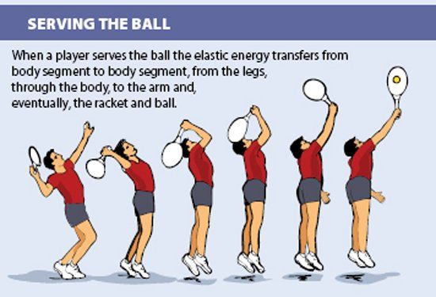
13. Sallay. “Biomechanics of Tennis.”
13. Sallay. “Biomechanics of Tennis.”
14. Trích trong “Tennis’ Sonic Boom.” USA Today, www.usatoday.com/sports/tennis/andy-roddick-serve.htm.
14. Quoted in “Tennis’ Sonic Boom.” USA Today, www.usatoday.com/sports/tennis/andy-roddick-serve.htm.
15. Trích trong Tom Colligan. “Tennis Physics: Anatomy of a Serve.” Popular Mechanics, December 18, 2009. www.popularmechanics.com/outdoors/sports/physics/4221210#ixzz1pJIjbA2i.
15. Quoted in Tom Colligan. “Tennis Physics: Anatomy of a Serve.” Popular Mechanics, December 18, 2009. www.popularmechanics.com/outdoors/sports/physics/4221210#ixzz1pJIjbA2i.
Chương 6: Tâm lý học quần vợt
16. Trích trong Patrick Cohn. “Djokovic’s Mental Game: Riding the Momentum.” Sports Psychology for Tennis, tháng 5 20, 2011. www.sportspsychologytennis.com/?p=3496.
16. Quoted in Patrick Cohn. “Djokovic’s Mental Game: Riding the Momentum.” Sports Psychology for Tennis, May 20, 2011. www.sportspsychologytennis.com/?p=3496.
17.
17.
John H.
John H.
Sklare.
Sklare.
“Play Smarter Not Harder.”
“Play Smarter Not Harder.”
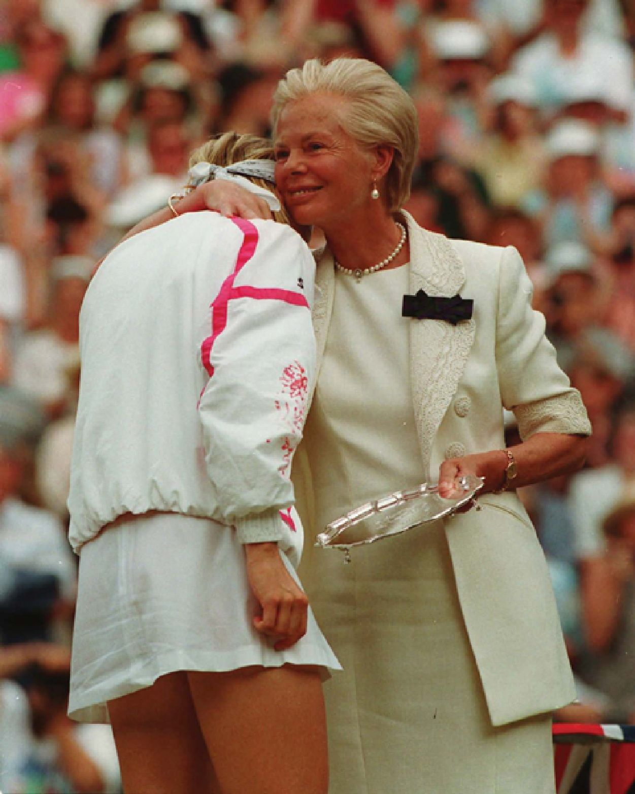
USTA Atlanta. www.atlanta.usta.com/Atlanta_Tennis/Play_Smarter_Not_Harderby_Dr_John_H_Sklare/.
USTA Atlanta. www.atlanta.usta.com/Atlanta_Tennis/Play_Smarter_Not_Harderby_Dr_John_H_Sklare/.
18. Trích trong Patrick Cohn. “Kim Clijsters Beats Wozniaki with a Strong Mental Game.” Sports Psychology for Tennis, tháng 1 25, 2012. www.sportspsychologytennis.com/?p=3646.
18. Quoted in Patrick Cohn. “Kim Clijsters Beats Wozniaki with a Strong Mental Game.” Sports Psychology for Tennis, January 25, 2012. www.sportspsychologytennis.com/?p=3646.
19. Trích trong Allen Fox. Tennis: Winning the Mental Match. Kearney, NE: Morris, 2010. tr. v.
19. Quoted in Allen Fox. Tennis: Winning the Mental Match. Kearney, NE: Morris, 2010. p. v.
20. Trích trong “David Nalbandian Explains Criticism After Disqualification.” BBC, tháng 6 17, 2012. www.bbc.co.uk/sport/0/tennis/18480270.
20. Quoted in “David Nalbandian Explains Criticism After Disqualification.” BBC, June 17, 2012. www.bbc.co.uk/sport/0/tennis/18480270.
21.
21.
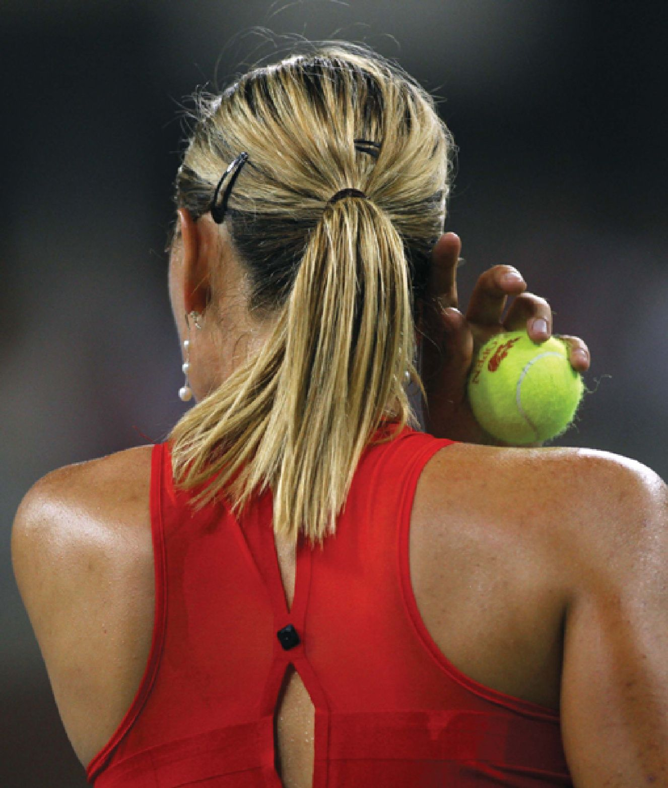
Ana Ivanović.
Ana Ivanović.
Interview: Australian Open.
Interview: Australian Open.
ASAP Sports, tháng 1 24, 2008. www.asapsports.com/show_interview.php?id=47257.
ASAP Sports, January 24, 2008. www.asapsports.com/show_interview.php?id=47257.
22. Trích trong “Athlete’s ‘Rituals’ Important for Overcoming Performance Anxiety.” PHYS.org, tháng 1 31, 2007. http://phys.org/news89468913.html#jCp.
22. Quoted in “Athlete’s ‘Rituals’ Important for Overcoming Performance Anxiety.” PHYS.org, January 31, 2007. http://phys.org/news89468913.html#jCp.
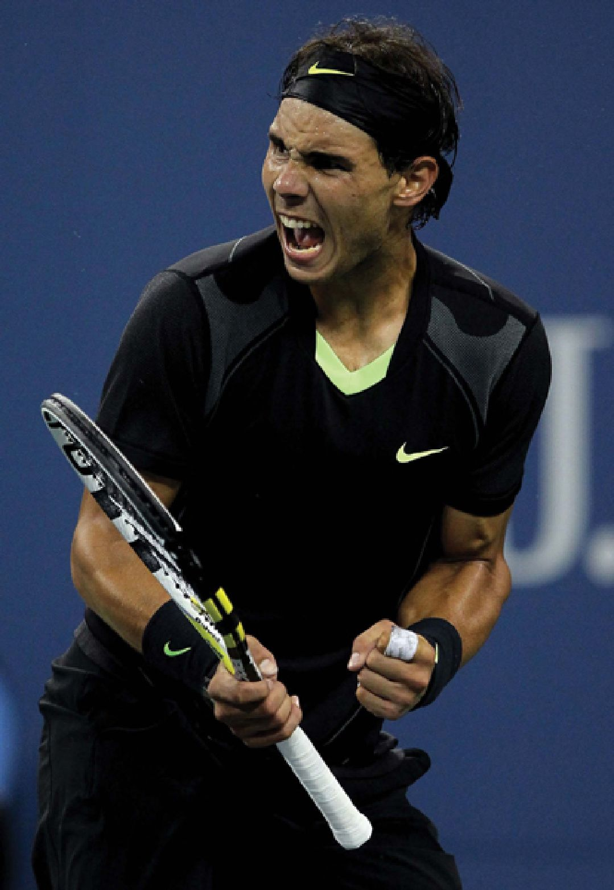
23. Trích trong “Athlete’s ‘Rituals’ Important for Overcoming Performance Anxiety.”
23. Quoted in “Athlete’s ‘Rituals’ Important for Overcoming Performance Anxiety.”
24. Trích trong Exact Sports Blog. “Roger Federer: Calm Under Pressure.” Blog entry by Trevor, July 10, 2012. http://exactsports.com/blog/roger-federer-calm-underpressure/2012/07/10/.
24. Quoted in Exact Sports Blog. “Roger Federer: Calm Under Pressure.” Blog entry by Trevor, July 10, 2012. http://exactsports.com/blog/roger-federer-calm-underpressure/2012/07/10/.
25. Pete Sampras. A Champion’s Mind: Lessons from a Life in Tennis. With Peter Bodo. New York: Crown, 2008. tr. xi.
25. Pete Sampras. A Champion’s Mind: Lessons from a Life in Tennis. With Peter Bodo. New York: Crown, 2008. p. xi.
26. Sklare. “Play Smarter Not Harder.”
26. Sklare. “Play Smarter Not Harder.”
BẢNG THUẬT NGỮ
aerobic: Occurring only in the presence of oxygen. anaerobic: Occurring in the absence of oxygen. concentric action: The phase of plyometric exercise during which the muscle contracts and applies its force. dynamic stretching: A method of stretching muscles that includes moving them through the joint’s range of motion. eccentric action: A movement in which muscle fibers lengthen and stretch. force: Any outside stress that causes an object to move or change its shape. friction: The resistance put on a moving object by another surface that causes it to slow down. kinetic energy: The form of energy involved in movement.
aerobic: Occurring only in the presence of oxygen. anaerobic: Occurring in the absence of oxygen. concentric action: The phase of plyometric exercise during which the muscle contracts and applies its force. dynamic stretching: A method of stretching muscles that includes moving them through the joint’s range of motion. eccentric action: A movement in which muscle fibers lengthen and stretch. force: Any outside stress that causes an object to move or change its shape. friction: The resistance put on a moving object by another surface that causes it to slow down. kinetic energy: The form of energy involved in movement.
Magnus effect: The force on a spinning object that causes it to change its path in flight. mass: The amount of matter contained in an object. plyometrics: A method of power training that puts the muscles in a prestretch before executing a powerful contraction. static stretching: Stretching a muscle with a slow movement that is held in place for twenty to thirty seconds.
Magnus effect: The force on a spinning object that causes it to change its path in flight. mass: The amount of matter contained in an object. plyometrics: A method of power training that puts the muscles in a prestretch before executing a powerful contraction. static stretching: Stretching a muscle with a slow movement that is held in place for twenty to thirty seconds.
ĐỂ BIẾT THÊM THÔNG TIN
Books Patricia Bow. Tennis Science. New York: Crabtree, 2009. Good overview of science related to tennis.
Books Patricia Bow. Tennis Science. New York: Crabtree, 2009. Good overview of science related to tennis.
Anne K. Brown. People in the News: Roger Federer. Farmington Hills, MI: Lucent Books, 2012.
Anne K. Brown. People in the News: Roger Federer. Farmington Hills, MI: Lucent Books, 2012.
Biography about the life and career of tennis great Roger Federer.
Biography about the life and career of tennis great Roger Federer.
Jacqueline Edmondson. Venus and Serena Williams: A Biography. Westport, CT: Greenwood, 2005.
Jacqueline Edmondson. Venus and Serena Williams: A Biography. Westport, CT: Greenwood, 2005.
Biography of tennis stars Venus and Serena Williams.
Biography of tennis stars Venus and Serena Williams.
Paul Roetert and Todd Ellenbecker. Complete Conditioning for Tennis. Champaign, IL: Human Kinetics, 2007. Details exercises, drills, and programs designed to improve tennis performance.
Paul Roetert and Todd Ellenbecker. Complete Conditioning for Tennis. Champaign, IL: Human Kinetics, 2007. Details exercises, drills, and programs designed to improve tennis performance.
Venus Williams and Serena Williams. Venus & Serena: Serving from the Hip; 10 Rules for Living, Loving, and Winning, with Hilary Beard. Boston: Mifflin, 2005. Tennis stars Venus and Serena Williams offer advice to teens.
Venus Williams and Serena Williams. Venus & Serena: Serving from the Hip; 10 Rules for Living, Loving, and Winning, with Hilary Beard. Boston: Mifflin, 2005. Tennis stars Venus and Serena Williams offer advice to teens.
Websites International Tennis Federation (www.itftennis.com). This is the website of the world governing body of tennis. It includes brief articles about balls, rackets, strings, and courts and how they affect the game of tennis.
Websites International Tennis Federation (www.itftennis.com). This is the website of the world governing body of tennis. It includes brief articles about balls, rackets, strings, and courts and how they affect the game of tennis.
International Tennis Hall of Fame & Museum (www.tennisfame.com). This site offers brief biographies on hall of fame players and a history of tennis in the United States.
International Tennis Hall of Fame & Museum (www.tennisfame.com). This site offers brief biographies on hall of fame players and a history of tennis in the United States.
United States Tennis Association (www.usta.com). This site offers information about strength training, biomechanics, sports medicine, and other topics related to the science of tennis.
United States Tennis Association (www.usta.com). This site offers information about strength training, biomechanics, sports medicine, and other topics related to the science of tennis.
CHỈ MỤC
A ABC Wide World of Sports, 6 Acceleration, 7, 29 Acute injuries, 25 Adenosine triphosphate (ATP), 38, 39 AEGON Championships, 83 Aerobic activities, 37–39 Aerodynamics, 6 African Americans, 9, 9 Agassi, Andre, 93 Agility, 24, 28, 28–29 Agility drills, 28, 29 Airflow, 71 Allaster, Stacey, 10 All England Croquet Club, 14, 15 Aluminum frame, 42 Amateur tennis, 22 American Tennis Association (ATA), 9 National Championships of, 9 Anaerobic activities, 37–39 Angle of incidence, 62 Angle of reflection, 61, 62 Arm circles, 27 Arming the ball, 74 Ashe, Arthur, 9, 9 Ashe, Arthur, Stadium, 9 Ash wood, 42 Association of Tennis Professionals (ATP), 22, 92 tournaments of, 57 tour of, 22 Australian Open, 9, 18, 20 Azarenka, Victoria, 86 B Backhand shot, 30, 31, 33, 71 Back pain, 25 Backspin, 69, 71 Balance point, 46 Baseline players, 65 Bicep curl, 35 Biceps, 33, 35 Biomechanics, 6, 74 Bogataj, Vinko, 6 Bones, 29 The Book of the Game (Wingfield), 13 Borotra, Jean, 19 Brugnon, Jacques, 19 Budge, Don, 9 C Career Grand Slam, 20 Cartilage, torn, 25 Center of gravity, 6 Center of percussion (COP), 48, 49–50 A Champion’s Mind: Lessons from a Life in Tennis (Sampras), 91 Cheating, 7 Clijsters, Kim, 80, 81 Cochet, Henri, 19 Coefficient of friction (COF), 64 Coefficient of restitution (COR), 48, 62, 65 Color barrier in tennis, 9 Competitive sporting, 6 Complete Conditioning for Tennis (Roetert and Ellenbecker), 34 Concentration, 88 Concentric muscle action, 31, 32, 36, 37 Cox, Richard, 88, 91 Creatine phosphate (CP), 38 Cricket, 13, 14 Cricket clubs, 13 Cross, Rod, 40 Cross-court service box, 76 D Davis, Dwight, 18 Davis Cup, 18, 19, 20, 21, 92 Dead spots, 48, 48, 49 Deceleration, 29 Djokovic, Novak, 79 Double-fault, 82, 86 Drag, 66, 67–68, 70, 71 Draper, Scott, 23 Drills, 31 agility, 28, 29 line, 39 movement, 28, 29, 39 Druid Hill Park, 9 Dwell time, 51 Dwight, James, 16 Dynamic stretching, 26–27 E Eccentric muscle action, 31, 32, 32, 37 Edward III of England, 11 Elastic energy, 72, 73 Ellenbecker, Todd, 34 Elliott, Bruce, 76 Endurance, 24, 35 Energy elastic, 73 kinetic, 7, 45, 72, 73, 74 potential, 70, 74 transfer of, 45 Exit speed, 41, 43, 45 Exploding pushup, 36 F Faribault, John, 17 Federer, Roger, 22, 47, 84, 89–90, 91 Fibers, 33 Flexibility, 24–26 stretching in improving, 26 Focus, 79, 88 Footwork, 28, 28–29, 31 Forehand shot, 31–32, 73 Foul, 77 Four Musketeers, 19 Fox, Allen, 89 Francis I of France, 11 French Open, 18, 19, 20, 21, 65 French Revolution, 13 Friction, 6, 57, 60, 61, 62, 63 G Gambetta, Vern, 37 Game plan, 82 Gibson, Althea, 9 Gilbert, Brad, 76, 93 Gimelstob, Justin, 81–82 Glutes, 32 Golden Slam, 11 Gonzalez, Fernando, 83 Gore, Spencer, 14 Graf, Steffi, 11, 86 Grand Slam, 8, 9, 19, 20, 21, 22, 85 events in, 22 Graphite frames, 42 Gravity, 66 Ground-reaction force, 58–59, 73, 76 Ground strokes, 71–74, 72 H Hampton Court Palace, 11 Hamstrings, 32 Hansell, Ellen, 16 Head-heavy rackets, 46 Head-light rackets, 46 Henry VIII of England, 11 I Incoming speed, 41 Injuries acute, 25 overuse, 25 International Lawn Tennis Challenge, 18 International Lawn Tennis Federation, 18 International Olympic Committee, 18 International Tennis Federation (ITF), 18, 55 on stretching, 26 Interval training, 39 Isotonic resistance, 35 Ivanović, Ana, 87 J Jeu de paume, 10–11, 23 Joints, 24–25 flexibility of, 25 injuries to, 26 structure of, 26 K Kevlar strings, 50 Kinetic chain, 72, 73–74, 75 Kinetic energy, 7, 45, 72, 73, 74 Knee injuries, 25, 25 Knee pain, 25 L Lacoste, René, 19 Lactic acid, 39 Lateral obstacle jump, 36 Lawn tennis, 13–15, 14, 15, 16 Lawn Tennis Association (LTA), 22 Leg swings, 27 Lenglen, Suzanne, 17 Lift, 66, 68 Ligaments, 24 torn, 25 Li Na, 10 Lindsey, Crawford, 40 Line drills, 39 Louis X of France, 11 Love, 71 M Magnus, Heinrich Gustav, 70 Magnus force, 70–71 Majors, 20. See also Grand Slam Martin, Todd, 53 Marylebone Cricket Club, 14 McDaniel, Jimmie, 9 McEnroe, John, 92 McKendry, Chris, 23 Medicine ball slam, 36 Mental skills, 79, 80–81, 88–90 Minimum-maximum angle range, 77–78 Momentum, 6 Monfils, Gael, 30 Movement, muscles behind, 33 Movement drills, 28, 29, 39 Murray, Andy, 91 Muscles, 24, 25–26, 29, 70 actions involving, 31–32, 32 injuries to, 26 movement and, 33 sprains of, 25 strength, power, and endurance and, 33–35 N Nadal, Rafael, 10, 79, 84, 89, 90–91 Nalbandian, David, 83–84 Natural gut strings, 50, 52 Newport Casino, 16 Newton, Isaac, 58, 59 first law of motion, 58, 66 second law of motion, 58 third law of motion, 58, 58 Node, 48, 49 Novotná, Jana, 85, 86 Nylon strings, 50, 52 O Oberstdorf, West Germany, 6 Olympics, 8, 11, 17, 18 Open tennis, 22 Opponent, dominating the, 88–91 Outerbridge, Mary, 15–16 Overuse injuries, 25 P Pasarell, Charlie, 22 Peer, Shahar, 28 Philadelphia Cricket Club, 16 Pinwheeling crash, 6 Plyometrics, 29, 36, 37 Polyester strings, 50, 52, 53 Positive self-talk, 84, 91 Potential energy, 70, 74 Power, 24, 35, 36–37 swing weight and, 47 Pressure, dealing with, 84–86 Pressurization of tennis ball can, 56, 56–57 Professional tennis, 10, 20, 42 Q Quadriceps, 32 Quickness, 29–31, 30 R Racket head, 46–47 Rackets, 13 Range of movement (ROM), 24 Reaction time, 30 Rebound angle, 61, 61–62, 64 Rebound speed, 41–43, 45 Resistance training, 35 Response time, 30–31 Rituals, 86–88, 87 Roddick, Andy, 33, 75, 76 Roetert, Paul, 34 Roland Garros, 21, 63 Rolling friction, 60 Rope jumping, 38 Rotator cuff tendinitis, 25 Royal tennis court, 11, 12 S Sallay, Peter, 73, 74 Sampras, Pete, 85, 91 Scientific principles, 6, 7 Sears, Richard, 16 Self-confidence, 79, 91–94 Serve, 75, 75–76 getting in, 76–78 overhand, 16 smashing a, 31 underhand, 16 Service box, 78 Serving an ace, 37 Sharapova, Maria, 10, 26, 86–87, 87 Shots backhand, 30, 31 forehand, 31–32, 73 types of, 31 Sidespin, 69 Skeletal muscles, 33 Ski-flying World Championships, 6 Sklare, John H., 81, 93–94 Slams, 11, 18 Slide shuffles, 39 Sliding friction, 60 Spadea, Vince, 92, 92–93 Speed, 24, 29–31, 43 Speed training, 29 Sphairistike, 13 Split-second bounce, 57 Sports doping, 7 Sports psychology, 88, 90 Sprint training, 29 Squash, 13 Squat jumps, 37 Squat throw, 36 Staten Island Cricket & Baseball Club, 15, 15 Static stretching, 26, 27 Steel frame, 42 Stiffness, string, 52–53 Strains, 25 Strength, 24, 35 Stretching, 26–27, 27 dynamic, 26–27 static, 26, 27 Stretching exercises, 26 Strings importance of, 50–52 pattern of, 53 tension in, 41, 50 types of, 52, 52–53 Sweet spots, 48, 48–50 Swing weight, 46–47 Synthetic strings, 52 T Technical Tennis: Racquets, Strings, Balls, Courts, Spin, and Bounce (Cross and Lindsey), 40 Tendons, 24, 33 injuries to, 26 Tennis amateur, 22 color barrier in, 9 as competitive game, 16, 17–18 contemporary, 22 s global sport, 8, 10 golden age of, 18–20 lawn, 13–15, 14, 15, 16 open era of, 21–22 origins of, 10–11 playing of, by royals, 11–13, 12 professional, 10, 20, 42 psychology of, 79–94 in the United States, 15–17 Women’s, 8, 10, 15, 18 Tennis balls, 11, 50 acceleration of, 68–69 aerodynamics of, 66–68 arming, 74 bounce of, 54, 57–59, 58 composition of, 13 covering for, 55, 57 evolution of, 11, 54–55 horizontal speed of, 61, 62, 63–64 properties of, 56, 56–57 putting spin on, 68–70 speed of, 34 surface of, 67, 67–68 testing tournament, 55 vertical speed of, 59, 61, 62, 64 vulcanized rubber, 13 yellow color of, 55, 57 Tennis courts, 77 acrylic, 62 asphalt, 13, 62 characteristics of, 62–64 clay, 13, 59, 62, 63, 64 concrete, 13 fast, 65 friction of, 64 grass, 13, 59, 62, 64 indoor, 11 resurfacing, 64 roughness of, 62–63 royal, 12 slow, 65 Tennis elbow, 25 Tennis rackets, 10, 12 balance point of, 46 control of, 43–44, 50 evolution of, 41, 42, 42 power of, 40–43, 45, 50 properties of, 40–41, 44, 48 speed of, 41–43 stiffness and vibrations of, 47 strings of, 50–53, 52 weight of, 44, 44–45 Tennis View Magazine, 23 Tilden, Bill, 19, 19–20 Topspin, 60, 68–69, 69, 71, 78 Torque, 7 Torso twists, 27 Training conditioning programs and, 24 interval, 39 resistance, 35 speed, 29 sprint, 29 strength and power, 35–37 Triceps, 33 Tuck jumps, 36 U United States, tennis in, 15–17 U.S. National Lawn Tennis Association (USNLTA), 16 U.S. National Singles Championship, 16 U.S. Open, 8, 9, 16, 18, 19, 20, 22, 89 United States Tennis Association (USTA), 9, 16, 55 Junior League, 23 United States Women’s National Singles Championship, 16 V Velocity, 7 Vibration node, 49 Visualization, 90 W Warm-up exercises, 26, 27 Wightman Cup, 18 Williams, Serena, 8, 33, 69, 75 Williams, Venus, 8 Wilson Sporting Goods, 42 Wimbledon, 9, 10, 14, 15, 18, 20, 57, 64, 65, 84, 85–86 Window of acceptance, 77–78 Wind sprints, 39 Windup, 76 Wingfield, Walter Clopton, 13 Women’s tennis, 8, 10, 15, 18 Women’s Tennis Association (WTA), 10, 22 tournaments of, 57 Wood frame, 42 Wozniacki, Caroline, 38 Wrist strains, 25 Z Zheng Jie, 34
A ABC Wide World of Sports, 6 Acceleration, 7, 29 Acute injuries, 25 Adenosine triphosphate (ATP), 38, 39 AEGON Championships, 83 Aerobic activities, 37–39 Aerodynamics, 6 African Americans, 9, 9 Agassi, Andre, 93 Agility, 24, 28, 28–29 Agility drills, 28, 29 Airflow, 71 Allaster, Stacey, 10 All England Croquet Club, 14, 15 Aluminum frame, 42 Amateur tennis, 22 American Tennis Association (ATA), 9 National Championships of, 9 Anaerobic activities, 37–39 Angle of incidence, 62 Angle of reflection, 61, 62 Arm circles, 27 Arming the ball, 74 Ashe, Arthur, 9, 9 Ashe, Arthur, Stadium, 9 Ash wood, 42 Association of Tennis Professionals (ATP), 22, 92 tournaments of, 57 tour of, 22 Australian Open, 9, 18, 20 Azarenka, Victoria, 86 B Backhand shot, 30, 31, 33, 71 Back pain, 25 Backspin, 69, 71 Balance point, 46 Baseline players, 65 Bicep curl, 35 Biceps, 33, 35 Biomechanics, 6, 74 Bogataj, Vinko, 6 Bones, 29 The Book of the Game (Wingfield), 13 Borotra, Jean, 19 Brugnon, Jacques, 19 Budge, Don, 9 C Career Grand Slam, 20 Cartilage, torn, 25 Center of gravity, 6 Center of percussion (COP), 48, 49–50 A Champion’s Mind: Lessons from a Life in Tennis (Sampras), 91 Cheating, 7 Clijsters, Kim, 80, 81 Cochet, Henri, 19 Coefficient of friction (COF), 64 Coefficient of restitution (COR), 48, 62, 65 Color barrier in tennis, 9 Competitive sporting, 6 Complete Conditioning for Tennis (Roetert and Ellenbecker), 34 Concentration, 88 Concentric muscle action, 31, 32, 36, 37 Cox, Richard, 88, 91 Creatine phosphate (CP), 38 Cricket, 13, 14 Cricket clubs, 13 Cross, Rod, 40 Cross-court service box, 76 D Davis, Dwight, 18 Davis Cup, 18, 19, 20, 21, 92 Dead spots, 48, 48, 49 Deceleration, 29 Djokovic, Novak, 79 Double-fault, 82, 86 Drag, 66, 67–68, 70, 71 Draper, Scott, 23 Drills, 31 agility, 28, 29 line, 39 movement, 28, 29, 39 Druid Hill Park, 9 Dwell time, 51 Dwight, James, 16 Dynamic stretching, 26–27 E Eccentric muscle action, 31, 32, 32, 37 Edward III of England, 11 Elastic energy, 72, 73 Ellenbecker, Todd, 34 Elliott, Bruce, 76 Endurance, 24, 35 Energy elastic, 73 kinetic, 7, 45, 72, 73, 74 potential, 70, 74 transfer of, 45 Exit speed, 41, 43, 45 Exploding pushup, 36 F Faribault, John, 17 Federer, Roger, 22, 47, 84, 89–90, 91 Fibers, 33 Flexibility, 24–26 stretching in improving, 26 Focus, 79, 88 Footwork, 28, 28–29, 31 Forehand shot, 31–32, 73 Foul, 77 Four Musketeers, 19 Fox, Allen, 89 Francis I of France, 11 French Open, 18, 19, 20, 21, 65 French Revolution, 13 Friction, 6, 57, 60, 61, 62, 63 G Gambetta, Vern, 37 Game plan, 82 Gibson, Althea, 9 Gilbert, Brad, 76, 93 Gimelstob, Justin, 81–82 Glutes, 32 Golden Slam, 11 Gonzalez, Fernando, 83 Gore, Spencer, 14 Graf, Steffi, 11, 86 Grand Slam, 8, 9, 19, 20, 21, 22, 85 events in, 22 Graphite frames, 42 Gravity, 66 Ground-reaction force, 58–59, 73, 76 Ground strokes, 71–74, 72 H Hampton Court Palace, 11 Hamstrings, 32 Hansell, Ellen, 16 Head-heavy rackets, 46 Head-light rackets, 46 Henry VIII of England, 11 I Incoming speed, 41 Injuries acute, 25 overuse, 25 International Lawn Tennis Challenge, 18 International Lawn Tennis Federation, 18 International Olympic Committee, 18 International Tennis Federation (ITF), 18, 55 on stretching, 26 Interval training, 39 Isotonic resistance, 35 Ivanović, Ana, 87 J Jeu de paume, 10–11, 23 Joints, 24–25 flexibility of, 25 injuries to, 26 structure of, 26 K Kevlar strings, 50 Kinetic chain, 72, 73–74, 75 Kinetic energy, 7, 45, 72, 73, 74 Knee injuries, 25, 25 Knee pain, 25 L Lacoste, René, 19 Lactic acid, 39 Lateral obstacle jump, 36 Lawn tennis, 13–15, 14, 15, 16 Lawn Tennis Association (LTA), 22 Leg swings, 27 Lenglen, Suzanne, 17 Lift, 66, 68 Ligaments, 24 torn, 25 Li Na, 10 Lindsey, Crawford, 40 Line drills, 39 Louis X of France, 11 Love, 71 M Magnus, Heinrich Gustav, 70 Magnus force, 70–71 Majors, 20. See also Grand Slam Martin, Todd, 53 Marylebone Cricket Club, 14 McDaniel, Jimmie, 9 McEnroe, John, 92 McKendry, Chris, 23 Medicine ball slam, 36 Mental skills, 79, 80–81, 88–90 Minimum-maximum angle range, 77–78 Momentum, 6 Monfils, Gael, 30 Movement, muscles behind, 33 Movement drills, 28, 29, 39 Murray, Andy, 91 Muscles, 24, 25–26, 29, 70 actions involving, 31–32, 32 injuries to, 26 movement and, 33 sprains of, 25 strength, power, and endurance and, 33–35 N Nadal, Rafael, 10, 79, 84, 89, 90–91 Nalbandian, David, 83–84 Natural gut strings, 50, 52 Newport Casino, 16 Newton, Isaac, 58, 59 first law of motion, 58, 66 second law of motion, 58 third law of motion, 58, 58 Node, 48, 49 Novotná, Jana, 85, 86 Nylon strings, 50, 52 O Oberstdorf, West Germany, 6 Olympics, 8, 11, 17, 18 Open tennis, 22 Opponent, dominating the, 88–91 Outerbridge, Mary, 15–16 Overuse injuries, 25 P Pasarell, Charlie, 22 Peer, Shahar, 28 Philadelphia Cricket Club, 16 Pinwheeling crash, 6 Plyometrics, 29, 36, 37 Polyester strings, 50, 52, 53 Positive self-talk, 84, 91 Potential energy, 70, 74 Power, 24, 35, 36–37 swing weight and, 47 Pressure, dealing with, 84–86 Pressurization of tennis ball can, 56, 56–57 Professional tennis, 10, 20, 42 Q Quadriceps, 32 Quickness, 29–31, 30 R Racket head, 46–47 Rackets, 13 Range of movement (ROM), 24 Reaction time, 30 Rebound angle, 61, 61–62, 64 Rebound speed, 41–43, 45 Resistance training, 35 Response time, 30–31 Rituals, 86–88, 87 Roddick, Andy, 33, 75, 76 Roetert, Paul, 34 Roland Garros, 21, 63 Rolling friction, 60 Rope jumping, 38 Rotator cuff tendinitis, 25 Royal tennis court, 11, 12 S Sallay, Peter, 73, 74 Sampras, Pete, 85, 91 Scientific principles, 6, 7 Sears, Richard, 16 Self-confidence, 79, 91–94 Serve, 75, 75–76 getting in, 76–78 overhand, 16 smashing a, 31 underhand, 16 Service box, 78 Serving an ace, 37 Sharapova, Maria, 10, 26, 86–87, 87 Shots backhand, 30, 31 forehand, 31–32, 73 types of, 31 Sidespin, 69 Skeletal muscles, 33 Ski-flying World Championships, 6 Sklare, John H., 81, 93–94 Slams, 11, 18 Slide shuffles, 39 Sliding friction, 60 Spadea, Vince, 92, 92–93 Speed, 24, 29–31, 43 Speed training, 29 Sphairistike, 13 Split-second bounce, 57 Sports doping, 7 Sports psychology, 88, 90 Sprint training, 29 Squash, 13 Squat jumps, 37 Squat throw, 36 Staten Island Cricket & Baseball Club, 15, 15 Static stretching, 26, 27 Steel frame, 42 Stiffness, string, 52–53 Strains, 25 Strength, 24, 35 Stretching, 26–27, 27 dynamic, 26–27 static, 26, 27 Stretching exercises, 26 Strings importance of, 50–52 pattern of, 53 tension in, 41, 50 types of, 52, 52–53 Sweet spots, 48, 48–50 Swing weight, 46–47 Synthetic strings, 52 T Technical Tennis: Racquets, Strings, Balls, Courts, Spin, and Bounce (Cross and Lindsey), 40 Tendons, 24, 33 injuries to, 26 Tennis amateur, 22 color barrier in, 9 as competitive game, 16, 17–18 contemporary, 22 s global sport, 8, 10 golden age of, 18–20 lawn, 13–15, 14, 15, 16 open era of, 21–22 origins of, 10–11 playing of, by royals, 11–13, 12 professional, 10, 20, 42 psychology of, 79–94 in the United States, 15–17 Women’s, 8, 10, 15, 18 Tennis balls, 11, 50 acceleration of, 68–69 aerodynamics of, 66–68 arming, 74 bounce of, 54, 57–59, 58 composition of, 13 covering for, 55, 57 evolution of, 11, 54–55 horizontal speed of, 61, 62, 63–64 properties of, 56, 56–57 putting spin on, 68–70 speed of, 34 surface of, 67, 67–68 testing tournament, 55 vertical speed of, 59, 61, 62, 64 vulcanized rubber, 13 yellow color of, 55, 57 Tennis courts, 77 acrylic, 62 asphalt, 13, 62 characteristics of, 62–64 clay, 13, 59, 62, 63, 64 concrete, 13 fast, 65 friction of, 64 grass, 13, 59, 62, 64 indoor, 11 resurfacing, 64 roughness of, 62–63 royal, 12 slow, 65 Tennis elbow, 25 Tennis rackets, 10, 12 balance point of, 46 control of, 43–44, 50 evolution of, 41, 42, 42 power of, 40–43, 45, 50 properties of, 40–41, 44, 48 speed of, 41–43 stiffness and vibrations of, 47 strings of, 50–53, 52 weight of, 44, 44–45 Tennis View Magazine, 23 Tilden, Bill, 19, 19–20 Topspin, 60, 68–69, 69, 71, 78 Torque, 7 Torso twists, 27 Training conditioning programs and, 24 interval, 39 resistance, 35 speed, 29 sprint, 29 strength and power, 35–37 Triceps, 33 Tuck jumps, 36 U United States, tennis in, 15–17 U.S. National Lawn Tennis Association (USNLTA), 16 U.S. National Singles Championship, 16 U.S. Open, 8, 9, 16, 18, 19, 20, 22, 89 United States Tennis Association (USTA), 9, 16, 55 Junior League, 23 United States Women’s National Singles Championship, 16 V Velocity, 7 Vibration node, 49 Visualization, 90 W Warm-up exercises, 26, 27 Wightman Cup, 18 Williams, Serena, 8, 33, 69, 75 Williams, Venus, 8 Wilson Sporting Goods, 42 Wimbledon, 9, 10, 14, 15, 18, 20, 57, 64, 65, 84, 85–86 Window of acceptance, 77–78 Wind sprints, 39 Windup, 76 Wingfield, Walter Clopton, 13 Women’s tennis, 8, 10, 15, 18 Women’s Tennis Association (WTA), 10, 22 tournaments of, 57 Wood frame, 42 Wozniacki, Caroline, 38 Wrist strains, 25 Z Zheng Jie, 34
DANH SÁCH HÌNH ẢNH
Cover images: © Sashkin/Shutterstock. com, © hkeita/Shutterstock.com, © bikerideriondon/Shutterstock.com © AP Images/Cesar Rangel, 92 © AP Images/Denis Paquin, 85 © AP Images/Mark Baker, 83 © AP Images/Mark Humphrey, 28 © AP Images/Mark J. Terrill, 38 © Chris McGrath/Getty Images, 89 © Chris Trotman/Getty Images for USTA, 69 © cjmac/Shutterstock.com, 34 © Clive Brunskill/Getty Images, 80 © dk/Alamy, 56 © dotshock/Shutterstock.com, 43 © Emmanuel Dunand/AFP/Getty Images, 87 © ER_09/Shutterstock.com, 42 © Focus on Sport/Getty Images, 9 © Gale, Cengage Learning, 32, 36, 48, 61, 75, 77 © Getty Images, 17 © Hulton Archive/Getty Images, 19 © Imagestate Media Partners Limit Impact Photos/Alamy, 59 © INTERFOTO/Alamy, 12 © Jasper Juinen/Getty Images, 30 © jstudio/Shutterstock.com, 25 © Maxisport/Shutterstock.com, 44 © Michael Cole/Alamy, 67 © North Wind Picture Archives/The Image Works, 15 © Olga Besnard/Shutterstock.com, 63 © PCN Photography/Alamy, 52 © Rob Dack/Shutterstock.com, 72 © Supri Suharjoto/Shutterstock.com, 27 © Ted Kinsman/Science Source/Photo Researchers, Inc., 51 © Terry Oakley/Alamy, 58 © Universal History Archive/Getty Images, 14 © Universal/TempSport/Corbis, 21
Cover images: © Sashkin/Shutterstock. com, © hkeita/Shutterstock.com, © bikerideriondon/Shutterstock.com © AP Images/Cesar Rangel, 92 © AP Images/Denis Paquin, 85 © AP Images/Mark Baker, 83 © AP Images/Mark Humphrey, 28 © AP Images/Mark J. Terrill, 38 © Chris McGrath/Getty Images, 89 © Chris Trotman/Getty Images for USTA, 69 © cjmac/Shutterstock.com, 34 © Clive Brunskill/Getty Images, 80 © dk/Alamy, 56 © dotshock/Shutterstock.com, 43 © Emmanuel Dunand/AFP/Getty Images, 87 © ER_09/Shutterstock.com, 42 © Focus on Sport/Getty Images, 9 © Gale, Cengage Learning, 32, 36, 48, 61, 75, 77 © Getty Images, 17 © Hulton Archive/Getty Images, 19 © Imagestate Media Partners Limit Impact Photos/Alamy, 59 © INTERFOTO/Alamy, 12 © Jasper Juinen/Getty Images, 30 © jstudio/Shutterstock.com, 25 © Maxisport/Shutterstock.com, 44 © Michael Cole/Alamy, 67 © North Wind Picture Archives/The Image Works, 15 © Olga Besnard/Shutterstock.com, 63 © PCN Photography/Alamy, 52 © Rob Dack/Shutterstock.com, 72 © Supri Suharjoto/Shutterstock.com, 27 © Ted Kinsman/Science Source/Photo Researchers, Inc., 51 © Terry Oakley/Alamy, 58 © Universal History Archive/Getty Images, 14 © Universal/TempSport/Corbis, 21
VỀ TÁC GIẢ
Carla Mooney is the author of several books for young readers. She loves investigating new ideas and learning about how the world works. A graduate of the University of Pennsylvania, Mooney lives in Pittsburgh with her husband and three children.
Carla Mooney is the author of several books for young readers. She loves investigating new ideas and learning about how the world works. A graduate of the University of Pennsylvania, Mooney lives in Pittsburgh with her husband and three children.